book-poodr
Table of Contents
- Foreword
- Introduction
- 1. OOD
- 2. Designing Classes with a Single Responsibility
- 3. Managing Dependencies
- 4. Creating Flexible Interfaces
- Understanding Interfaces
- Defining Interfaces
- Finding the Public Interface
- An Example App: Bicycle Touring Company
- Constructing an Intention
- TODO Using Sequence Diagrams techniques interface
- TODO Asking for "What" Instead of Telling "How"
- TODO Seeking Context Independence context important
- TODO Trusting Other Objects trust extension
- TODO Use Messages to Discover Objects SD interface object
- TODO Creating a Message-Based Application SD testing intention
- Writing Code That Puts Its Best (Inter)Face Forward
- The Law of Demeter
- Summary
- 5. Recuding Costs with Duck Typing
- 6. Acquiring Behavior Through Inheritance
- 7. Sharing Role Behavior with Modules
- Understanding Roles
- Writing Inheritable Code
- Summary
- 8. Combining Objects with Composition
- Composing a Bicycle of Parts
- Composing the Parts Object
- Manufacturing Parts
- The Composed Bicycle
- TODO Deciding Between Inheritance and Composition composition inheritance design principles rules
- Summary
- 9. Designing Cost-Effective Tests
- Intentional Testing
- TODO Testing Incoming Messages
- Testing Private Methods
- Testing Outgoing Messages query command
- TODO Testing Duck Types duck typing testing role double
- TODO Testing Inherited Code testing LSP contract
- Summary
- Afterword
- References
Foreword
In almost all cases, maintainability over the life of the code is more important than optimizing its present state. -> OOD: code will be easier to maintain and evolve.
The lucky ones were taught OO using Smalltalk!
Ruby, like Smalltalk, is a completely OO language.
When you write your own applications in Ruby, you do so by coding your own objects, each encapsulating some state and defining its own behavior.
Step of the way:
- the most basic questions:
- what to put in a class
- the basic concepts:
- the Single Responsibility Principle
- making tradeoffs between inheritance and composition
- figuring out how to test objects in isolation
Introduction
We want to do our best work, and we want the work we do to have meaning. And, all else beging equal, we prefer to enjoy ourselves along the way.
When the cost of doing work exceeds its value, our efforts feel wasted. If programming gives joy it is because it allows us to be useful. When it becomes painful it is a sign that we believe we could, and should, be doing more.
Everything in this book can be directly translated to a statically typed OO language.
How to read this book
- C1: a brief interview of OOP, its goal is to define common terms, not to teach programming.
- C2 through C9: progressively explain OOD.
- C2: how to decide what belongs in a single class
- C3: illustrates how objects get entangled with one another and shows how to keep them apart. (C2 & C3 are focused on objects rather than messages)
- C4: the emphasis begins to shift away from object-centric towards message-centric design. It's about defining interfaces and is concerned with how objects talk to one another.
- C5: is about duck typing and introduces the idea that objects of different classes may play common roles.
- C6: teaches the techniques of classical inheritance, which are then used in C7.
- C7: creates duck typed roles.
- C8: explains the technique of building objects via composition and provides guidelines for choosing among composition, inheritance, and duck-typed role sharing.
- C9: concentrates on the design of tests, which it illustrats using code from earlier chapters of the book.
How to use this book
It is up to you to question, to experiment, and to choose.
C2 through C9 explain OOD principles and provide very explicit programming rules.
The early obedience will stave off disaster until you can gain enough experience to make your own decisions. By the time the rules start to chafe, you'll have enough experience to make up rules of your own and your career as a designer will have begun.
1. OOD
This book is about designing OO software, and it views the world as a series of spontaneous interactions between objects.
OOD requires that you shift thinking of the world as a collection of predefined procedures to modeling the world as a series of messages that pass between objects.
Failures of OOD are actually failues of perspective rather than of coding techniques. Once you acquire an OO perspective the rest follows naturally.
This book guides you through the immersion process.
In praise of design
The problem design solves
It is the need for change that makes design matter.
Why change is hard
OO applications are made up of parts that interact to produce the behavior of the whole. The parts are objects; interactions are embodied in the messages that pass between them.
Getting the right message to the correct target object requires that the sender of the message know things about the receiver. This knowledge creates dependencies between the two and these dependencies stand in the way of change.
OOD is about managing dependencies. It is a set of coding techniques that arrange dependencies such that objects can tolerate change.
A practical definition of design
Every application is a collection of code, the code's arrangement is the design. Design is thus an art, the art of arranging code.
Part of the difficulty of design is that every problem has two components - you must not only write code for the feature you plan to deliver today, you must also create code that is amenable to being changed later.
You must combine an overall understanding of your applications requirements with knowledge of the costs and benefits of design alternatives and then devise an arrangement of code that is cost effective in the present and will continue to be so in the future.
Designs that anticipate specific future requirements almost always end badly.
Practical design does not anticipate what will happen to your app, it merely accepts that something will and that, in the present, you cannot know that. It doesn't guess the future; it preserves your options for accommodating the future. It doesn't choose; it leaves you room to move.
The purpose of design is to allow you to do design later and its primary goal is to reduce the cost of change.
The tools of design
Design is not the act of following a fixed set of rules, it's a journey along a branching path wherein earlier choices close off some options and open access to others.
An OO designer has tools: principles & patterns.
Design principles
SOLID represents five of the most well known principles of OOD (Micheael Feathers, Robert Martin):
- Single Responsibility
- Open-Closed
- Liskov Substitution
- Interface Segregation
- Dependency Inversion
Other principles:
- DRY (Don't Repeat Yourself)
- LoD (the Law of Demeter)
These are opinions about how to write good code.
Objective measure: metrics -> Being able to measure quality would change OOD from infinitely disputed opinion into measurable science. E.g.:
- the overall size of classes
- the entanglements that classes have with one another
- the depth and breadth of inheritance hierarchies
- the number of methods that get invoked as a result of any message sent
- …
The principles of good design represent measurable truths and following them will improve your code.
Design patterns
1995, GoF (Gang of Four).
Patterns are simple and elegant solutions to specific problems in OO software design that you can use to make your own designs more flexible, modular, reusable and understandable.
Patterns have a place in every designer's toolbox.
Avoid applying good patterns to the wrong problems!
This book is not about patterns; however, it will prepare you to understand them and give you the knowledge to choose and use them appropriately.
The Act of Design
The OOD is pretty hard: the principles and patterns are like tools. Knowing how software should look when it's done does not cause it to build itself. The end result reflects its programmer's experience with the tools of design.
TODO How Design Fails
- The lack of design: Yes, I can add that feature, but it will break everything.
- Overdesign: No, I can't add that feature, it wasn't designed to do that.
- Separation of design and programming: Well, I can certainly write this, but it's not what you want and you will eventually be sorry. <- feedback loop <- Agile development [ME: ???]
When to Design
Agile: rapid prototype -> build software in tiny increments, gradually iterating your way into an app that meets the customer's true need.
Agile believes that the most cost-effective way to produce what customers really want is to collaborate with them, building software one small bit at a time such that each delivered bit has the opportunity to alter ideas about the next.
If Agile is correct, two other things are also true:
- We don't know what we're doing. - no point in doing a Big Up Front Design (BUFD), because it cannot possibly be correct.
- We don't know when we'll be done. - no one can predict when the app will be done, because you don't know in advance what it will eventually do.
Agile need design (good design) -> Design in Agile: to arrange what code you have so that it will be easy to change. [Refactoring in every iteration]
TODO Judging Design gems metrics practical
In the days of yore, SLOC (Source Lines of Code), better then nothing. But it penalizes the efficient programmer while rewarding the verbose.
There are numerous Ruby gems (search "ruby metrics") that assess how well your code follows OOD principles. -> Run a metrics suite against your own code! [ME: worth a try!]
Problem: It is possible to create beautiful designs that over-anticipate the future. OOD metrics cannot identify designs that do the wrong thing in the right way.
The ultimate software metric would be cost per feature over the time interval that matters. But this is not easy to calculate. Cost, feature, and time are individually difficult to define, track, and measure.
If lack of feature will force you out of business today it doesn't matter how much it will cost to deal with the code tomorrow. Making this kind of design compromise is like borrowing time from the future and is known as taking on technical debt. This is a loan that will eventually need to be repaid, quite likely with interest.
Design on its own takes time and therefore costs money. Because your goal is to write software with the lowest cost per feature, your decision about how much design to do depends on two things: your skills & your timeframe. -> Delivering half of a well-designed app might be the same as delivering no app at all. -> Solution: if design takes half of your time this morning, pays that time back this afternoon, and then continues to provide benefits for the lifetime of the app, you get a kind of daily compounding interest on your time, this design effort pays off forever.
The break-even point for design depends on the programmer:
- Inexperienced programmers who do a lot of anticipatory design may never reach a point where their earlier efforts pay off.
- Skilled designers who write creafully crafted code this morning may save money this afternoon.
The remainder of this book teaches skills you can use to shift the break-even point in your favor.
A Brief Introduction to OO Programming
OO apps are made up of objects and the messages that pass between them. Messages will be the more important of the two.
Procedural Languages
Data types.
Every possible data type and operation already exists. What you see is what you get. -> [ME: Fixed syntax]
There is a chasm between data and behavior.
The influence on data can be unpredictable and largely untraceable.
OO Languages
Object instead of data type.
Objects have behavior and may contain data, data to which they alone control access. Objects invoke one another's behavior by sending each other messages.
OOL doesn't have to know anything in particular about the data types; it need only provide a general way for objects to send messages.
It's far more common to desire to manufacture a bunch of objects that have identical behavior but encapsulate different data.
Class (blueprint) = attributes (variables) + methods (behavior)
Methods get invoked in response to messages.
In procedural language, knowledge of data type lets you have expectations about which operations are valid. In OOL, an object may have many types. Knowledge of an object's type(s) therefore lets you have expectations about the messages to which it responds.
In Ruby, the String class manufactures new strings, the Class class manufactures new classes. -> OOL are thus open-ended (you can invent brand new types of your own). -> Each OO app gradually becomes a unique programming lauguage that is specifically tailored to your domain. [ME: DSL!]
Summary
The biggest problem: dealing with change.
Design: arranging code to efficiently accommodating change.
The most visible elements of design: principles & patterns.
OO metrics expose how well an app follows OO design principles.
- Bad metrics strongly imply future difficutiles.
- Good metrics are less helpful.
The trick: to accquire an understanding of the theories of design and to apply these theories appropriately.
Unlike theory, practice gets its hands dirty.
2. Designing Classes with a Single Responsibility
Messages are the foundation of an OO system, but the most visible organizational structure is the class. Messages are the core of design.
This chapter starts small and concentrates on how to decide what belongs to a class.
Questions:
- what are your classes?
- how many should you have?
- what behavior will they implement?
- how much do they know about other classes?
- how much of themselves should they expose?
Your goal:
- your app needs to work right now just once.
- it must be easy to change forever.
The quality of easy changeability reveals the craft of programming.
Much thought and research has gone into identifying the qualities that make an app easy to change.
Deciding What Belongs in a Class
The problem is not one of technical knowledge but of organization: you know how to write the code but not where to put it.
Grouping Methods into Classes
In an OOL, methods are defined in classes. The classes you create will affect how you think about your app forever. - You're constructing a box that may be difficult to think outside of.
At this early stage of your project you cannot possibly get it right (grouping methods into classes). If your app succeeds (survives), many of the decisions you make today will need to be changed later.
Design is more the art of preserving changeability than it is the act of achieving perfection.
Organizing Code to Allow for Easy Changes TRUE principles
If you define easy to change as:
- Changes have no unexpected side effects
- Small changes in requirements require correspondingly small changes in code
- Existing code is easy to reuse.
- The easiest way to make a change is to add code that in itself is easy to change.
Code should be:
- Transparent: the consequences of changes should be obvious in the code that is changing and in distance code that relies upon it.
- Reasonable: the cost of any change should be proportional to the benefits the change achieves.
- Usable: existing code should be usable in new and unexpected contexts.
- Exemplary: the code itself should encourage those who change it to perpetuate these qualities.
-> TRUE
The first step in creating code that is TRUE is to ensure that each class has a single, well-defined responsibility.
Creating Classes That Have a Single Responsibility
SR: A class should do the smallest possible useful thing.
Example: bicycles.
An Example Application: Bicycles and Gears
Bicyclists use the ratio of the numbers of the teeth of the chainring and cog:
chainring = 52 # number of teeth cog = 11 ratio = chainring / cog.to_f puts ratio chainring = 30 cog = 27 ratio = chainring / cog.to_f puts ratio >>>> 4.7272727272727275 1.1111111111111112
Goal: write an app to calculate gear ratios.
The app will be made of Ruby classes, each representing some part of the domain.
Intuition says that bicycle should be a class, but nothing in the above description lists any behavior for bicycle, so, as yet, it does not qualify.
Gear, however, has both data (chainrings, cogs, and ratios) and behavior [pushing pedals???]. It deserves to be a class.
class Gear attr_reader :chainring, :cog def initialize(chainring, cog) @chainring = chainring @cog = cog end def ratio chainring / cog.to_f end end puts Gear.new(52, 11).ratio puts Gear.new(30, 27).ratio >>>> 4.7272727272727275 1.1111111111111112
Gear is a subclass of Object and thus inherits many other methods. You can act as if these inherited methods do not exist. (Refer to Chapter 6. Acquiring Behavior Through Inheritance)
Your cyclist friend asks for an enhancement: calculate the effect of the difference in wheels. Cyclists use something called gear inches to compare bicycles that differ in both geering and wheel size. The formula follows:
gear inches = wheel diameter * gear ratio
Where:
wheel diameter = rim diameter + twice tire diameter
You change the Gear class to add this new behavior:
class Gear attr_reader :chainring, :cog, :rim, :tire def initialize(chainring, cog, rim, tire) @chainring = chainring @cog = cog @rim = rim @tire = tire end def ratio chainring / cog.to_f end def gear_inches # tire goes around rim twice for diameter ratio * (rim + tire * 2) end end puts Gear.new(52, 11, 26, 1.5).gear_inches puts Gear.new(52, 11, 24, 1.25).gear_inches >>>> 137.0909090909091 125.27272727272728
The Gear class meets the specifications and the code, with the exception of the following bug, works:
puts Gear.new(52, 11).ratio >>>> ArgumentError: wrong number of arguments (given 2, expected 4) (pry):26:in `initialize' (pry):45:in `new' (pry):45:in `<main>' /root/.rbenv/versions/2.3.1/lib/ruby/gems/2.3.0/gems/pry-0.10.4/lib/pry/pry_instance.rb:355:in `eval' /root/.rbenv/versions/2.3.1/lib/ruby/gems/2.3.0/gems/pry-0.10.4/lib/pry/pry_instance.rb:355:in `evaluate_ruby' ...
Reason of bug: altering the number of arguments that a method requires breaks all existing callers of the method.
Solution: Because the app is so small that Gear.initialize currently has no other callers, the bug can be ignored for now.
Now that a rudimentary Gear class exists, it's time to ask the question: Is this the best way to organize the code?
The answer is: it depends. If you expect the app to remain static forever, Gear in its current form may be good enough. However, in order to efficiently evolve, code must be easy to change.
Why Single Responsibility Matters
Apps that are easy to change consists of classes that are easy to reuse.
Reusable classes are pluggable units of well-defined behavior that have few entanglements. You can select just the pieces you need and assemble them in unanticipated ways.
A class that has more than one responsibility is difficult to reuse. You increase your app's chance of breaking unexpectedly if you depend on classes that do too much:
- Reuse by duplicating code: a very bad idea.
- Reuse the entire class and access only the behavior you need: it may change for a reason that is unrelated to your use of it.
Determining If a Class Has a Single Responsibility
SRP (Single Responsibility Principle): a class should do the smallest possible useful thing.
How can you determine if a class contains behavior that belongs somewhere else? - By rephrasing every one of its methods as a question, e.g.
- "Please Mr. Gear, what is your ratio?" - Resonable.
- "Please Mr. Gear, what are your gearinches?" - On shaky ground.
- "Please Mr. Gear, what is your tire (size)?" - Ridiculous.
Another way to hone in on what a class is actually doing is to attempt to describe it in one sentence. That ought to be simple to describe (SRP):
- if the simplest description uses the word "and", the class likely has more than one responsibility.
- if it uses the word "or", then the class has more than one responsiblity and they aren't even very related.
Cohesion is used to describe this concept: when everything in a class is related to its central purpose, the class is said to be highly cohesive or to have a single responsibility.
SRP by Rebecca Wirfs-Brock and Brian Wilerson:
A class has responsibilities that fulfill its purpose.
-> Everything the class does be highly related to its purpose.
For example, how would you describe the responsibility of the Gear class?
- "Calculate the ratio between two toothed sprockets" - the current class does too much.
- "Calculate the effect that a gear has on a bicycle" -
gear_inchesis back on solid ground, buttiresize is still quite shaky.
Conclusion: the Gear class doesn't feel right. It has more than one responsibility but it's not obvious what should be done.
Determining When to Make Design Decisions
It's common to find yourself in a situation where you know something isn't quite right with a class.
If you only knew what feature requests would arrive in the future, you could make perfect design decisions today. Unfortunately, you do not. Anything might happen.
Do not feel compelled to make design decisions prematurely. Ask yourself: What is the future cost of doing nothing today?
When the future cost of doing nothing is the same as the current cost, postpone the decision. Make the decision only when you must with the information you have at that time. [ME: 如果现在还不知道将来的需求，那么现在过早做出决定的 cost 不小于现在什么都不做的 cost]
The most cost-effective course of action may be to wait for more information. The class has no dependencies. Conveniently, the new dependencies will supply the exact information you need to make good design decisions.
The structure of every class is a message to future maintainers of the app. It reveals your design intentions. The patterns you establish today will be replicated forever.
Gear class lies about your intentions. The code in the Gear class is both transparent and reasonable, but it's neither usable nor exemplary. It is not a pattern that should be replicated.
When the code lies you must be alert to programmers believing and then propagating that lie.
This "improve it now" versus "improve it later" tension always exists. Apps are never perfectly designed. Every choice has a price. A good designer understands this tension and minimizes costs by making informed tradeoffs between the needs of the present and the possibilities of the future.
TODO Writing Code That Embraces Change techniques principles
Change is inevitable, coding in a changeable style has big future payoffs.
Coding in these styles will improve your code, at no extra cost.
Here are a few well-known techniques that you can use to create code that embraces change:
Depend on Behavior, Not Data DRY principles
Behavior is captured in methods and invoked by sending messages.
When you create classes that have a single responsiblity, every tiny bit of behavior lives in one and only one place -> DRY is a shortcut for this idea: DRY code tolerates change because any change in behavior can be made by changing code in just one place.
Hide Instance Variables
Always wrap instance variables in accessor methods instead of directly referring to variables.
Hide the variables, even from the class that defines them, by wrapping them in methods.
Implementing this changes variables (which is referenced all over) from data to behavior (which is defined once). You can change what it means by implementing your own version of the method.
Dealing with data as if it's an object that understands messages introduces two new issues:
- Visibility: Wrapping instance variable in a public method expose this variable to the other objects in your app -> create a private wrapping method
- The distinction between data and a regular object begins to disappear. -> Most things are bettern thought of as plain old object.
Conclusion: You should hide data from yourself. Doing so protects the code from being affected by unexpected changes. Data very often has behavior that you don't yet know about. Send messages to access variables, even if you think of them as data.
Hide Data Structures
If being attached to an instance var is bad, depending on a complicated data structure is worse.
class ObscuringReferences attr_reader :data def initialize(data) @data = data end def diameters # 0 is rim, 1 is tire data.collect{|cell| cell[0] + (cell[1] * 2)} end # ... many other methods that index into the array end # rim and tire sizes (now in millimeters!) in a 2d array obj = ObscuringReferences.new([[622, 20], [622, 23], [559, 30], [559, 40]]) obj.diameters >>>> [662, 668, 619, 639]
Each sender of data must have complete knowledge of what piece of data is at which index in the array (e.g. the methode diameters).
If that structure changes, then this code must change. They escape encapsulation and insinuate themselves throughout the code. -> Not DRY. -> The knowledge about the structure should be known in just one place.
In Ruby, we can use Struct class to wrap a structure (compared to attr_xxx methods):
class RevealingReferences attr_reader :wheels def initialize(data) @wheels = wheelify(data) end def diameters # (2) wheels.collect{|wheel| wheel.rim + (wheel.tire * 2)} end # ... now everyone can send rim/tire to wheel Wheel = Struct.new(:rim, :tire) # (1) def wheelify(data) data.collect{|cell| Wheel.new(cell[0], cell[1])} end end # rim and tire sizes (now in millimeters!) in a 2d array obj = RevealingReferences.new([[622, 20], [622, 23], [559, 30], [559, 40]]) obj.diameters >>>> [662, 668, 619, 639]
Explanation:
- (1): Struct is defined as "a convenient way to bundle a number of attributes together, using accessor methods, without having to write an explicit class." (refer to http://ruby-doc.org/core/classes/Struct.html). If the input changes, the code will change in just this place. -> DRY
- (2): The
diametersmethod now has no knowledge of the internal structure of the array.
Conclusion: If you can control the input, pass in a useful object, but if you are compelled to take a messy structure, hide the mess even from yourself.
Enforce Single Responsibility Everywhere SR principles
Extract Extra Responsibilities from Methods
Methods, like classes, should have a single responsibility. Having just one responsibility makes them easy to change and easy to reuse.
Design techniques (as with classes):
- ask them questions about what they do
- try to describe their responsibilities in a single sentence
Common case: separating iteration from the action that's being performed on each element - diameters method: it has two responsibilities, it iterates over the wheels & it calculates the diameter of each wheel.
class SeparatingIterationExapmle attr_reader :wheels def initialize(data) @wheels = wheelify(data) end def diameters wheels.collect{|wheel| diameter(wheel)} end def diameter(wheel) # <--- this method can be called from other places wheel.rim + (wheel.tire * 2) end # ... now everyone can send rim/tire to wheel Wheel = Struct.new(:rim, :tire) # (1) def wheelify(data) data.collect{|cell| Wheel.new(cell[0], cell[1])} end end # rim and tire sizes (now in millimeters!) in a 2d array obj = SeparatingIterationExapmle.new([[622, 20], [622, 23], [559, 30], [559, 40]]) obj.diameters >>>> [662, 668, 619, 639]
Performance can be improved later, if need be. Right now, the most important design goal is to write code that is easily changeable.
In other cases the problem is not so obvious:
class Gear attr_reader :chainring, :cog, :rim, :tire def initialize(chainring, cog, rim, tire) @chainring = chainring @cog = cog @rim = rim @tire = tire end def ratio chainring / cog.to_f end def gear_inches # tire goes around rim twice for diameter ratio * (rim + tire * 2) end end
Questions: is gear_inches a responsibility of the Gear class?
Hidden inside gear_inches is the calculation for wheel diameter:
class Gear attr_reader :chainring, :cog, :rim, :tire def initialize(chainring, cog, rim, tire) @chainring = chainring @cog = cog @rim = rim @tire = tire end def ratio chainring / cog.to_f end def gear_inches # tire goes around rim twice for diameter ratio * diameter # <--- end def diameter # <--- rim + tire * 2 end end puts Gear.new(52, 11, 26, 1.5).gear_inches puts Gear.new(52, 11, 24, 1.25).gear_inches >>>> 137.0909090909091 125.27272727272728
Conclusion: Do these refactorings even when you do not know the ultimate design. They are needed, not because the design is clear, but because it isn't. Good practices reveal design. -> Gear should not be calculating wheel diameter.
Methods that have a single responsibility confer the following benefits:
- Expose previously hidden qualities: Refactoring a class so that all of its methods have a single responsibility has a clarifying effect on the class. Even if you do not intend to reorganize the methods into other classes today, having each of them server a single purpose makes the set of things the class does more obvious.
- Avoid the need for comments: Because comments are not executable, they are merely a form of decaying documentation. -> If a bit of code inside the method needs a comment, extract that bit into a separate method. The new method name serves the same purpose as did the old comment.
- Encourage reuse: Small methods encourage coding behavior that is healthy for your app. Other programmers will reuse the methods instead of duplicating the code. They will follow the pattern you have established and create small, reusable methods in turn. This coding style propagates itself.
- Are easy to move to another class: When you get more design information and decide to make changes, small methods are easy to move. You can rearrange behavior without doing a lot of method extraction and refactoring. Small methods lower the barriers to improving your design.
Isolate Extra Responsibilities in Classes
The extra wheel-like behavior (diameter) is either in Gear or not. However, casting the design choice in either/or terms is shortsighted. There are other choices. Your goal is to preserve single responsibility in Gear while making the fewest design commitments possible.
Ruby allows you to remove the responsibility for calculating tire diameter from Gear without committing to a new class:
class Gear attr_reader :chainring, :cog, :rim, :wheel def initialize(chainring, cog, rim, tire) @chainring = chainring @cog = cog @wheel = Wheel.new(rim, tire) end def ratio chainring / cog.to_f end def gear_inches ratio * wheel.diameter end # extend Struct with a block Wheel = Struct.new(:rim, :tire) do def diameter # method rim + (tire * 2) end end end puts Gear.new(52, 11, 26, 1.5).gear_inches puts Gear.new(52, 11, 24, 1.25).gear_inches >>>> 137.0909090909091 125.27272727272728
This cleans up Gear but defers the decision about Wheel.
Embedding Wheel inside of Gear suggests that you expect that a Wheel only exists in the context of a Gear. -> Common sense suggests otherwise. -> In this case, enough information exists right now to support the creation of an independent Wheel class. However, every domain isn't this clear-cut.
Because you are writing changeable code, you are best served by postponing decisions until you are absolutely forced to make them. Don't decide, preserve your ability to make a decision later.
Conclusion: If you have a muddled class with too many responsibilities, separate those responsibilities into different classes. Concentrate on the primary class. Decide on its responsibilities and enforce your decision fiercely. If you identify extra responsibilities that you cannot yet remove, isolate them. Do not allow extraneous responsibilities to leak into your class. [ME: 确保主要的、职责明确的 class follow SR principle.]
Finally, the Real Wheel
A new feature request (e.g. bicycle wheel circumference) that supplies the exact information you need to make the next design decision.
These changes are minor, the real change here is that your app has an explicit need for a Wheel class that it can use independently of Gear.
Because you have already carefully isolated the Wheel behavior inside of the Gear class, this change is painless.
class Gear attr_reader :chainring, :cog, :rim, :wheel def initialize(chainring, cog, rim, tire) @chainring = chainring @cog = cog @wheel = Wheel.new(rim, tire) end def ratio chainring / cog.to_f end def gear_inches ratio * wheel.diameter end end class Wheel attr_reader :rim, :tire def initialize(rim, tire) @rim = rim @tire = tire end def diameter rim + (tire * 2) end def circumference diameter * Math::PI end end puts Gear.new(52, 11, 26, 1.5).gear_inches @wheel = Wheel.new(26, 1.5) puts @wheel.circumference >>>> 137.0909090909091 91.106186954104
Both classes have a single responsibility. The code is not perfect, but in some ways it achieves a higher standard: it is good enough.
Summary
The path to changeable and maintainable OO software begins with classes that have a single responsibility. Classes that do one thing isolate that thing from the rest of you app. This isolation allows change without consequence and reuse without duplication.
3. Managing Dependencies
OOP models reality:
- objects reflect qualities of a real-world problem.
- the interactions between those objects provide solutions.
Pattern: each message is initiated by an object to invoke some bit of behavior. For any desired behavior, an object:
- either knows it personally - refer to chapter 2 (single responsibility)
- or inherits it - refer to chapter 6 (Acquiring Behavior Through Inheritance)
- or knows another object who knows it - this chapter (getting access to behavior when that behavior is implemented in other objects)
Objects collaborate to accomplish complex tasks. This collaboration is powerful and perilous. To collaborate, an object must know something about others. Knowing creates a dependency, which must be managed carefully.
Understanding Dependencies
Dependency: an object depends on another object if, when one object changes, the other might be forced to change in turn.
Recognizing Dependencies
An object has a dependency when it knows:
- The name of another class: `Gear` expects a class named `Wheel` to exist.
- The name of a message that it intends to send to someone other than `self`: `Gear` expects a `Wheel` instance to respond to `diameter`.
- The arguments that a message requires.
- The order of those arguments.
Some degree of dependency is inevitable, after all, they must collaborate.
Your design challenge is to manage dependencies so that each class has the fewest possible; a class should know just enough to do its job and not one thing more.
For example:
class Gear attr_reader :chainring, :cog, :rim, :wheel def initialize(chainring, cog, rim, tire) @chainring = chainring @cog = cog @wheel = Wheel.new(rim, tire) end def ratio chainring / cog.to_f end def gear_inches ratio * wheel.diameter end end class Wheel attr_reader :rim, :tire def initialize(rim, tire) @rim = rim @tire = tire end def diameter rim + (tire * 2) end def circumference diameter * Math::PI end end puts Gear.new(52, 11, 26, 1.5).gear_inches >>>> 137.0909090909091
Gear has at least four dependencies on Wheel. Most of the dependencies are unnecessary: they are a side effect of the coding style. Their existence weakens Gear and makes it harder to change.
Recognizing Dependencies dependencies techniques
An object has a dependency when it knows:
- The name of another class:
Gearexpects a class namedWheelto exist. - The name of a message that it intends to send to someone other than
self:Gearexpects aWheelinstance to respond todiameter. - The arguments that a message requires.
- The order of those arguments.
Some degree of dependency is inevitable, after all, they must collaborate.
Your design challenge is to manage dependencies so that each class has the fewest possible; a class should know just enough to do its job and not one thing more.
Coupling Between Objects (CBO)
Dependency -> coupling!
The more tightly coupled two objects are, the more they behave like a single entity. They move in lockstep, they change together.
When two (or more) objects are tightly coupled that they behave as a unit, it's impossible to reuse just one. Left unchecked, unmanaged dependencies cause an entire app to become an entangled mess. A day will come when it's easier to rewrite everything than to change anything. [ME: It is when we know the design is bad.]
Other Dependencies dependencies techniques
This chapter examines the four kinds of dependencies listed above and suggest techniques for avoiding the problems.
Other common dependency related issues will be covered in other chapters.
Message Chaining
An object knows another who knows another who knows something (many messages are chained together to reach behavior).
This is the "knowing the name of a message you plan to send other than self.
The first object will be forced to change because a change to any of the intermediate objects might affect it.
This case, a Law of Demeter violation, gets its own special treatment in Chapter 4 "Creating Flexible Interfaces".
Test-to-code-over-coupling
TDD: test driven design.
The natural tendency of "new-to-testing" programmers is to write tests that are too tightly coupled to code.
The tight coupling leads to incredible frustration: the tests break every time the code is refactored, even when the fundamental behavior of the code does not change.
Test-to-code-over-coupling has the same consequence as code-to-code-coupling.
The design of tests is examined in Chapter 9 "Designing Cost-Effective-Tests".
Writing Loosely Coupled Code important
Inject Dependencies DI IOC techniques
Referring to another class by its name creates a major dependency
class Gear attr_reader :chainring, :cog, :rim, :tire def initialize(chainring, cog, rim, tire) @chainring = chainring @cog = cog @rim = rim @tire = tire end def ratio chainring / cog.to_f end def gear_inches ratio * Wheel.new(rim, tire).diameter # <--- end end Gear.new(52, 11, 26, 1.5).gear_inches >>>> 137.0909090909091
The immediate consequence: if the name of Wheel class changes, Gear's gear_inches method must also change.
A deeper problem exists that is far less visible but significantly more destructive: it is explicitly declaring that it is only willing to calculate gear inches for instance of Wheel other than other objects like disks or cylinders, because Gear is stuck to Wheel. -> The code above exposes an unjustified attachment to static type.
It is not the class of the object that's important, it's the message you plan to send to it. E.g., Gear needs access to an object that can respond to diameter (duck type, refer to Chapter 5 "Reducing Costs with Duck Typing").
If it knew less it could do more: hanging these unnecessary dependencies reduces reusability and increases susceptibility to being forced to change unnecessarily.
The next version of Gear expects to be initialized with an object that can respond to diameter:
class Gear attr_reader :chainring, :cog, :wheel def initialize(chainring, cog, wheel) @chainring = chainring @cog = cog @wheel = wheel end def ratio chainring / cog.to_f end def gear_inches ratio * wheel.diameter # <--- Gear only knows it holds an object that reponds to 'diameter' end end # Gear expects a 'Duck' that knows `diameter' Gear.new(52, 11, Wheel.new(26, 1.5)).gear_inches >>>> 137.0909090909091
Coding in this style has huge benefits:
- it decouples the two classes
- this benefit was free
-> Dependency Injection
Through injection these dependencies have been reduced to a single dependency on the diameter method. Gear is now smarter because it knows less.
Using DI to shape code relies on your ability to recognize that the responsiblity for knowing the name of a class and the responsibility for knowing the name of a message to send to that class may belong in different objects. - Gear only needs to send diameter somewhere.
This leaves the question of where the responsibility for knowing about the actual class lies. -> Later in this chapter.
Isolate Dependencies
It's best to break all unnecessary dependencies but while this is always techinically possible, it may not be actually possible (for example, when working on an existing app).
If you cannot remove unnecessary dependencies, you should isolate them within your class (like we did in Chapter 2 "Designing Classes with a Single Responsibility"), so that they are easy to spot and reduce when circumstances permit.
Give your class a vigorous immune system: quarantine each dependency. The dependencies should be concise, explicit, and isolated.
Isolate Instance Creation
If you cannot change the code to inject an object, you should isolate the creation of a new instance inside the target class. The intent is to explicitly expose the dependency while reducing its reach into your class.
The next two examples illustrate this idea.
class Gear attr_reader :chainring, :cog, :rim, :tire, :wheel def initialize(chainring, cog, rim, tire) @chainring = chainring @cog = cog @wheel = Wheel.new(rim, tire) # <--- moved here end def ratio chainring / cog.to_f end def gear_inches ratio * wheel.diameter end end Gear.new(52, 11, 26, 1.5).gear_inches
This cleans up the gear_inches method and publicly exposes the dependency in the initialize method. Notice that this technique unconditionally creates a new Wheel each time a new Gear is created.
The next alternative:
class Gear attr_reader :chainring, :cog, :rim, :tire def initialize(chainring, cog, rim, tire) @chainring = chainring @cog = cog @rim = rim @tire = tire end def ratio chainring / cog.to_f end def gear_inches ratio * wheel.diameter end def wheel # <--- creation of a new instance is deferred @wheel ||= Wheel.new(rim, tire) end end Gear.new(52, 11, 26, 1.5).gear_inches
Both examples reveal dependencies instead of concealing them, lowering the barriers to reuse and making the code easier to refactor when circumstances allow. This change makes the code more agile, it can more easily adapt to the unknown future. -> Managing dependencies on external class names: you are mindful of dependencies and develop a habit of routinely injecting them, your classes will naturally be loosely coupled.
Isolate Vunerable External Messages
Managing messages that are sent to someone other than self.
def gear_inches ratio * wheel.diameter end
E.g., gear_inches method sends ratio and wheel to self, but sends diameter to wheel.
In this case the code is fine. But if the method gets more complex, embedding this external dependency inside gear_inches method is unnecessary and increases its vulnerability.
Resolution: Remove the external dependency and encapsulate it in a method of its own -> to DRY out code:
def gear_inches # ... a few lines of scary math foo = some_intermediate_result * diameter # <--- instead of wheel.diameter # ... more lines of scary math end def diameter wheel.diameter end
Tip It would normally be defensive to defer creation of the diameter method until you had a need to DRY out code (while more references to wheel.diameter are going to sprinkled throughout the code).
Application: this technique becomes necessary when a class contains embedded references to a message that is likely to change.
Better off reversing the direction of the dependency from the very beginning.
Remove Argument-Order Dependencies dependencies techniques
Sender should have knowledge of arguments -> Inevitable.
More subtle dependency: the order of argument. For example:
Gear.new(52, 11, Wheel.new(26, 1.5)).gear_inches
Senders of new depend on the order of the arguments as they are specified in Gear's initialize method.
It's quite common to tinker with initialization arguments, especially when the design is not quite nailed down.
Even worse, you may find yourself avoiding making changes to the arguments, even when your design calls for them because you can't bear to change all the dependents yet again.
Use Hashes for Initialization Arguments
Simple solution: change the code to take a hash of options instead of a fixed list of arguments.
class Gear attr_reader :chainring, :cog, :rim, :tire def initialize(args) # <--- @chainring = args[:chainring] @cog = args[:cog] @rim = args[:rim] @tire = args[:tire] end def ratio chainring / cog.to_f end def gear_inches ratio * wheel.diameter end def wheel @wheel ||= Wheel.new(rim, tire) end end class Wheel attr_reader :rim, :tire def initialize(rim, tire) @rim = rim @tire = tire end def diameter rim + (tire * 2) end def circumference diameter * Math::PI end end Gear.new(:chainring => 52, :cog => 11, :rim => 26, :tire => 1.5).gear_inches >>>> 137.0909090909091
Advantages:
- it removes every dependency on argument order.
- this techique adds verbosity. In this case it has value. The verbosity exists at the intersection between the needs of the present and the uncertainty of the future.
This technique lost its dependency on argument order but it gained a dependency on the names of the keys in the argument hash. This change is healthy:
- The new dependency is more stable than the old.
- The key names in the hash furnish explicit documentation about the arguments. Future maintainers of this code will be grateful for the information.
Two extrems:
- If you are working on a method whose parameter list is lengthy and wildly unstable, in a framework that is intended to be used by others, it will likely lower overall costs if you specify arguments in a hash.
- If you are writing a simple method for your own use that divides two numbers, it's far simpler and cheaper to merely pass the arguments and accept the dependency on order.
Between these two extremes lies a common case, that of the method that requires a few very stable arguments and optionally permits a number of less stable ones. -> The most cost-effective strategy: use both techniques:
- take a few fixed-order arguments
- followed by an options hash
TODO Explicitly Define Defaults
Simple technique which should be used with caution:
def initialize(args) @chainring = args[:chainring] || 40 @cog = args[:cog] || 18 @wheel = args[:wheel] end
The use of || relies on the fact that the [] method of Hash returns nil for missing keys.
Downside: Use if || makes it impossible for the caller to set the final variable to false or nil:
@bool = args[:boolean_thing] || true
Bettern solution: Use the fetch method to set defaults - it does not automatically return nil when it fails to find your key:
def initialize(args) @chainring = args.fetch(:chainring, 40) @cog = args.fetch([:cog], 18) @wheel = args[:wheel] end
The perfect solution: completely remove the defaults from initialize and isolate them inside of a separate wrapping method:
def initialize(args) args = defaults.merge(args) # <------- @chainring = args[:chainring] || 40 @cog = args[:cog] || 18 @wheel = args[:wheel] end def defaults # <----- {:chainring => 40, :cog => 18} end
Conclusion: This technique is especially useful when the defaults are more complicated. If your defaults are more than simple numbers or strings, implement a defaults method.
TODO Isolate Multiparameter Initialization (external dependencies)
Sometimes you will be forced to depend on a method that requires fixed-order arguments where you do not own and thus cannot change the method itself (e.g. which belongs to a framework).
Solution: DRY out the creation of new instances by creating a single method to wrap the external interface. The classes in your app should depend on code that you own (use the wrappping method to isolate external dependencies_). -> create a module to avoid having multiple dependencies on the order of those arguments. The module isolates all knowledge of the external interface in one place and, equally importantly, it provides an improved interface for your app.
# when gear is part of an external interface module SomeFramework class Gear attr_reader :chainring, :cog, :wheel def initialize(chainring, cog, wheel) @chainring = chainring @cog = cog @wheel = wheel end def ratio chainring / cog.to_f end def gear_inches ratio * wheel.diameter end end end # wrap the interface to protect yourself from changes module GearWrapper def self.gear(args) # <--- [module method (refer to class method)] SomeFramework::Gear.new(args[:chainring], args[:cog], args[:wheel]) end end # Now you can create a new Gear using an arguments hash. GearWrapper.gear(:chainring => 52, :cog => 11, :wheel => Wheel.new(26, 1.5)).gear_inches
Two things to note about GearWrapper:
- It is a Ruby module instead of a class: It is not meant to be included in another class, it's meant to directly respond to the
gearmessage. - Using module here lets you define a separate and distinct object to which you can send the
gearmessage while conveying the idea that you don't expect to have instances ofGearWrapper. - Its sole purpose is to create instances of some other class: OO concept factory (an object whose purpose is to create other objects). [ME: factory 的另一种实现方法！]
Conclusion: The above techique is perfect for cases where you are forced to depend on external interfaces that you cannot change. Do not allow these kinds of external dependencies to permeate your code; protect yourself by wrapping each in a method that is owned by your own app.
Managing Dependency Direction
Dependencies always has a direction (earlier in this chapter it was suggested that one way to manage them is to reverse that direction).
Question: How to decide on the direction of dependencies?
Reversing Dependencies
Write the example with the direction of the dependencies reversed (Wheel has been changed to depend on Gear and gear_inches):
class Gear attr_reader :chainring, :cog def initialize(chainring, cog) @chainring = chainring @cog = cog end def ratio chainring / cog.to_f end def gear_inches(diameter) ratio * diameter end end class Wheel attr_reader :rim, :tire, :gear def initialize(rim, tire, chainring, cog) @rim = rim @tire = tire @gear = Gear.new(chainring, cog) end def diameter rim + (tire * 2) end def circumference diameter * Math::PI end def gear_inches gear.gear_inches(diameter) # <--- end end Wheel.new(26, 1.5, 52, 11).gear_inches
Your app will change and it's in that dynamic future where this present decision has repercussions. - The choice you make about the direction of dependencies have far reaching consequences that manifest themselves for the life of your app. > Eash to maintain, or hard to change.
Choosing Dependency Direction
Depend on things tht change less often than you do.
The idea is based on three simple truths about code:
- Some classes are more likely than others to have changes in requirements.
- Concrete classes are more likely to change than abstract classes.
- Changing a class that has many dependents will result in widespread consequences.
Understanding Likelihood of Change
The idea that some classes are more likely to change than others applies not only to the code that you write for your own app but also to the code that you use but did not write.
In general, any framework (or Ruby base classes) you use will be more stable than the code you write (with exceptions). -> Your code can safely depend on them.
Every class used in your app can be ranked along a scale of how likely it is to undergo a change relative to all other classes. This ranking is one key piece of information to consider when choosing the direction of dependencies.
Recoginzing Concretions and Abstractions
Abstract: disassociated from any specific instance.
In the previous example of "injecting dependency":
- when
Geardepended onWheeland onWheel.newand onWheel.new(rim, tire), it depended on extremely concete code. - after injecting
WheeltoGear,Gearsuddenly begin to depend on something far more abstract – it had access to an object that could respond to thediametermessage.
Statically typed languages don't allow for injecting any random objects -> Interfaces: an abstraction of an idea.
Abstractions represent common, stable qualities, They are less likely to change than are the concrete classes from which they were extracted. Depending on an abstraction is always safer than depending on a concretion because the abstraction is more stable by its nature.
In the rest of this discussion, the term "class" stands for both class and interface.
Avoiding Dependent-Laden Classes
Changing a dependent-laden class will cause changes to ripple through the app. Having such class will be under enormous pressure to never change.
Your app may be permamently handicapped by your reluctance to pay the price required to make a change to this class.
TODO Finding the Dependencies That Matter
Classes vary in [ME: qualities of a class]
- their likelihood of change,
- their level of abstraction,
- and their number of dependents.
Each quality matters, but the interesting design decisions occur at the place where likelihood of change intersects with number of dependents. Some of the possible combinations are healthy for you app, others are deadly.
Figure 3.2: Likelihood of change versus number of dependents
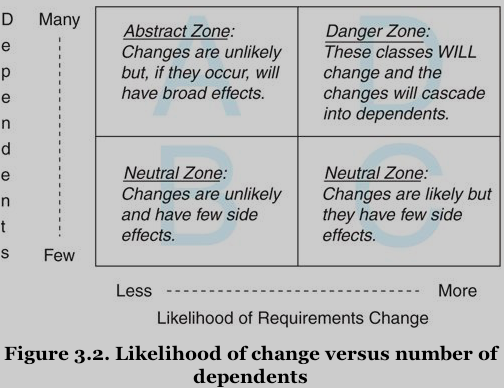
Figure 3.2: Likelihood of change versus number of dependents
Classes in a well-designed app will be cluster in Zones A, B, and C (they are legimate places for code):
- Zone A: classes have little likelihood of change but contain many dependents. This zone usually contains abstract classes or interfaces. Dependencies cluster around abstractions because abstractions are less likely to change. Classes should be already abstract because they need to be more stable and allow for many dependents.
- Zone C: the opposite of Zone A. Code is quite likely to change but has few dependents. These classes tend to be more concrete, which makes them more likely to change, but this doesn't matter because few other classes depend on them.
- Zone B: classes in this zone are of the least concern during design because they are almost neutral in their potential future effects. They rarely change and have few dependents.
Zone D could be aptly named the Dange Zone. A class in Zone D is guaranteed to change and has many dependents.
When a concrete class has many dependents, you believe it resides in Zone A, think again. That class might actually be an occupant of Zone D.
When a simple change has cascading effects that force many other changes, a Zone D class at the root of the problem. A design flaw.
There is actually a way to make things worse: making Zone D classes more likely to change than their dependents. This maximizes the consequences of every change.
Reiteration:
Depend on things that change less often than you do.
Summary
Dependency management is core to creating future-proof apps.
Injecting dependencies creates loosely coupled objects that can be reused in novel ways.
Isolating dependencies allows objects to quickly adapt to unexpected changes.
Depending on abstractions decreases the likelihood of facing these changes.
The key to managing dependencies is to control their direction.
The road to maintenance nirvana is paved with classes that depend on things that change less often than they do.
4. Creating Flexible Interfaces
An OO app is more than classes. It is made up of classes but defined by messages.
- Classes control what's in your source code repo
- Messages reflect the living, animated app.
Design, therefore, must be concerned with the messages that pass between objects. It deals not only with
- what objects know (their responsibilities), and
- who they know (their dependencies), but
- how they talk to one another.
The conversation between objects takes place using their interfaces.
This chapter explores creating flexible interfaces that allow apps to grow and to change.
Understanding Interfaces
Two types of apps: if the messages left visible trails
- in the first one, messages would draw a woven mat, with each object connected to every other.
- in the second one, messagess have a clearly defined pattern. The trails would accumulate to create a set of islands with occasional bridges between them.
Objects in the first app expose too much of themselves and know too much about their neighbors.
The second app is composed of plug-able, component-like objects. Each reveals as little about itself, and knows as little about others, as possible.
The roots of the first app's problem lie not in what each class does but with what it reveals.
- The first app allows all methods of any object, regardless of their granularity, to be invoked by others.
- In the second app, the message patterns are visibly constrained. Each object has a clearly defined set of methods that it expects others to use. These exposed methods comprise the class's public interface.
Two types of interfaces:
- Here the term "interface" is used to refer to the kind of interface that is within a class. Methods defined in the interface are intended to be used by others and these methods make up its public interface. [ME: 使用 test 作为 interface 的 documentation?] -> this chapter
- An alternative kind of interface is one that spans across classes and that is independent of any single class. Used in this sense, the work interface represents a set of messages where the messages themselves define the interface. Many different classes may, as part of their whole, implement the methods that the interface requires. It's almost as if the interface defines a virtual class; that is, any class that implements the required methods can act like the interface kind of thing. -> chapter 5. "Reducing Costs with Duck Typing".
Defining Interfaces
Taking restaurant kitchen as exapmle: the kitchen has a public interface that customers are expected to use, the menu. Using a menu let each customer ask for what they want without knowing how the kitchen makes it.
The distinction between public and private methods exists because it is the most effective way to do business.
Public Interfaces
The methods that make up the public interface of your class comprise the face it presents to the world. They:
- reveal its primary responsibility
- are expected to be invoked by others
- are safe for others to depend on
- are thoroughly documented in the tests [ME: dada…]
Private Interfaces
All other methods in the class are part of its private interface. They:
- handle implementation details
- are not expected to be sent by other objects
- can change for any reason whatsoever
- are unsafe for others to depend on
- may not even be referenced in the tests
Responsibilities, Dependencies, and Interfaces
According to chapter 2 "Designing Classes with a Single Responsibility", there is a correspoindence between the statements you might make about these more specific responsibilities and the classes' public methods. Indeed, public methods should read like a description of responsibilities. The public interface is a contract that articulates the responsibilities of your class.
According to chapter 3 "Managing Dependencies", the idea of depending on less changeable things also applies to the methods within a class, thus you are dividing every class into a public part and a private part:
- the public parts of a class are the stable parts
- the private parts are the changeable parts.
Finding the Public Interface
Finding and defining public interfaces is an art. There are many ways to create "good enough" interfaces and the costs of a "not good enough" interface may not be obvious for a while, making it difficult to learn from mistaks.
The design goal, as always, is to retain maximum future flexibility while writing only enough code to meet today's requirements. Good public interfaces reduce the cost of unanticipated change, bad public interfaces raise it.
This section introduces a new app to illustrate a number of rules-of-thumb about interfaces and a new tool aid to in their discovery.
An Example App: Bicycle Touring Company
FastFeet offers both road and mountain bike trips. Each trip offered followed a specific route and may occur several times during the year. Each has limitations on the number of customers who may go and requires a specific number of guides who double as mechanics.
Each route is rated according to its aerobic difficulty. Mountain bike trips have an additional rating that reflects technical difficulty. Customers have an aerobic fitness level and a mountain bike techinial skill level to determine if a trip is right for them.
Customers may rent bicycles or they may choose to bring their own. FastFeet has a few bycicles available for customer rental and it also shares in a pool of bicycle rentals with local bike shops. Rental bicycles come in various sizes and are suitable for either road or mountain bike trips.
A use case: A customer, in order to choose a trip, would like to see a list of available trips of appropriate difficulty, on a specific date, where rental bicycles are available.
Constructing an Intention
Getting started with the first bit of code in a brand new app is intimidating. You may believe that you should start writing tests, but writing that test requires you have an idea about what you want to test, one that you may not yet have.
The reason that test-first gurus can easily start writing tests is that they have so much design experience. At this stage, they have already constructed a mental map of possibilities for objects and interactions in this app. They are not attached to any specific idea and plan to use tests to discover alternatives, but they know so much about design that they have already formed an intention about the app. It is this intention that allows them to specify the first test.
Whether you are conscious of them or not, you have already formed some intentions of your own. The description of FastFeet's business has likely given you ideas about potential classes in this app: Customer, Trip, Route, Bike, and Mechanic classes, etc. These classes spring to mind because they represent nouns in the app that have both data and behavior. They stand for big, visible real-world things that will end up with a representation in your database. -> Domain objects
Design experts notice domain objects without concentrating on them, they focus not on these objects but on the messages that pass between them. These messages are guides that lead you to discover other objects, ones that are just as necessary but far less obvious.
TODO Using Sequence Diagrams techniques interface
A perfect, low-cost way to experiment with objects and messages.
Use UML to explore and communicate design possibilities.
SD provides a simple way to experiment with different object arrangements and message passing schemes. Think of it as a lightweight way to acquire an intention about an interaction.
SD shows two things: objects and the messages passing between them.
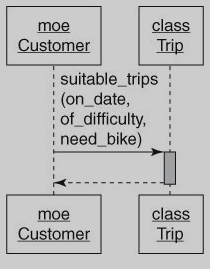
Figure 4.3: A simple sequence diagram

Drawing this SD exposes the message passing between the customer Moe and the Trip class and prompts you to ask the question: "Should Trip be responsible for figuring out if an appropriate bicycle is available for each suitable trip?" or more generally, Should this receiver be responsible for responding to this message?
Therein lies the value of SD: they explicitly specify the messages that pass between objects, and because objects should only communicate using public interfaces, SD are a vehicle for exposing, experimenting with, and untimately defining those interfaces. [ME: messages -> interfaces]
After drawing this SD, this design conversation has been inverted: The previous design emphasis was on classes and who and what they knew. Suddenly, the conversation has changed, it is now revolving around messages. Instead of deciding on a class and then figuring out its responsibilities, you are now deciding on a message and figuring out where to send it.
Important The transition from class-based design to message-based design is turning point in your design career. The message-based perspective yields more flexible apps than does the class-based perspective. -> Changing the fundamental design question from "I know I need this class, what should it do?" to "I need to send this message, who should respond to it?" is the first step in that direction.
Back to the use case: the problem isn't that Customer should not send it, the problem is that Trip should not receive it. You must construct some alternatives.
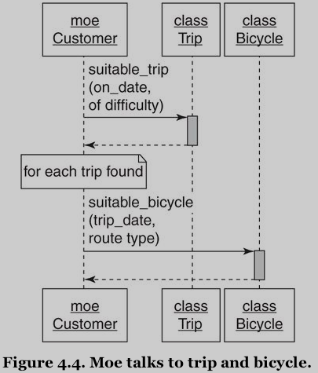
Figure 4.4: Moe talks to trip and bicycle.
The problem in Figure 4.4 is that Moe not only knows what he wants, he also knows how other objects should collaborate to provide it. The Customer class has become the owner of the app rules that assess trip suitability. The Customer class is co-opting responsibilities that belong somewhere else and binding itself to an implementation that might change.
TODO Asking for "What" Instead of Telling "How"
The distinction between a message that asks for what the sender wants and a message that tells the receiver how to behave may seem subtle but the consequences are significant.
To illustrate the importance of what versus how, it's time to switch to a new example involving trips, bicycles, and mechanics.
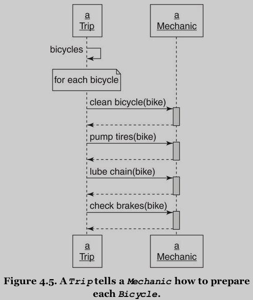
Figure 4.5: A Trip tells a Mechanic how to prepare each Bicycle
The use case: A trip, in order to start, needs to ensure that all its bicycles are mechenically sound.
In this design, Trip knows many details about what Mechanic does. Trip must change if Mechanic adds new procedures to the bike preparation process.
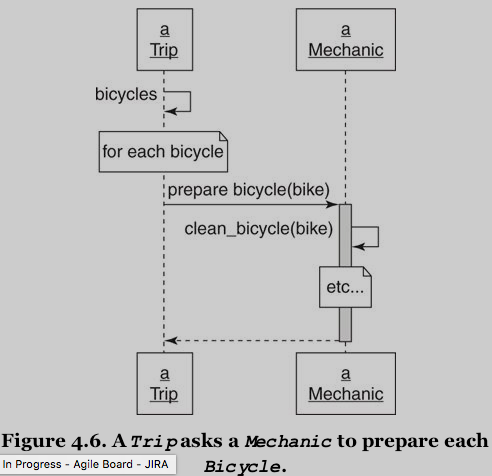
Figure 4.6: A Trip asks a Mechanic to prepare each Bicycle
In this design, Trip has now relinquished a great deal of responsibility to Mechanic.
Because the repsonsibility for knowing how has been ceded to Mechanic, Trip will always get the correct behavior regardless of future improvements to Mechanic.
Side effect: the size of the public interface in Mechanic was drastically reduced. Having a small public interface means that there are few methods for others to depend on. This reduces the likelihood of Mechanic someday changing its public interface, breaking its promise, and forcing changes on many other classes.
This change of message patterns is a great improvement to the maintainability of the code but Trip still knows a lot about Mechanic. The code would be more flexible and more maintainable if Trip could accomplish its goals while knowing even less.
TODO Seeking Context Independence context important
The things that Trip knows about other objects make up its context (Trip has a single responsibility but it expects a context).
Any use of Trip, be it for testing or otherwise, requires that its context be established. You cannot reuse Trip unless you provide a Mechanic-like object that can respond to this message.
The context that an object expects has a direct effect on how difficult it is to reuse. Object that have a simple context (they exprects few things from their surroundings) are easy to use and easy to test.
The best possible situation is for an object to be completely independent of its context.
By using dependency injection, objects can collaborate with others without knowing who they are. The new problem here is for Trip to invoke the correct behavior form Mechanic without knowing what Mechanic does. Trip wants to collaborate with Mechanic while maintaining context independence.
At first glance this seems impossible.
The solution to this problem lies in the distinction between what and how -> We need to concentrate on what Trip wants.
What Trip wants is to be prepared (this knowledge is within the realm of Trip's responsibilities.
However, the fact that bicycles need to be prepared may belong to the province of Mechanic. The need for bicycle preparation is more how a Trip gets prepared than Trip wants.
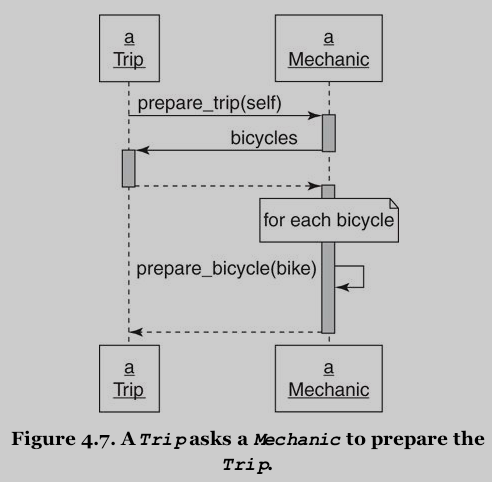
Figure 4.7: A Trip asks a Mechanic to prepare the Trip
In this SD, Trip knows nothing about Mechanic but still manage to collaborate with it to get bicycles ready. Trip tells Mechanic what it wants, passes self along as an argument, and Mechanic immediately calls back to Trip to get the list of the Bicycles that need preparing (Mechanic expects the argument passed along with prepare_trip to respond to bicycles).
Conslusion: All of the knowledge about how mechanics prepare trips is now isolated inside of Mechanic and the context of Trip has been reduced. Both of the objects are now easier to change, to test, and to reuse.)
TODO Trusting Other Objects trust extension
From figure 4.5 through 4.7, the designs represent a movement towards increasingly OO code and as such they mirror the stages of development of the novice designer:
- Figure 4.5: quite procedural.
Tripis the only object that knows exactly how to prepare.Trip's context is large, as isMechanic's public interface. These two classes are not islands with bridges between them, they are instead a single, woven cloth. - Figure 4.6: more OO. These objects now communicate in a few well-defined ways; they are less coupled and more easily reusable. This style of coding places the responsibilities in the correct objects, a great improvement, but continues to require that
Triphave more context than is necessary.Tripstill knows it holds onto an object that can respond toprepare_bicycle, and it must always have this object. - Figure 4.7: far more OO.
Tripdoesn't know or care that it has aMechanicand it doesn't have any idea what theMechanicwill do.Tripmerely holds onto an object to which it will sendprepare_trip; it trusts the receiver of this message to behave appropriately.
Expanding on this idea, Trip could place a number of such objects into an array and send each the prepare_trip message, trusting every preparer to do whatever it does because of the kind of thing that it is. This patter allows you to add newly introduced preparers to Trip without changing any of its code, that is, you can extend Trip without modifying it. [ME: extend an existing class without modifying it!]
If objects were human and could describe their own relationships, Trip will be telling Mechanic:
- in figure 4.5: "I know what I want and I know how you do it."
- in figure 4.6: "I know what I want and I know what you do."
- in figure 4.7: "I know what I want and I trust you to do your part."
Conclusion: This blind trust is a keystone of OOD. It allows objects to collaborate without binding themselves to context and is necessary in any app that expects to grow and change.
TODO Use Messages to Discover Objects SD interface object
Armed with knowledge about the distinction between what and how, and the importance of context and trust, it's time to return to the original design problem from [Figure 4.3](#figure43) and [Figure 4.4](#figure44).
The use case for that problem: A customer, in order to choose a trip, would like to see a list of available trips of appropriate difficulty, on a specific date, where rental bicycles are available.
- [Figure 4.3](#figure43) was a literal translation of this use case, one in which
Triphad too much responsibilities. - [Figure 4.4](#figure44) was an attempt to move the responsibility for finding available bicycles from
TriptoBicycles, but in doing so it placed an obligation onCustomerto know far too much about what makes a trip "suitable".
-> Both designs violate the single responsibility principle. In [Figure 4.3](#figure43) Trip knows too much. In [Figure 4.4](#figure44) Customer knows too much, tells other objects how to behave, and requires too much context.
It is completely reasonable that Customer would send the suitable_trips message. The problem is not with the sender, it is with the receiver. You have not yet identified an object whose responsibility it is to implement this method.
This app needs an object to embody the rules at the intersection of Customer, Trip and Bicycle. The suitable_trips method will be part of its public interface.
You can arrive at the realization of this idea via many routes. The advantage of discovering this missing object via SD is that the cost of being wrong is very low and the impediments to changing your mind are extremely few. The SD do not reflect your ultimate design, but instead they create an intention that is the starting point for your design.
Perhaps the app should contain a TripFinder class.
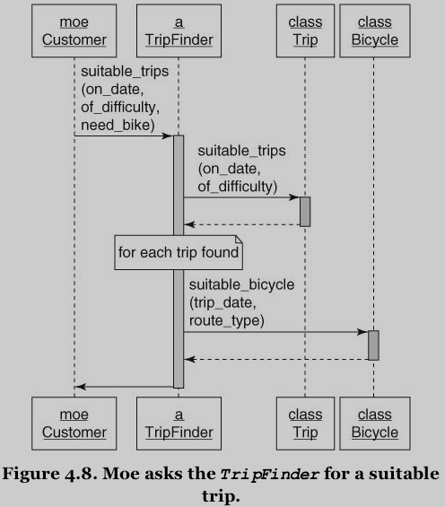
Figure 4.8: Moe asks TripFinder for a suitable trip.
TripFinder contains all knowledge of what makes a trip suitable. It provides a consistent public interface while hiding messy and changeable internal implementation details.
In the unknown future perhaps other touring companies will use TripFinder to locate suitable trips via a Web service. Now that this behavior has been extracted from Customer, it can be used, in isolation, by any other object.
TODO Creating a Message-Based Application SD testing intention
This section used SD to
- explore design
- define public interfaces
- discover objects
SD are powerfully useful in a transient way, they make otherwise impossibly convoluted conversations comprehensible. However, they are a tool, nothing more.
They help keep the focus on messages and allow you to form a rational intention about the first thing to assert in a test [ME: great for testing!]. Switching your attention from objects to messages allows you to concentrate on designing an app built upon public interfaces.
Writing Code That Puts Its Best (Inter)Face Forward
The clarity of your interfaces reveals your design skills and reflects your self-discipline.
Design skills are always improving but never perfected; even today's beautiful design may look ugly in light of tomorrow's requirements -> it's difficult to create perfect interfaces -> It's more important that a well-defined interface exist than that it be perfect. [ME: Being done is more important than beding perfect.]
Think about interfaces, Create them intentionally. It is your interfaces, more than all of your tests and any of your code, that define your app and determine its future.
The following section contains rules-of-thumb for creating interfaces.
TODO Create Explicit Interfaces best practice interface principles testing documentation
Your goal is to write the code
- that works today
- that can easily be reused
- that can be adapted for unexpected use in the future.
Other people will invoke your methods; it is your obligation to communicate which ones are dependable.
Every time you create a class, declare its interface.
Methods in the public interface should
- Be explicitly identified as such
- Be more about what than how
- Have names that (insofar as you can anticipate) will not change
- Take a hash as an options parameter
Be just as intentional about the private interface, make it obvious.
Tests serve as documentation. Either do not test private methods of, if you must, segregate those tests from the tests of public methods. Do not allow your tests to fool others into unintentionally depending on the changeable, private interface.
Use of keywords (public, protected, and private) serves two distinct purposes:
- they indicate which methods are stable and which are unstable
- they control how visible a method is to other parts of your app.
Explanation:
private: denotes the least stable kind of method and provides the most restricted visibility. They must be called with an implicit receiver (withoutself) [ME: pay attention to the difference betweenprivateandprotected], or, inversely, may never be called with an explicit receiver.protected: indicates an unstable method, but one with slightly different visibility restrictions. They allow explicit receivers as long as the receiver isselfor an instance of the same class or subclass ofself(only from within a class whereselfis the same kind of thing).public: indicates that a method is stable; they are visible everywhere.
To further complicate matters, Ruby not only provides these keywords but also supplies various mechanisms for circumventing the visibility restrictions. Users of a class can redefine any method to public regardless of its intial declaration. The private and protected keywords are more like flexible barriers than concrete restrictions. -> Any notion that you can prevent method access by using these keywords is an illusion.
Using them sends two messages:
- You believe that you have better information today than programmers will have in the future.
- You believe that those future programmers need to be prevented from accidentally using a method that you currently consider unstable.
These beliefs may be correct but the future is a long way off and one can never be certain.
Common practice: Many perfectly competent Ruby programmers omit these keywords and instead use comments or a special method naming convention (e.g. adds a leading _ to private methods) to indicate the public and private parts of interfaces. These strategies are perfectly acceptable and sometimes even preferable. They supply information about method stability without imposing visibility restrictions. Use of them trusts future programmers to make good choices about which methods to depend upon based on the increased information they have at that time. -> As long as you find some way to convey this information you have fulfilled your obligation to the future.
Honor the Public Interfaces of Others
Do your best to interact with other classes using only their public interfaces.
If your design forces the use of a private method in another class
- first rethink your design
- try very hard to find an alternative
A dependency on a private method of an external framework is a form of techincal debt. Avoid these dependencies.
Exercise Caution When Depending on Private Interfaces
You may find that you must depend on a private interface. This is a dangerous dependency that should be isolated using the techniques described in Chapter 3 (Preventing the method from being referenced in many places in your app, keep this risk to a minimum by isolating the dependency).
Minimize Context
Construct public interfaces with an eye toward minimizing the context they require from others.
Keep the what versus how distinction in mind. Create public methods that allow senders to get what they want without knowing how your class implements its behavior.
Conversely, do not succumb to a class that has an ill-defined or absent public interface. Even if the original author did not defined a public interface it is not too late to create one for yourself.
Depending on how often you plan to use this new public interface, it can be:
- a new method that you define and place in the
Mechanicclass - a new wrapper class that you create and use instead of
Mechanic - or a single wrapping method that you place in your own class
Do what best suits your meeds, but create some kind of defined public interface and use it. This reduces your class's context, making it easier to reuse and simpler to test.
The Law of Demeter
Having read about responsibilities, dependencies, and interfaces you are now equipped to explore the Law of Demeter.
The LoD is a set of coding rules that results in loosely coupled objects. Loose coupling is nearly always a virtue but is just one component of design and must be balanced agains competing needs. Some Demeter violations are harmless, but others expose a failure to correctly identify and define public interfaces.
Defining Demeter
Demeter restricts the set of objects to which a method may send messages; it prohibits routing a message to a third object via a second object of a different type. - Only talk to your immediate neighbors" or "Use only one dot.
For example:
customer.bicycle.wheel.tire
customer.bicycle.wheel.rotate
hash.keys.sort.join(", ")
Each line is a message chain containing a number of dots. These chains are colloquially referred to as train wrecks. These trains are an indication that you might be violating Demeter.
Consequences of Violations
LoD is only a guidance, not a real law.
Chapter 2 stated that code should be TRUE. Some of the message chains above fail when judged agains TRUE:
- The first two message chains are nearly identical, differing only in that one retrieves a distant attribute (
tire) and the other invokes distant behavior (rotate). Even experienced designers argue about how firmly Demeter applies to messages chains that return attributes (sometimes it may be the cheapest to reach those attributes_). -> The Balance the likelihood and cost of change against the cost of removing the violation. The risk incurred by Demeter violations is low for stable attributes [ME: 一般都很简单，不大可能改变], this may be the most cost-efficient strategy. <-> This tradeoff is permitted as long as you are not changing the value of the attribute you retrieve, because [ME: if you do so] it is not just retrieving an attribute, it is implementing behavior. [ME: 应该通过 send message 让该负责的 object 来做这个工作]. It's a chain that reaches across many objects to get to distant behavior. The inherent cost of this coding style is high, this violation should be removed. - The third message chain is perfectly reasonable and, depite the dots, may not be a Demeter violation at all. Instead of evaluating this phrase by counting the dots, evaluate it by checking the types of the intermediate objects (they have the same type and there is no Demeter violation) [ME: each of the intermediate message invocation returns the same object itself.]:
hash.keysreturns anEnumerablehash.keys.sortalso returns anEnumerablehash.keys.sort.joinreturns aString
LoD, like every design principle, exists in service of your overall goals. Certain violation of LoD reduce your app's flexibility and maintainability, while others make perfect sense.
Avoiding Violations exceptions
One common way to remove "train wrecks" from code is to use delegation to avoid the "dots". In OO terms, to delegate a message is to pass it on to another object, ofen via a wrapper method, which encapsulates, or hides, knowledge that would otherwise be embodies in the message chain.
There are a number of ways to accomplish delegation
- Ruby contains
delegate.rbandforwardable.rb - RoR includes the
delegatemethod
Delegation only removes the visible evidence of violations. But beware, it can result in code that obeys the letter of LoD whild ignoring its spirit. Using delegation to hide tight coupling is not the same as decoupling the code.
TODO Listening to Demeter caveat dependency structure
Demeter is trying to tell you something and it isn't "use more delegation."
Message chains occur when your design thoughts are unduely influenced by objects you already know. You're trying to string together long message chains to get at distant behavior. [ME: Ignorance is bliss.]
The code knows not only what it wants, but how to navigate through a number of intermediate objects to reach the desired behavior. -> It's tightly coupled to your overall object structure.
This coupling causes all kinds of problems:
- It raises the risk that
Tripwill be forced to change because of an unrelated change somewhere in the message chain. - The more serious problem: when the
departmethod knows this chain of objects, it binds itself to a very specific implementation and it cannot be reused in any other context.
Solution: from a message-based point of view, the answer is obvious
# customer.bicycle.wheel.rotate # => customer.ride
The ride method of customer hides implementation details from Trip and reduces both its context and its dependencies.
Conclusion: the train wrecks of Demeter violations are clues that there are objects whose public interface are lacking. Listening to Demeter means paying attention to your point of view. If you shift to a message-based perpective, the messages you find will become public interfaces in the objects they lead you to discover. However, if you are bound by the shackles of existing domain objects, you'll end up assembling their existing public interfaces into long message chains and thus will miss the opportunity to find and construct flexible public interfaces.
Summary
OO apps are defined by the messages that pass between objects.
This message passing takes place along public interfaces.
Well-defined public interfaces consists of stable methods that expose the responsibilities of their underlying classes and provide maximal benefit at minial cost.
Focusing on messages reveals objects that might otherwise be overlooked.
When message are trusting and ask for what the sender wants instead of telling the receiver how to behave, objects natually evolve public interfaces that are flexible and reusable in novel and unexpected ways.
5. Recuding Costs with Duck Typing
In previous chapters
- you know messages are at the design center of your app
- you are committed to the construction of rigorously defined public interfaces
Now combine these two ideas into a powerful design technique that further reduces your costs -> Duck Typing
Duck types are public interfaces that are not tied to any specific class. These across-class interfaces add enormous flexibility to your app by replacing costly dependencies on class with more forgiving dependencies on messages.
Duck typed objects are defined by their behavior than by their class.
This chapters shows you how to recognize and exploit duck types to make your app more flexible and easier to change.
Understanding Duck Typing
The term "type" describes the category of the contents of a variable.
Procedural languages use types to describe kinds of data.
It is knowledge of the type of a variable that allows an app to have an expectation about how those contents will behave.
In Ruby these expectations about the behavior of an object come in the form of beliefs about its public interface. -> If one object knows another's type, it knows to which messages that object can respond.
You are not limited to expecting an object to repsond to just one interface. It can implement many different interfaces.
User of an object need not, and should not, be concerned about its class. Class is just one way for an object to acquire a public interface.
Apps may define many public interfaces that are not related to one specific class. It's not what an object is that matters, it's what it does.
If every object trusts all others to be what it expects at any given moment, and any object can be any kind of thing, the design possibilities are infinite.
Using this flexibility wisely requires that you recognize these across-class types (duck types) and construct their public interfaces as intentionally and as diligently as you did those of within-class types back in Chapter 4 "Creating Flexible Interfaces". Across-class types (duck types) have public interface that represent a contract that must be explicit and well-documented. [ME: The sole way is to use tests as documentation?]
The best way to explain duck types is to explore the consequences of not using them. This section contaisn an example.
Overlooking the Duck
class Trip attr_reader :bicycles, :customers, :vehicle # this 'mechanic' argument could be of any class def prepare(mechanic) mechanic.prepare_bicycles(bicycles) end # ... end # if you happen to pass an instance of this class, it works class Mechanic def prepare_bicycles(bicycles) bicycles.each {|bicycle| prepare_bicycle(bicycle) } end def prepare_bicycle(bicycle) # ... end end
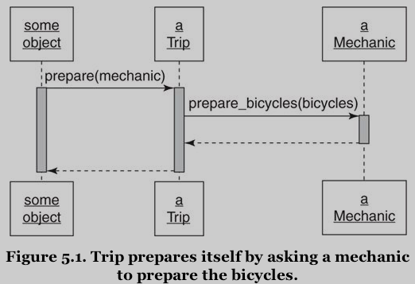
Figure 5.1: Trip prepares itself by asking a mechanic to prepare the bicycles
The prepare method has no explicit dependency on the Mechanic class but it does depend on receiving an object that can respond to prepare_bicycles. This dependency is fundamental, but it exists. Trip's prepare method firmly believes that its argument contains a preparer of bicycles.
Compounding the Problem
This example is like the SD in [Figure 4.6 of Chapter 4](ch05-reducing-costs-with-duck-typing.ipynb).
Imagine that requirements change. In addition to a mechanic, trip preparation now involves a trip coordinator and a driver. You have to change Trip's prepare method to invoke the correct behavior from each of its arguments. It is now a cause for alarm.
class Trip attr_reader :bicycles, :customers, :vehicle def prepare(preparers) preparers.each {|preparer| case preparer when Mechanic preparer.prepare_bicycles(bicycles) when TripCoordinator preparer.buy_food(customers) when Driver preparer.gas_up(vehicle) preparer.fill_water_tank(vehicle) end } end # ... end # when you introduce TripCoordinator and Driver class TripCoordinator def buy_food(customers) # ... end end class Driver def gas_up(vehicle) # ... end def fill_up_tank(vehicle) # ... end end # if you happen to pass an instance of this class, it works class Mechanic def prepare_bicycles(bicycles) bicycles.each {|bicycle| prepare_bicycle(bicycle) } end def prepare_bicycle(bicycle) # ... end end
Code like this gets written when programmers are blinded by existing classes and neglect to notice that they have overlooked important messages. This dependent-laden code is a natural outgrowth of a class-based perpsective.
It's easy to fall into the trap of thinking of the original prepare method as expecting an actual instance of Mechanic.
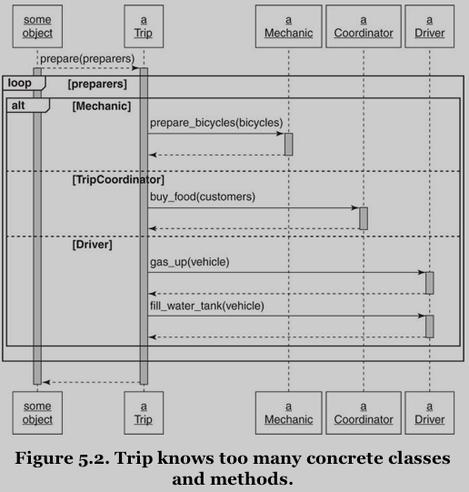
Figure 5.2: Trip knows too many concrete classes and methods.
If your design imagination is constrained by class and you find yourself unexpectedly dealing with objects that don't understand the message you are sending, your tendency is to go hunt for messages that these new objects do understand.
The most obvious way to invoke this behavior is to send these very messages, but now you're stuck. You must determine each argument's class to know which message to send. This causes an explosion of dependencies. All of this knowledge increases risk, many distant chagnes will now have side effects on this code.
To make matters worse, this style of code propagates itself. The logical endpoint of this programming style is a stiff and inflexible app, where it eventually becomes easier to rewrite everything than to change anything.
Finding the Duck
The key to removing the dependencies is to recoginze that because Trip's prepare method serves a single purpose, its argument arrive wishing to collaborate to accomplish a single goal. Every argument is here for the same reason and that reason is unrelated to the argument's underlying class.
Avoid getting sidetracked by your knowledge of what each argument's class already does. Think instead about what prepare needs. -> The problem is straightforward. Its arguments arrive already to collaborate in trip preparation. The design would be simpler if prepare just trusted them to do so.
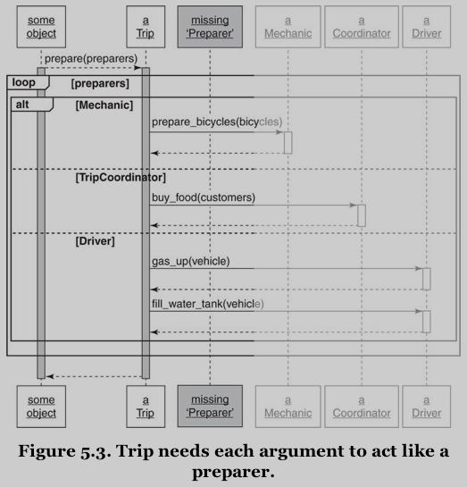
Figure 5.3: Trip needs each argument to act like a preparer
You've pried yourself loose from existing classes and invented a duck type!
The next step is to ask what message the prepare method can fruitfully send each Preparer -> prepare_trip
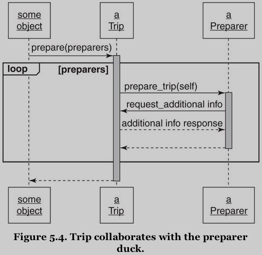
Figure 5.4: Trip collaborates with the preparer duck.
Preparer is an abstraction, an agreement about the public interface on an idea.
Code for the new design:
class Trip attr_reader :bicycles, :customers, :vehicle def prepare(preparers) preparers.each {|preparer| preparer.prepare_trip(self) # <--- } end # ... end # when you introduce TripCoordinator and Driver class TripCoordinator def prepare_trip(trip) buy_food(trip.customers) end def buy_food(customers) # ... end end class Driver def prepare_trip(trip) vehicle = trip.vehicle gas_up(vehicle) fill_water_tank(vehicle) end def gas_up(vehicle) # ... end def fill_up_tank(vehicle) # ... end end # if you happen to pass an instance of this class, it works class Mechanic def prepare_trip(trip) trip.bicycles.each {|bicycle| prepare_bicycle(bicycle) } end def prepare_bicycle(bicycle) # ... end end
The prepare method can now accept new Preparers without being forced to change, and it's easy to create additional Preparers if the need arises.
Consequences of Duck Typing
Before: the prepare method depends on a concrete class. -> Concrete, easy to understand but dangerous to extend.
After: it depends on a duck type. -> Greater demands on your understanding but in return offers ease of extension. -> You simply turn another object into a Preparer and pass it into Tip's prepare method.
This tension between the costs of concretion and the costs of abstraction is fundamental to OOD. Use of a duck type moves your code along the scale from more concrete to more abstract.
The ability to tolerate ambiguity about the class of an object is the hallmark of a confident designer. -> Define objects by their behavior rather than by their class.
Polymorphism
Polymorphism in OOP refers to the ability of many different objects to respond to the same message.
Senders of the message need not care about the class of the receiver; receivers supply their own specific version of the behavior. -> A single message thus has many (poly) forms(morphs).
There are a number of ways to achieve polymorphism (refer to the nest chapters):
- duck typing
- inheritence
- behavior sharing (via Ruby modules)
Polymophic methods agree to be interchangeable from the sender's point of view: Any object implementing a polymophic method can be substituted for any other. The sender of the message need not know or care about this substitution.
When you use polymophism it's up to you to make sure all of your objects are well-behaved. Refer to Chapter 7 "Sharing Role Behavior with Modules".
Writing Code That Relies on Ducks
Using duck typing relies on your ability to recognize the places where your app would benefit from across-class interfaces.
It is relatively easy to implement a duck type, Your design challenge is to notice that you need one and to abstract its interface.
TODO Recoginzing Hidden Ducks duck typing techniques
Several common coding patterns indicate the presence of a hidden duck. You can replace the following with ducks:
- Case statement that switch on class
kind_of?andis_a?responds_to?
Case Statements That Switch on Class
This is the most common, obvious patter that indicates an undiscovered duck (refer to compounding the problem.
When you see this pattern you know that all of the preparers must share something in common, they arrive here because of that common thing. Examine the code and ask yourself, What is it that prepare wants from each of its arguments? [ME: prepare(preparers) ]
The answer suggests the message you should send, this message begins to define the underlying duck type (e.g. prepare_trip).
kindof? and isa?
The kind_of? and is_a? messages (they are synonymous) also check class.)
respondsto?
Programmers who haven't made the leap to duck types are tempted to replace kind_of? with responds_to?. For example:
if preparer.responds_to?(:prepare_bicycles) # ...
The class names are gone but the code is still very bound to class. It controls other than trusts other object.
Placing Trust in Your Ducks
In each case the code is effectively saying "I know who you are and because of that I know what you do". This knowledge exposes a lack of trust in collaborating objects and acts as a millstone around your object's neck. It introduces dependencies that make code difficult to change.
This style of code is an indication that you are missing an object, one whose public interface you have not yet discovered. It's the interface that matters, not the class of the object that implements it.
Flexible apps are built on objects that operate on trust, it is your job to make your objects trustworthy. Concentrate on the offending code's expectations and use those expectations to find the duck type. Once you have a duck type in mind, define its interface, implement that interface where necessary, and then trust those implementers to behave correctly.
Sharing Code Between Ducks
In this chapter, Preparer ducks provide class-specific [ME: implemented by classes?] versions of the behavior required by their interface. These classes share only the interface, not the implementation.
Classes that implement duck types often need to share some behavior in common. Writing ducks that share code is one of the topics covered in Chapter 7.
Choosing Your Ducks Wisely
Taking an example from RoR framework (activerecord/relations/findermethods.rb):
def first(*args) if args.any? if args.first.kind_of?(Integer) || (loaded? && !args.first.kind_of?(Hash)) to_a.first(*args) # [* 在此处用于把数组展开, http://blog.csdn.net/yc1022/article/details/51133191] else apply_finder_options(args.first).first end else find_first end end
This example uses class to decide to deal with its input. Why is this code acceptable?
The major difference is the stability of the classes that are being checked. This example is depending on core Ruby classes that are far more stable.
There probably is a duck type (which spans Integer and Hash and therefore its implementation would require making changes to Ruby base classes - monkey patching), but it will likely not reduce your overall app costs.
The decision to create a new duck type relies on judgement. The purpose of design is to lower costs, bring this measuring stick to every situation. [ME: 不要为了设计而设计！]
Implementing duck types across your own classes is one thing, changing Ruby base classes to introduce new duck types is quite another. However, neither of these considerations should prevent you from monkey patching Ruby at need. You must be able to eloquently defend this design decision. The standard of proof is high.
Conquering a Fear of Duck Typing
If you have a statically typed programming background and find the idea of duck typing alarming, this section is for you.
If you are happily using Ruby, you can skim this section. You might, however, find what follows useful if you need to fend off arguments made by your more statically typed friends.
Subverting Duck Types with Static Typing
Relying on dynamic typing makes some people uncomfortable:
- for some, this discomfort is caused by a lack of experience
- for others, by a belief that static typing is more relaible
Programmers who fear dynamic typing tend to check the classes of objects in their code -> more dependencies -> more failure when new classes appear -> an endless loop!
Duck typing removes the dependencies on class and thus avoids the subsequent type failures. It reveals stable abstractions on which your code can safely depend.
Static versus Dynamic Typing
Static and dynamic typing both make promises and each has costs and benefits.
Qualities of static typing:
- the compiler unearths type errors at compile time.
- visible type information serves as documentation.
- compiled code is optimized to run quickly.
These qualities represent strengths only if you accept this set of assumptions:
- runtime type errors will occur unless the compiler performs type check.
- programmers will not otherwise understand the code; they cannot infer an object's type from its context.
- the app will run too slowly without these optimizations.
Qualities of dynamic typing:
- code is interpreted and can be dynamically loaded; there is no compile/make cycle.
- source code does not include explicit type information.
- metaprogramming is easier.
These qualities are strenghts if you accept this set of assumptions:
- overall app development is faster without a compile/make cycle.
- programmers find the code easier to understand when it does not contain type declarations; they can infer an object's type from its context.
- metaprogramming is a desirable language feature.
Embracing Dynamic Typing
Some of these qualities and assumptions are based on empirical facts are easy to evaluate.
For certain apps, well-optimized statically typed code will outperform a dynamically typed implementation. When a dynamically typed app cannot be tuned to run quickly enough, static typing is the alternative. If you must, you must.
Arguments about the value of type declarations as documentation are more subjective. You'll find this less verbose syntax easier to read, write, and understand.
Metaprogramming (i.e., writing code that writes code) is a topic that programmers tend to feel strongly about and the side of the argument they support is related to their past experience. Metaprogramming, used wisely, has great value; ease of metaprogramming is a strong argument in favor of dynamic typing.
The tweo remaining qualities are static typing's compile time type checking and dynamic typing's lack of a compile/make cycle. Static typing advocates assert that its benefit trumps the greater programming efficiency that is gained by removing the compiler. This argument rests on static typing's premise that:
- the compiler truly save you from accidental type errors.
- without the compiler's help, these type errors will occur.
To these arguments dynamic typing says:
- It can't.
- They won't.
The compiler cannot save you from accidental type errors. Any language that allows casting a var to a new type is vulnerable. The code is only as good as your tests; runtime failures can still occur.
Furthermore, it doesn't matter whether the compiler can save you or not; you don't need saving. In the real world, compiler preventable runtime type errors almost never occur. It just doesn't happen.
This is not to suggest that you'll never experience a runtime type error. However, discovering at runtime that `nil` doesn't understand the message it received is not something the compiler could have prevented. These errors are equally likely in both type systems.
Dynamic typing allows you to trade compile time type checking, a serious restriction that has high cost and provides little value, for the huge gains in efficiency provided by removing the compile/make cycle. This trade is a bargain. Take it.
Duck typing is build on dynamic typing; to use duck typing you must embrace this dynamism.
Summary
Messages are at the center of OO apps and they pass among objects along public interfaces.
Duck typing detaches these public interfaces from specific classes, creating virtual types that are defined by what they do instead of by who they are.
Duck typing reveals underlying abstractions that might otherwise be invisible. Depending on these abstractions reduces risk and increases flexibility, making your app cheaper to maintain and easier to change.
6. Acquiring Behavior Through Inheritance
Well-designed apps are constructed of reusable code.
Small, trustworthy self-contained objects with minimal context, clear interfaces, and injected dependencies [ME: 5 measearing sticks for well-designed classes] are inherently reusable.
Another code sharing techinique: inheritance.
This chapter: how to write code that properly uses inheritance. -> Build a technically sound inheritance hierarchy; prepare you to decide if you should.
Once you understand how to use classical inheritance, the concepts are easily transferred to other inheritance mechanisms (e.g. modules, refer to Chapter 7 "Sharing Role Behavior with Modules").
Understanding Classical Inheritance delegation
There is a simplifying abstraction. Inheritance is, at its core, a mechanism for automatic message delegation [ME: the essential concept under the hood! And it is just one of several message delegation mechanisms]. It defines a forwarding path for not-understood messages - if one object cannot respond to a received message, it delegates that message to another [ME: its superclass]. It creates relationships by creating subclasses. Messages are forwarded from subclass to superclass. The shared code is defined in the class hierarchy.
Recognizing Where to Use Inheritance
The first challenge is recognizing where inheritance would be useful: how to know when you have the problem that inheritance solves.
Taking FastFeet as example: FastFeet leads road bike trips. Mechanics are responsible for keeping bicycles running, and they take an assortment of spare parts on every trip. The spares they need depend on which bicycles they take.
Starting with a Concrete Class
FastFeet's app already has a Bicycle class:
class Bicycle attr_reader :size, :tape_color def initialize(args) @size = args[:size] @tape_color = args[:tape_color] end # every bike has the same defaults for tire and chain size def spares { chain: "10-speed", tire_size: "23", tape_color: tape_color } end # Many other methods, ... end bike = Bicycle.new(size: "M", tape_color: "red") p bike.size p bike.spares >>>> "M" {:chain=>"10-speed", :tire_size=>"23", :tape_color=>"red"}
Bicycle instances can respond to the spares, size and tape_color messages and a Mechanic can figure out what spare parts to take by asking each Bicycle for its spares.
Note: The spares method commits the sin of embedding default strings directly inside itself. [ME: How to improve???]
Change: imagine that FastFeed begins to lead mountain bike trips.
Your design task is to add support for mountain bikes to FastFeet's app.
Mountain bikes and road bikes have an overall bike size and a chain and tire size. The only differences are that road bikes need handlbar tape and mountain bikes have suspension.
Embedding Multiple Types
When a preexisting concrete class contains most of the behavior you need, it's tempting to solve this problem by adding code to that class.
class Bicycle attr_reader :style, :size, :tape_color, :front_shock, :rear_shock def initialize(args) @style = args[:style] @size = args[:size] @tape_color = args[:tape_color] @front_shock = args[:front_shock] @rear_shock = args[:rear_shock] end # checking "style" starts down a slippery slope def spares if style == :road { chain: "10-speed", tire_size: "23", tape_color: tape_color } else { chain: "10-speed", tire_size: "2.1", # inches rear_shock: rear_shock } end end # Many other methods, ... end bike = Bicycle.new(style: :mountain, size: "S", front_shock: "Manitou", rear_shock: "fox") p bike.size p bike.spares >>>> "S" {:chain=>"10-speed", :tire_size=>"2.1", :rear_shock=>"fox"}
Changes:
- three new variables: especially
style, which determines which parts appear on the spares list. - in
sparesmethod:ifblock - structing the code this way has many negative consequences. Also, the method started out containing embedded default strings, some of these strings are now duplicated on each side of theifstatement.
Bicycle now has more than one repsonsibility, contains things that might change for different reasons, and cannot be reused as is.
-> an antipattern!
Antipattern: a common pattern that appears to be benefiial but is actually detrimental, and for which there is a well-known alternative.
This pattern of coding illustrates an antipattern that, once noticed, suggests a better design:
- This code contains an
ifstatement that checks an attribute that holds the category of self to determine what message to send to self (refer to the chapter "duck typing", where anifstatement checks the class of an object to determine what message to send to that object). - -> They are the same: an object decides what message to send based on a category of the receiver.
- -> If the sender could talk it would be saying "I know who you are and because of that I know what you do." – This knowledge is a dependency that raises the cost of change.
- While sometimes innocent and occasionally defensible, its presence might be exposing a costly flaw in your design.
- -> the pattern indicates a missing subtype (this pattern is used to discover a missing duck type in Chapter 5 "duck typing")
Finding the Embedded Types
Varialbes named with type or category (or alike, e.g. style in the above example) are your cue to notice the underlying pattern: these words are what you use to describe a class!
Bicycle class contains several different, but related, types (styles).
This is the exact problem that inheritance solves: that of highly related types that share common behavior but differ along some dimension.
Choosing Inheritance
No matter how complicated the code, the receiving object ultimately handles any messages in one of two ways: it either
- responds directly or it
- passes the message on to some other object for a response.
Inheritance types:
- multiple inheritance
- single inheritance
Inheritance provides a way to define two objects as having a relationship such that when the first receives a message that it does not understand, it automatically forwards, or delegates, the message to the second – up along the class hierarchy.
Inheritance vs. duck typing:
- Message forwarding via classical inheritance takes place between classes. <-> Duck types cut across classes.
- Superclasses/subclasses use classical inheritance to share common behavior. <-> Duck types share code via Ruby modules (refer to the next chapters).
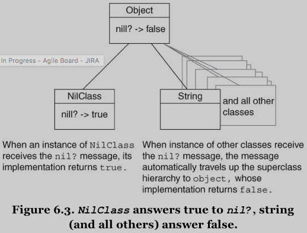
Figure 6.3: Example - NilClass answers true to nil?, string (and all others) answer false (implemented in Object class)
The fact that unknow messages get delegated up the superclass hierarchy implies that subclasses are everything their superclasses are, plus more. Subclasses are thus specializations of their superclasses.
Back to our example: Mountain bikes are a specialization of Bicycle; this design problem can be solved using inheritance.
Drawing Inheritance Relationships
Use UML class diagrams (CD) to illustrate class relationships.
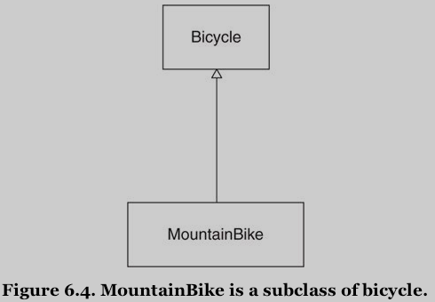
Figure 6.4: MountainBike is a subclass of bicycle
Notice:
- The hollow triangle means that the relationship is inheritance.
- The pointed end of the triangle is attached to the box containing the superclass.
Misapplying Inheritance bad solution
The following code illustrate common difficulties encountered by novices.
class MountainBike < Bicycle attr_reader :front_shock, :rear_shock def initialize(args) @front_shock = args[:front_shock] @rear_shock = args[:rear_shock] super(args) end def spares super.merge(rear_shock: rear_shock) # (1) end
Explanation:
- overridden methodes:
initialize&spares super: sendingsuperin any method passes that message up the superclass chain:- the send of
superininitializemethod invokes theinitializemethod of its superclass,Bicycle - (1): invokes the
sparesmethod ofBicycle
- the send of
Running the code exposes several flaws, because instances of MountainBike contain a confusing mishmash of road and mountain bike behavior. The Bicycle class is a concrete class that was not written to be subclassed – it combines behavior that is general to all bicycles with behavior that is specific to road bikes.
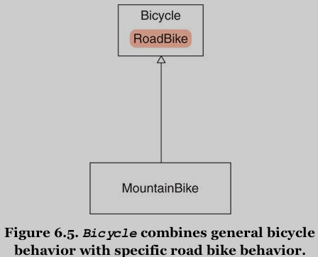
Figure 6.5: Bicycle combines general bicycle behavior with specific road bike behavior
The way this code is arranged causes MountainBike to inherit behavior that it does not want or need.
Because design is evolutionary, this situation arises all the times. The problem here started with the names of these classes.
Finding the Abstraction
Subclasses are specializations of their superclasses. Any object that exepcts a superclass should be able to interact with its subclass in blissful ignorance of its actual class.
The rules of inheritance:
- First, the objects that you are modeling must truly have a generalization-specialization relationship.
- Second, you must use the correct coding techniques.
For the previous example code:
- The relationship is correct.
- The current
Bicycleclass intermingles general bicycle code with specific road bike code. -> Move the road bike code out ofBicycleand into a separateRoadBikesubclass.
TODO Creating an Abstract Superclass best practice techniques
Your goal: to create the inheritance structure.
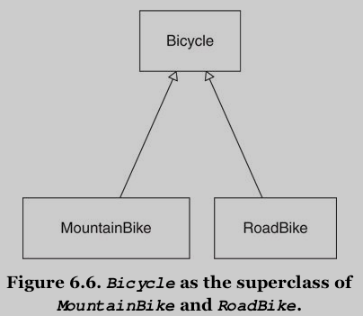
Figure 6.6: Bicycle as the superclass of MountainBick and RoadBike
Bicycle now represents an abstract class (being disassociated from any specific instance, and the definition still holds true. refer to Chapter 3 "Managing Dependencies"), and no longer represents a whole bike.
Abstract classes exist to be subclassed. This is their sole purpose. They provide a common repository for behavior that is shared across a set of subclasses – subclasses that in turn supply specializations.
It almost never makes sense to create an abstract superclass with only one subclasses. However, regardless of how strongly you anticipate having other kinds of bikes, that day may never come. Until you have a specific requirement that forces you to deal with other bikes, the current Bicycle class is good enough.
Creating a inheritance hierarchy has costs; the best way to minimize these costs is to maximize your chance of getting the abstraction right before allowing subclasses to depend on it.
A decision to proceed with the hierarchy accepts the risk that you may not yet have enough information to identify the correct abstraction. Your choice about whether to wait or proceed hinges on how soon you expect a third bike to appear versus how much you expect the dupliction cost.
You should wait (till the third subclass is imminent) if you can, but don't fear to move forward based on two concrete cases if this seems best.
The simplest way to create a Bicycle hierarchy is to rename Bicycle to RoadBike and to create a new, empty Bicycle class:
class Bicycle # This class is now empty. # All code has been moved to RoadBike. end class RoadBike < Bicycle # Now a subclass of Bicycle # Contains all code from the old Bicycle end class MountainBike < Bicycle # Still a subclass of Bicycle (which is now empty) # Code has not changed. end
This code rearrangement merely moved the problem:
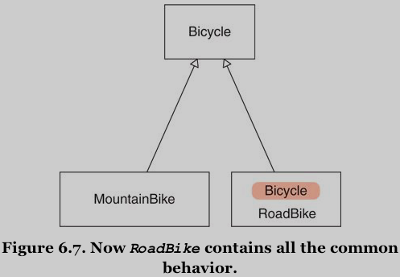
Figure 6.7: Now RoadBike contains all the common behavior.
This rearrangement improves your lot because it's easier to promote code up to a superclass than to demote it down to a subclass.
The next few iterations concentrate on achieving this new class structure by moving common behavior into Bicycle and using that behavior effectively in the subclasses.
Now RoadBike still contains everything it needs and thus it still works, but MountainBike is now seriously broken (neither MountainBike nor any of its superclasses implement size).")
TODO Promoting Abstract Behavior rules inheritance
In Bicycle's public interface: size and spares.
class Bicycle attr_reader :size # <-- promoted from RoadBike def initialize(args={}) @size = args[:size] # <-- promoted from RoadBike end end class RoadBike < Bicycle attr_reader :tape_color def initialize(args={}) @tape_color = args[:tape_color] super(args) # <-- RoadBike now MUST send "super" end # ... end
Many of the difficulties of inheritance are caused by a failure to rigorously separate the concrete from the acstract.
This push-everything-down-and-pull-some-things-up strategy is an important part of this refactoring. You can then carefully identify and promote the abstract parts without fear of leaving concrete artifacts.
When deciding between design strategies in general, ask the question: What will happen if I'm wrong?. In this case, the worst that can happen is that you will fail to find and promote the entire abstraction. The oversight becomes visible as soon as another subclass needs the same behavior. Promotion failures thus have low consequences.
If you attempt this refactoring from the opposite direction -> demotion -> the leftover concrete behavior does not apply to every possible new subclasses -> subclasses thus begin to violate the basic rule of inheritance -> the hierarchy becomes untrustworthy. -> Untrustworthy hierarchies force objects that interact with them to know their quirks. -> Knowledge of the structure of the hierarchy leaks into the rest of the app, creating dependencies that raise the cost of change. -> The consequences of a demotion failure
The general rule for refactoring into a new inheritance hierarchy is to arrange code so that you can promote abstractions rather than demote concretions.
Ask you the question: "What will happen when I'm wrong". Every decision you make includes two costs:
- one to implement it.
- another to change it when you discover that you were wrong.
Taking both costs into account when choosing among alternatives motivates you to make conservative choices that minimize the cost of change.
Separating Abstract from Concrete
Before promoting spares method from RoadBike to Bicycle, you must separate the abstract parts from the concrete parts:
- the abstraction will be promoted up to
Bicycle - the concrete parts will remain in
RoadBike
Concentrating on promoting just the pieces that all bicycles share, chain and tire_size. They are attributes, like size, and the code for similiar things should follow a similiar pattern. -> Use accessors and setters instead of hard-coded values.
The requirements:
- Bicycles have a chain and a tire size.
- All bicycles share the same default for chain.
- Subclasses provide their own default for tire size.
- Concrete instances of subclasses are permitted to ignore defaults and supply instance-specific values.
class Bicycle attr_reader :size, :chain, :tire_size def initialize(args) @size = args[:size] @chain = args[:chain] @tire_size = args[:tire_size] end # ... end
The 1. and 4. requirements listed above have been met.
Meeting the 2. and 3. requirements that deal with defaults, adds something interesting.
Using the Template Method Pattern
This next change alters Bicycle's initialize method to send messages to get defaults: default_chain and default_tire_size.
While wrapping the defaults in methods is good practice in general, these new message sends serve a dual purpose: Bicycle's main goal in sending these messages is to give subclass an opportunity to contribute specialization by overriding them. -> Template method pattern: defining a basic structure in the superclass and sending messages to acquire subclass-specific contributions.
[ME: should use fetch to acquire defaults in args? Refer to Explicitly Define Defaults]
[ME: implement default_tire_size in the superclass to raise an exception to indicate it should be overriden in subclasses?]
class Bicycle attr_reader :size, :chain, :tire_size def initialize(args) @size = args[:size] @chain = args[:chain] || default_chain @tire_size = args[:tire_size] || default_tire_size end def default_chain # <-- common default '10 speed' end # ... end class RoadBike < Bicycle # ... def default_tire_size # <-- subclass default '23' end end class MountainBike < Bicycle # ... def default_tire_size # <-- subclass default '2.1' end end
Note: this code contains a booby trap, awaiting the unwary.
TODO Implementing Every Template Method template pattern best practice
Bicycle's initialize method sends default_tire_size but Bicycle itself does not implement it. This omission can cause problems downstream.
The original designer of the hierarchy understands the requirements that subclasses must meet. But other programmers don't.
The root of the problem is that Bicycle impose a requirement upon its subclasses that is not obvious from a glance at the code.
A simple solution: any class that uses the template method pattern must supply an implementation for every message it sends, even if the only resonable implementation in the sending class looks like this:
class AClass def some_method raise NotImplementedError, "This #{self.class} cannot respond to '#{__method__}'." # <--- end end AClass.new.some_method >>>> NotImplementedError: This AClass cannot respond to 'some_method'.
Creating code that fails with resonable error messages takes minor effort in the present but provides value forever. Always document template method requirements by implementing matching methods that raise useful errors.
Managing Coupling Between Superclasses and Subclasses
Bicycle class is almost complete; it's missing only an implementation of spares.
This spares superclass implementation can be written in a number of ways; the alternatives vary in how tightly they couple the subclasses and superclasses together. Managing coupling is important.
This section shows two different implementaions: simple vs. robust.
Understanding Coupling
The simplest implementation (but also the most tightly coupled one):
class Bicycle # ... def spares { tire_size: tire_size, chain: chain} end end class MountainBike < Bicycle # ... def initialize(args) @front_shock = args[:front_shock] @rear_shock = args[:rear_shock] super(args) end def spares super.merge({rear_shock: rear_shock}) # <---- pay attention to super.merge end end
Explanation:
- The last attempt only extracted the hard-coded values for chain and tire into variables and messages.
- Both
MountainBikeandRoadBikesendsuperin theirinitializeandsparesmethods.
This class hierarchy works, but it still contains a booby trap worth removing: the subclasses know things about themselves and things about their superclass. -> Knowing things about other classes creates dependencies and dependencies couple objects together (the dependencies are created by the sends of super in the subclasses). [ME: no matter if it's another class or superclass.] -> Any programmer can forget to send super and therefore cause devilish problems.
The pattern of code in this hierarchy requires that subclasses not only know what they do (which makes sense, because subclasses know the specialization they contribute) but also how they are supposed to interact with their superclass (which creates dependencies). -> This pushes knowledge of the algorithm down into the subclasses, forcing each to explicitly send super to participate. It causes duplication of code across subclasses, requiring that all send super in exactly the same places.
When a subclass sends super it's effectively declaring that it knows the algorithm; it depends on this knowledge. If the algorithm changes, then the subclasses may break even if their own specializations are not otherwise affected.
Decoupling Subclasses Using Hook Messages
Superclasses can instead send hook messages (post_xxx, local_xxx etc.), ones that exist solely to provide subclasses a place to contribute information by implementing matching methods. -> This strategy removes knowledge of the algorithm from the subclass and returns control to the superclass.
class Bicycle attr_reader :size, :chain, :tire_size def initialize(args={}) @size = args[:size] @chain = args[:chain] || default_chain @tire_size = args[:tire_size] || default_tire_size post_initialize(args) # (1) end def spares { tire_size: tire_size, chain: chain} .merge(local_spares) # (2) end def default_chain # <-- common default '10 speed' end def default_tire_size raise NotImplementedError end # subclasses may override def post_initialize(args) nil end def local_spares {} end end class RoadBike < Bicycle attr_reader :tape_color def post_initialize(args) # (1) @tape_color = args[:tape_color] end def local_spares {tape_color: tape_color} end def default_tire_size # <-- subclass default '23' end end class MountainBike < Bicycle attr_reader :front_shock, :rear_shock def post_initialize(args) @front_shock = args[:front_shock] @rear_shock = args[:rear_shock] end def local_spares {rear_shock: rear_shock} end def default_tire_size # <-- subclass default '2.1' end end
Explanation:
- (1):
RoadBikeis still responsible for what initialization it needs but is no longer responsible for when its initialization occurs. -> It knows less aboutBicycle. -> Putting control of the timing in the superclass means the algorithm can change without forcing changes upon the subclasses. - (2): the same technique as (1).
RoadBikeno longer has to know thatBicycleimplements asparesmethod. It merely expects that its own implementation oflocal_spareswill be called, by some object, at some time. - New subclasses need only implement the template methods:
class RecumbentBike < Bicycle attr_reader :flag def post_initialize(args) @flag = args[:flag] end def local_spares {flag: flag} end def default_chain "9 speed" end end
This example illustrates the strength and value of inheritance; when the hierarchy is correct, anyone can successfully create a new subclass.
Summary
Inheritance solves the problem of related types that share a great deal of common behavior but differ across some dimension.
It allows you to isolate shared code and implement common algorithms in an abstract class, while also providing a structure that permits subclasses to contribute specialization.
The best way to create an abstract superclass is by pushing code up from concrete sublasses. Identifying the correct abstraction is easiest if you have access to at least three existing concrete classes. In the real world you are often better served to wait for the additional information that three cases supply.
Abstract superclasses use the template method pattern to invite inheritance to supply specializations, and use hook methods to allow these inheritors to contribute these specializations without being forced to send super. Hook methods allow subclasses to contribute specializations without knowing the abstract algorithm. They remove the need for subclasses to send super and therefore reduce the coupling between layers of the hierarchy and increase its tolerance for change.
Well-designed inheritance hierarchies are easy to extend with new subclasses, even for programmers who know very little about the app. This ease of extension is inheritance's greatest strength. When your problem is one of needing numerous specializations of a stable, common abstraction, inheritance can be an extremely low-cost solution.
7. Sharing Role Behavior with Modules
Question: what will happen when FastFeet develops a need for recumbent mountain bikes?
Creation of a recumbent mountain bike subclass requires combining the qualities of two existing sublasses (recumbent & mountain), something that inheritance cannot readily accommodate.
Use of classical inheritance is always optional [ME: classical inheritance shouldn't be the only choice.]: every problem that it solves can be solved another way.
No design technique is free, creating the most cost-effective app requires making informed tradeoffs between the relative costs and likely benefits of alternatives.
This chapter explores an alternative that uses the techniques of inheritance to share a role:
- use a Ruby module to define a common role
- give practical advice about how to write all inheritance code
Understanding Roles
Some problems require sharing behavior among otherwise unrelated objects. This common behavior is orthogonal [ME: inheritance 从一个维度解决共享代码的问题，role 从另一个完全不同的维度，二者可结合解决更复杂的问题] to class: it's a role an object plays.
Many of the roles needed by an app will be obvious at design time, but it's also common to discover unanticipated roles as you write the code.
When formerly unrelated objects begin to play a common role, they enter into a relationship with the objects for whom they play the role.
Using a role creates dependencies among the objects involved and these dependencies introduce risks that you must take into account when deciding among design options.
This section unearths a hidden role and creates code to share its behavior among all players, while at the same time minimizing the dependencies thereby incurred.
Finding Roles
Taking the Preparer duck type (chapter 5) as an example of role. Objects that implement Preparer's interface (prepare_trip) play this role – Mechanic, TripCoordinator, and Driver. Other objects can interact with them as if they are ~Preparer~s without concern for their underlying class.
The existence of a Preparer role suggests that there's also a parallel Preparable role (these things often come in pairs). -> Trip class implements this interface (bicycles, customers, vehicle). It's not obvious but important to recognize that it exists. Chapter 9 "Designing Cost-Effective Tests" suggests techniques for testing and documenting the Preparable role so as to distinguish it from the Trip class.
More sophisticated roles requires not only specific message signatures, but also specific behavior. You have to organize the shared code. Ideally this code would be defined in a single place but be usable by any object that wished to act as the duck type and play the role.
May OO languages provide a way to define a named group of methods that are independent of class and can be mixed in to any object. In Ruby: modules.
Modules provide a perfect way to allow objects of different classes to play a common role using a single set of code.
When an object includes a module, the methods defined therein become available via automatic delegation. This sounds like classical inheritance, and it also looks like it.
The total set of messages to which an object can respond includes: [ME: message delegation mechanism ]
- those it implements.
- those implemented in all objects above it in the hierarchy.
- those implemented in any module that has been added to it.
- those implemented in all modules added to any object above it in the hierarchy.
Acquiring an understanding of the behavior of a deeply nested hierarchy is at best intimidating, at worst, impossible. [ME: –> Don't use deep hierarchy???]
Organizing Responsibilities
We'll look at a manageable example.
Before you can choose whether to create a duck type and put shared behavior into a module, you have to know how to do it correctly. The classical inheritance example in chapter 6 builds on those techniques and is significantly shorter.
FastFeed needs a way to arrange all of these objects (bicycles, mechanics, and motor vehicles) on a schedule so that it can determine which objects are available and which are already committed.
The requirements:
- bicycles have a minimum of one day between trips
- vehicles a minimum of three days
- mechanics, four days
This example will evolve. It begins with some rather alarming code and works it way to satisfactory solution, all in the interest of exposing likely antipatterns.
Assum that a Schedule class exists, it interface alreay includes three methods:
scheduled?(target, starting, ending) add(target, starting, ending) remove(target, starting, ending)
Each of the methods takes three arguments: the target object and the start and end dates for the period of interest.
However, knowing that an object is not scheduled during an interval isn't enough information to know if it can be scheduled during the same interval. To properly determine if an object can be scheduled, some object must take lead time into account.
Approach: the new method schedulable? of Schecule class knows all the possible values and it checks the class of its incoming target argument to decide which lead time to use:
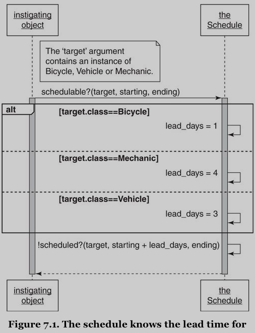
Figure 7.1: The schedule knows the lead time for other objects.
Schedule knows too much. This knowledge doesn't belong in Schedule, it belongs in the classes whose names Schedule is checking. Instead of knowing details about other classes, the Schedule should send them messages.
Removing Unnecessary Dependencies
The fact that the Schedule checks many class names to determine what value to place in one variable suggests that the variable name should be turned into a message, which in turn should be sent to each incoming object.
Discovering the Scheduable Duck Type
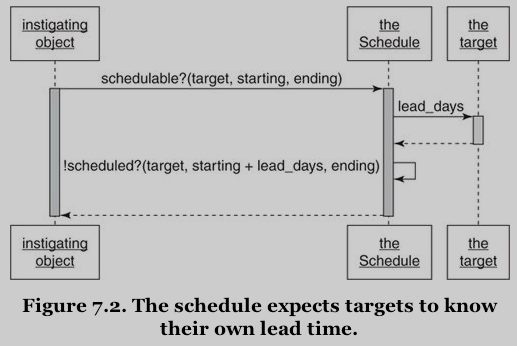
Figure 7.2: The Schedule expects targets to know their own lead time.
schedulable? method sends the lead_days message to its incoming target argument. It simplifies the code and pushes responsibility for knowing the correct number of lead days into the last object that could possibly know the correct answer, which is exactly where this responsibility belongs.
Something interesting: this diagram contains a box labeled "the target". Because target's class is unknown, it's not obvious how to label the box for the receiver of this message. The easiest way is to sidestep this issue by labeling the box after the name of the variable and sending the lead_days message to that "target" without being precise about its class. The Schedule merely expects it to respond to a specific message. This message-based expectation transcends class and exposes a role. -> The Schedule expects its target to behave like something that is "schedulable". You have discovered a duck type. -> Right now this new duck type is shaped much like the Preparer duck type from Chapter 5; it consits only of this interface. Schedulable must implement lead_days but currently have no other code in common.
TODO Letting Objects Speak for Themselves caveat
Figure 7.2 still contains unnecessary dependencies that should be removed.
Extreme example: ask StringUtils class if a string is empty. -> Strings should respond to empty? message.
The general idea: objects should manage themselves; they should contain their own behavior. If your interest is in object B, you should not be forced to know about object A if your only use of it is to find things out about B.
The SD in Figure 7.2 violates this rule. It forces the instigator to know about and thus depend upon the Schedule, even though its only real interest is in the target. -> Targets should respond to schedulable?. This method should be added to the interface of the Schedulable role. [ME: reduce the method signature from schedulable?(target, starting, ending) to schedulable?(starting, ending) ]
TODO Writing the Concrete Code best practic techniques
While adding the schedulable? method, you are faced with two decisions:
- you must decide what the code should do
- you must decide where the code should live
The simplest way to get started is to separate the two decisions:
- pick an arbitrary concrete class (for example, the
Bicycleclass) and implement theschedulable?method directly in that class - once you have a version that works for
Bicycleyou can refactor your way to a code arrangement that allows all ~Schedulable~s to share the behavior.
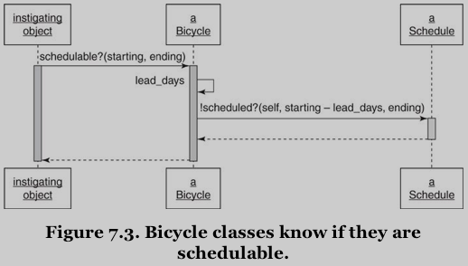
Figure 7.3: Bicycle classes know if they are schedulable.
This change allows bicycles to speak for themselves, freeing instigating objects to interact with them without the aid of a third party.
class Schedule def scheduled?(schedulable, start_date, end_date) puts "This #{schedulable.class} is not scheduled\n" + " between #{start_date} and #{end_date}" false end end class Bicycle attr_reader :schedule, :size, :chain, :tire_size # Inject the Schedule and provide a default def initialize(args={}) @schedule = args[:schedule] || Schedule.new # ... end # Return true if this bicycle is available # during this (now Bicycle specific) interval def schedulable?(start_date, end_date) !scheduled?(start_date - lead_days, end_date) end # Return the schedule's answer def scheduled?(start_date, end_date) schedule.scheduled?(self, start_date, end_date) end # Return the number of lead_days before a bicycle # can be scheduled def lead_days 1 end # ... end require "date" starting = Date.parse("2015/09/04") ending = Date.parse("2015/09/10") b = Bicycle.new b.schedulable?(starting, ending) >>>> This Bicycle is not scheduled between 2015-09-03 and 2015-09-10
The code hides knowledge of who the Schedule is and what the Schedule does inside of Bicycle. Objects holding onto a Bicycle no longer need know about the existence or behavior of the Schedule. [ME: 始终多考虑一步 – dependencies 还能减少吗？]
Extracting the Abstraction distinction inheritance module delegation
The code above solves the first part of current problem: what the schedulable? method should do. But Bicycle is not the only kind of thing that is "schedulable".
It's time to rearrange the code so that it can be shared among objects of different classes. – The second part of the problem: where the code should live.
The following example shows a new Schedulable module. The schedulable? and scheduled? methods are exact copies of the ones formerly implemented in Bicycle.
module Schedulable attr_writer :schedule def schedule # (1) @schedule ||= ::Schedule.new end def schedulable?(start_date, end_date) !scheduled?(start_date - lead_days, end_date) end def scheduled?(start_date, end_date) schedule.scheduled?(self, start_date, end_date) end # Includers may override def lead_days # (2) 0 end end
[ME: the variable schedule could be visited in the host class???]
Explanation:
- (1): a
schedulemethod has been added. It returns an instance of the overallSchedule. - (2): Even if there were no reasonable app default for lead days, the
Schedulablemodule must still implement thelead_daysmethod. The rules for modules are the same as for classical inheritance. – If a module sends a message it must provide an implementation, even if that implementation merely raises an error indicating that users of the module must implement the method.
Evolution:
- In Figure 7.2, the instigating object depended on the
Schedule, which meant there might be many of places in the app that needed knowledge of theSchedule. - In the next iteration, Figure 7.3, this dependency was transferred to
Bicycle, reducing its reach into the app. - Now, in the code above, the dependency on
Schedulehas been removed fromBicycleand moved into theSchedulablemodule, isolating it even further.
Now, including this new module in the original Bicycle class adds the module's methods to Bicycle's response set. The lead_days is a hook that follows the template method pattern.
class Bicycle include Schedulable def lead_days 1 end #... end require "date" starting = Date.parse("2015/09/04") ending = Date.parse("2015/09/10") b = Bicycle.new b.schedulable?(starting, ending) >>>> This Bicycle is not scheduled between 2015-09-03 and 2015-09-10
Now that you have created this module other objects can make use of to become Schedulable themselves. They can play this role without duplicating the code.
The pattern of messages has changed from that of sending schedulable? to a Bicycle to sending schedulable? to a Schedulable:
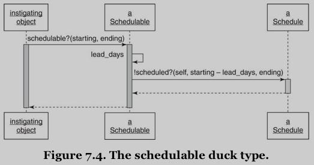
Figure 7.4: The schedulable duck type.
Once you include this module in all of the classes that can be scheduled, the pattern of code becomes strongly reminiscent of inheritance.
class Vehicle include Schedulable def lead_days 3 end #... end class Mechanic include Schedulable def lead_days 4 end #... end v = Vehicle.new p v.schedulable?(starting, ending) m = Vehicle.new p m.schedulable?(starting, ending) >>>> This Vehicle is not scheduled between 2015-09-01 and 2015-09-10 true This Vehicle is not scheduled between 2015-09-01 and 2015-09-10 true
The code in Schedulable is the abstraction and it uses the template method pattern to invite objects to provide specializations to the algorithm it supplies. Schedulable~s override ~lead_days to supply those specializations. When schedulable? arrives at any Schedulable, the message is automatically delegated to the method defined in the module. – Just like classical inheritance.
This chapter has been careful to maintain a distinction between classical inheritance and sharing code via modules. This is-a versus behaves-like-a difference definitely matters, each choice has distinct consequences. However, the coding techniques for these two things are very similiar and this similiarity exists because both techniques rely on automatic message delegation.
Looking Up Methods
Understanding the similarities is easier if you understand how OO languages, in general, and Ruby, in particular, find the method implementation that matches a message send.
A Gross Oversimplification method_missing method lookup
When an object receives a message, the OO language first looks in the object's class for a matching method implementation.
If the class does not implement the message, the search proceeds to its superclass. From here on only superclasses matter, the search proceeds up the superclass chain, looking in one superclass after another, until it reaches the top of the hierarchy.
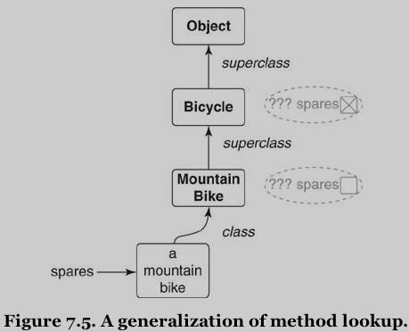
Figure 7.5: A generalization of method lookup.
If all attempts to find a suitable method fail, you might expect the search to stop, but many languages make a second attempt to resolve the message.
Ruby gives the original receiver a second chance by sending it a new message, method_missing, and passing :spares as an argument. Attempts to resolve this new message restart the search along the same path, except now the search is for method_missing rather than spares.
-> [ME: the way that methods are looked up for classical inheritance]
A More Accurate Explanation
The previous section: how methods are looked up for classical inheritance.
This section expands the explanation to encompass methods defined in Ruby module.
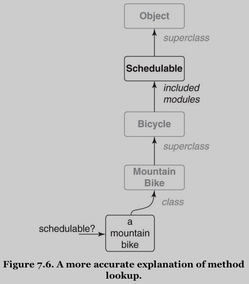
Figure 7.6: A more accurate explanation of method lookup.
When a class includes a module, all of the methods defined in the module become part of the class's response set. The module's methods go into the method lookup path directly above methods defined in the class. The search then proceeds along the method lookup path, which now contains modules as well as superclasses.
This has enormous implications. If Bicycle implements a method that is also defined in Schedulable, Bicycle's implementation overrides Schedulable's. If Schedulable sends methods that it does not implement, instances of MountainBike may encounter confusing failures. [ME: Why? 仍然在强调使用 template method pattern 的 rules 吗？或者这里是说 module 的规则与 class 的规则一致，内部使用的 method/message 必须已经定义???]
A Very Nearly Complete Explanation
It's entirely possible for a hierarchy to contain a long chain of superclasses, each of which includes many modules. When a single class includes several different modules, the moduels are placed in the method lookup path in reverse order of module inclusion. Thus, the methods of the last included module are encountered first in the lookup path.
Including a module into a class adds the module's methods to the response set for all instances of that class (and its subclasses).
It's also possible to add a module's methods to a single object, using Ruby's extend keyword.
Classes themselves are objects in their own right.
- Extending a class with a module creates class methods in that class.
- Extending an instance of a class with a module creates instance methods in that instance.
Finally, any object can also have ad hoc methods added directly to its own personal Singleton class. These ad hoc methods are unique to this specific object. [ME: HOW??? as in Singleton methods?]
Each of these alternatives adds to an object's response set by placing method definitions in specific and unambiguous places along the method lookup path.
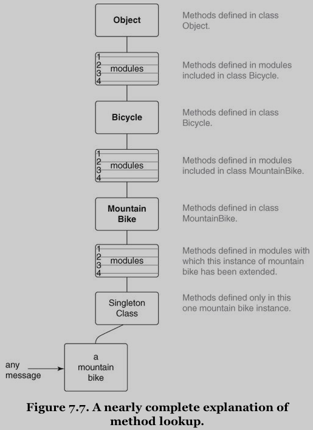
Figure 7.7: A nearly complete explanation of method lookup.
A word of warning: Figure 7.7 is accurate enough to guide the behavior of most designers, but it is not the complete story. For most app code it is perfectly adequate to behave as if class Object is the top of the hierarchy but, depending on your version of Ruby, this may not be technically true. If you are writing code for which you think this issue might matter, make sure you understand the object hierarchy of the Ruby in question.
Inheriting Role Behavior
Imagine the possibilities:
- you can write modules that include other modules.
- you can write that override the methods defined in other modules.
- you can create deeply nested class inheritance hierarchies and then include these various modules at different levels of the hierarchy.
You can wirte code that is impossible to understand, debug, or extend!
This is powerful stuff, and dangerous in untutored hands.
However, this power is what allows you to create simple structures of related objects that elegantly fulfill the needs of your apps. Learn to use them for the right reasons, in the right places, in the correct ways.
This first step along this path is to write properly inheritable code.
Writing Inheritable Code
The usefulness and maintainability of inheritance hierarchy and modules is in direct proportion to the quality of the code.
Sharing inherited behavior requires very specific coding techniques, which are covered in the following sections.
TODO Recognize the Antipatterns techniques inheritance duck typing module
There are two antipatterns that indicate that your code might benefit from inheritance.
First, an object that uses a variable with a name like type or category to determine what message to send to self contains two highly related but slightly different types. -> Code like this can be rearranged to use classical inheritance by putting the common code in an abstract superclass and creating subclasses for the different types.
Second, when a sending object checks the class of a receiving object to determine what message to send, you have overlooked a duck type. -> In this situation all of the possible receiving objects play a common role. This role should be codified as a duck type and receivers should implement the duck type's interface. -> Once they do, the original object can send one single message to every receiver, confident that because each receiver plays the role it will understand the common message.
In addition to sharing an interface, duck types might also share behavior. When they do, place the shared code in a module and include that module in each class or object that plays the role.
Insist on the Abstraction
All of the code in an abstract superclass should apply to every class that inherits it. Superclasses should not contain code that applies to some, but not all, subclasses. This restriction also applies to modules: the code in a module must apply to all who use it. [ME: Well-conceived duck type!]
Faulty abstractions cause inheriting objects to contain incorrect behavior; attempts to work around this erroneous behavior will cause your code to decay. When interacting with these awkward objects, programmers are forced to know their quirks and into dependencies that are better avoided.
Subclasses that override a method to raise an exception like "does not implement" are a symptom of this problem. When subclasses override a method to declare that they do not do that thing they come perilously close to declaring that they are not that thing. Nothing good can come of this.
If you cannot correctly identify the abstraction there may not be one, and if no common abstraction exists then inheritance is not the solution to your design problem.
Honor the Contract
Subclasses agree to a contract: they promise to be substitutable for their superclasses – only possible only when objects behave as expected and subclasses are expected to conform to their superclass's interface. They are not permitted to do anything that forces others to check their type in order to know how to treat them or what to expect of them.
Where superclasses place restrictions on input arguments and return values, subclasses can indulge in a slight bit of freedom without violating their contract: subclasses may accept input parameters that have broader restrictions and may return results that have narrower restrictions, all while remaining perfectly substitutable for their superclasses.
Subclasses that fail to honor their contract are difficult to use. These subclasses are declaring that they are not really a kind-of their superclass and cast doubt on the correctness of the entire hierarchy.
Liskov Substitution Principle (LSP) SOLID LSP Liskov law principles
When you honor the contract, you are following the LSP (the "L" in the SOLID design principles).
LSP: in order for a type system to be sane, subtypes must be substitutable for their supertypes.
Following this principle creates apps where a subclass can be used anywhere its superclass would do, and where objects that include modules can be trusted to interchangeable play the module's role. [ME: type & role!]
Use the Template Method Pattern
The fundamental coding technique for creating inheritable code.
This pattern is what allows you to separate the abstract from the concrete:
- the abstract code defines the algorithm.
- the concrete inheritors of that abstraction contribute specialization by overriding these template methods.
The template methods represent the parts of the algorithm that vary and creating them forces you to make explicit decisions about what varies and what does not.
TODO Preemptively Decouple Classes principles inheritance
Avoid writing code that requires its inheritors to send super -> instead use hook messages to allow subclasses to participate while absolving them of responsibility for knowing the abstract algorithm.
Inheritance, by its very nature, adds powerful dependencies on the structure and arrangement of code. Writing code that requires subclasses to send super adds an additional dependency -> Avoid this if you can.
Hook methods solve the problem of sending super, but unfortunately, only for adjacent levels of the hierarchy. For example, if you add another level to the hierarchy by creating subclass MonsterMountainBike under MountainBike. In order to combine its own spare parts with those of its parent, MonsterMountainBike would be forced to override local_spares, and within it, send super. -> Refer to the next section.
Create Shallow Hierarchies
The limitations of hook methods are just one of the many reasons to create shallow hierarchies.
Every hierarchy can be thought of a pyramid that has both depth and breadth:
- An object's depth is the number of superclasses between it and the top.
- Its breadth is the number of its direct subclasses.
-> A hierarchy's shape is defined by its overall breadth and depth. -> The shape determines ease of use, maintenance, and extension.
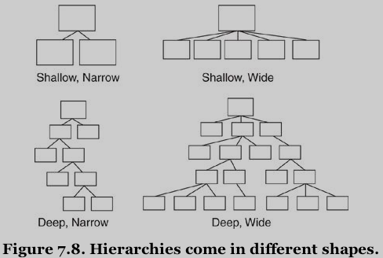
Figure 7.8: Hierarchies come in different shapes.
Figure 7.8: Hierarchies come in different shapes:
- Shallow, narrow hierarchies are easy to understand.
- Shallow, wide hierarchies are slightly more complicated.
- Deep, narrow hierarchies are a bit more challenging and have a natural tendency to get wider, strictly as a side effect of their depth.
- Deep, wide hierarchies are difficult to understand, costly to maintain, and should be avoided.
The problem with deep hierarchies is that they define a very long search path for message resolution and provide numerous opportunities for objects in that path to add behavior as the message passes by. Because objects depend on everything above them, a deep hierarchy has a large set of built-in dependencies, each of which might someday change.
Another problem with deep hierarchies is that programmers tend to be familiar with just the classes at their tops and bottoms (they tend to understand only the behavior implemented at the boundaries of the search path). The classes in the middle get short shrift. Changes to these vaguely understood iddle classes stand a greater chance of introducing errors.
Summary
When objects that play a common role need to share behavior, they do so via a Ruby module.
The code defined in a module can be added to any object, be it
- an instance of a class,
- a class itself,
- or another module.
When a class includes a module, the methods in that module get put into the same lookup path as methods acquired via inheritance.
Because module methods and inherited methods interleave in the lookup path, the coding techniques for modules mirror those of inheritance. Modules, therefore, should use the template method pattern to invite those that include them to supply specializations, and should implement hook methods to avoid forcing include=rs to send =super (and thus know the algorithm). [ME: use hook methods to improve template pattern]
When an object acquires behavior that was defined elsewhere (a superclass or an included module), the acquiring object makes a commitment to honoring an implied contract. This contract is defined by the LSP,
- which in mathematical terms says that a subtype should be substitutable for its supertype, and
- in Ruby terms this means that an object should act like what it claims to be.
8. Combining Objects with Composition
omposition is the act of combining distinct parts into a complex whole such that the whole becomes more than the sum of its parts. E.g. music is composed of notes.
Use OO composition to combine simple, independent objects into larger, more complex wholes.
In composition, the larger object is connected to its parts via a has-a relationship. Taking bicycle as an example, not only does a bicycle have parts, but it communicates with them via an interface. Part is a role and bicycles are happy to collaborate with any object that plays the role.
Composing a Bicycle of Parts
This section takes the Bicycle example from Chapter 6 "Acquiring Behavior Through Inheritance" and moves it through several refactorings, gradually replacing inheritance with composition.
Updating the Bicycle Class
Convert the inheritance hierarchy to use composition.
The first step is to ignore the existing code and think about how a bicycle should be composed.
Bicycles have parts, the bicycle-parts relationship quite naturally feels like composition. You could delegate the spares message to the object which holds all of a bicycle's parts.
It's reasonable to name this new class Parts. This object holds a list of the bike's parts and know which of those parts needs spares. Notice that this object represents a collection of parts, not a single part.
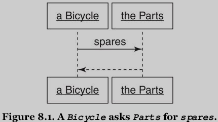
Figure 8.1: A Bicycle asks Parts for spares.
- Here, a
Bicyclesends thesparesmessage to itsPartsobject. - Every
Bicycleneeds aPartsobject; part of what it means to be aBicycleis to have-aParts.
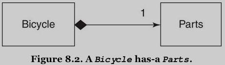
Figure 8.2: A Bicycle has-a Parts.
- This black diamond indicates composition, it means that a
Bicycleis composed ofParts. - The number 1 means there's just one
Partsobject perBicycle.
It's easy to convert the existing Bicycle class to this new design:
- remove most of its code,
- add a
partsvariable to hold thePartsobject, and - delegate
sparestoparts
class Bicycle attr_reader :size, :parts def initialize(args={}) @size = args[:size] @parts = args[:parts] end def spares parts.spares end end
Bicycle is now responsible for three things:
- knowing its
size - hodling its
Parts - answering its
spares
Creating a Parts Hierarchy
That was easy, but only because there wasn't much bicycle related behavior in the Bicycle class to begin with – most of the code in Bicycle previously dealt with parts.
The simplest way to get the parts behavior working again is to simply fling that code into a new hierarchy of Parts.
class Parts attr_reader :chain, :tire_size def initialize(args=[]) @chain = args[:chain] || default_chain @tire_size = args[:tire_size] || default_tire_size post_initialize(args) end def spares { tire_size: tire_size, chain: chain }.merge(local_spares) end def default_tire_size raise NotImplementedError end # subclasses may override def post_initialize(args) nil end def local_spares {} end def default_chain '10 speed' end end class RoadBikeParts < Parts attr_reader :tape_color def post_initialize(args) @tape_color = args[:tape_color] end def local_spares {tape_color: tape_color} end def default_tire_size '23' end end class MountainBikeParts < Parts attr_reader :front_shock, :rear_shock def post_initialize(args) @front_shock = args[:front_shock] @rear_shock = args[:rear_shock] end def local_spares {rear_shock: rear_shock} end def default_tire_size '2.1' end end
- This code is a near exact copy of the
Bicyclehierarchy from Chapter 6.
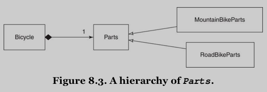
Figure 8.3: A hierarchy of Parts
After this refactoring, regardless of whether it has RoadBikeParts or MountainBikeParts, a bicycle can still correctly answer its size and spares:
road_bike = Bicycle.new( size: 'L', parts: RoadBikeParts.new(tape_color: 'read') ) p road_bike.size p road_bike.spares mountain_bike = Bicycle.new( size: 'L', parts: MountainBikeParts.new(rear_shock: 'Fox') ) p mountain_bike.size p mountain_bike.spares >>>> "L" {:tire_size=>"23", :chain=>"10 speed", :tape_color=>"read"} "L" {:tire_size=>"2.1", :chain=>"10 speed", :rear_shock=>"Fox"}
This refactoring reveals one useful thing: it made it blindingly obvious just how little Bicycle specific code there was to begin with. Most of the code above deals with individual parts, the Parts hierarchy now cries out for another refactoring.
Composing the Parts Object
By definition a parts list contains a list of individual parts. -> Add a class to represent a single part. The class name ought to be Part but this makes conversation a challenge. -> To side step the communication problem, when discussing Part and Parts, you can follow the class name with the word "object" and pluralize "object" as necessary – "There is a Parts object, and it may contain many Part objects". -> Choosing these class names requires a precision of communication that's a worthy goal in itself.
Creating a Part
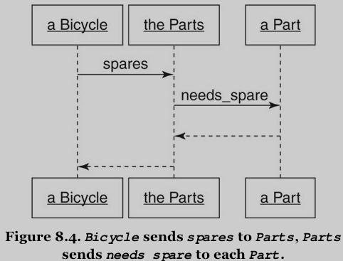
Figure 8.4: Bicycle sends spares to Parts, Parts sends needsspare to each Part.
Changing the design in this way requires creating a new Part object. The Parts object is now composed of Part objects:
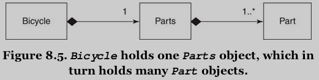
Figure 8.5: Bicycle holds one Parts object, which in turn holds many Part objects.
Introducing this new Part class simplifies the exsiting Parts class, which now becomes a simple wrapper around an array of Part objects. Parts can filter its list of Part objects and return the ones that need spares.
class Bicycle attr_reader :size, :parts def initialize(args={}) @size = args[:size] @parts = args[:parts] end def spares parts.spares end end class Parts attr_reader :parts def initialize(parts) @parts = parts end def spares parts.select {|part| part.needs_spare} end end class Part attr_reader :name, :description, :needs_spare def initialize(args) @name = args[:name] @description = args[:description] @needs_spare = args.fetch(:needs_spare, true) # [使用 fetch 设置 boolean 的默认值] end end
The following code creates a number of different parts and saves each in an instance variable:
chain = Part.new( name: 'chain', description: '10 - speed' ) road_tire = Part.new( name: 'tire_size', description: '23' ) tape = Part.new( name: 'tape_color', description: 'red' ) mountain_tire = Part.new( name: 'tire_size', description: '2.1' ) rear_shock = Part.new( name: 'rear_shock', description: 'Fox' ) front_shock = Part.new( name: 'front_shock', description: 'Manitou', needs_spare: false)
Individual Part objects can be grouped together into a Parts:
road_bike_parts = Parts.new([chain, road_tire, tape])
Or you can construct the Parts object on the fly when creating a Bicycle:
require "awesome_print" road_bike = Bicycle.new( size: 'L', parts: Parts.new([chain, road_tire, tape])) ap road_bike.size ap road_bike.spares mountain_bike = Bicycle.new( size: 'L', parts: Parts.new([chain, mountain_tire, front_shock, rear_shock])) ap mountain_bike.size ap mountain_bike.spares >>>> "L" [ [0] #<Part:0x0055fafb2cd868 @name="chain", @description="10 - speed", @needs_spare=true>, [1] #<Part:0x0055fafb2cd7c8 @name="tire_size", @description="23", @needs_spare=true>, [2] #<Part:0x0055fafb2cd728 @name="tape_color", @description="red", @needs_spare=true> ] "L" [ [0] #<Part:0x0055fafb2cd868 @name="chain", @description="10 - speed", @needs_spare=true>, [1] #<Part:0x0055fafb2cd660 @name="tire_size", @description="2.1", @needs_spare=true>, [2] #<Part:0x0055fafb2cd5c0 @name="rear_shock", @description="Fox", @needs_spare=true> ]
Notice: Bicycle's old spares method returned a hash, but this new spares method returns an array of Part objects.
While it may be tempting to think of these objects as instances of Part, composition tells you to think of them as objects that play the Part role. – They don't have to be a kind-of the Part class, they just have to act like one (they must respond to name, description, and needs_spare).
TODO Making the Parts Object More Like an Array techniques Forwardable Enumerable
There is room for improvement: parts and spares methods of Bicycle ought to return the same sort of thing, yet the objects that come back don't behave in the same way:
ap mountain_bike.spares.size # the return value of spares is an array ap mountain_bike.parts.size # the type of parts is Parts >>>> 3 NoMethodError: undefined method `size' for #<Parts:0x0055fafb24a670> (pry):461:in `<main>'
-> Three different implementations of Parts:
- The first answers only the
sparesandpartsmessages: it does not act like an array. - The second adds
size, a minor improvement that just returns the size of its internalArray. - The third subclasses
Arrayand therefore gives the appearance of fully behaving like an array ([ME: seemingly]), but an instance ofPartsstill displays unexpected behavior (e.g. using+to combine two instances ofPartsreturns anArrayobject, which doesn't understandsparesany more).
-> There is no perfect solution. It's therefore time to make a difficult decision. – Tradeoffs!
Somewhere in the middle ground between complexity and usability lies the following solution: The Parts class delegates size and each to its @parts array and includes Enumerable to get common traversal and searching methods. This version of Parts does not have all of the behavior of Array, but at least everything that it claims to do actually works.
require "forwardable" class Parts extend Forwardable def_delegators :@parts, :size, :each include Enumerable def initialize(parts) @parts = parts end def spares select {|part| part.needs_spare} end end
Sending + to an instance of this Parts results in a NoMethodError exception.
However, because Parts now responds to size, each, and all of Enumerable, and obligingly raises errors when you mistakenly treat it like an actual Array, this code may be good enough.
mountain_bike = Bicycle.new( size: "L", parts: Parts.new([chain, # (1) mountain_tire, front_shock, rear_shock])) ap mountain_bike.spares.size ap mountain_bike.parts.size mountain_bike.parts.each {|part| p part} ap mountain_bike + mountain_bike >>>> 3 4 #<Part:0x0055fafb2cd868 @name="chain", @description="10 - speed", @needs_spare=true> #<Part:0x0055fafb2cd660 @name="tire_size", @description="2.1", @needs_spare=true> #<Part:0x0055fafb2cd4f8 @name="front_shock", @description="Manitou", @needs_spare=false> #<Part:0x0055fafb2cd5c0 @name="rear_shock", @description="Fox", @needs_spare=true> NoMethodError: undefined method `+' for #<Bicycle:0x0055fafb281d00> (pry):597:in `<main>'
You again have a workable version of the Bicycle, Parts, and Part classes. It's time to reevaluate the design.
Manufacturing Parts
Look back at line (1). The Part objects were created so long ago that you may already have forgotten them. And somewhere in your app, some object had to know how to create these Part objects.
This is a lot of knowledge and it can easily leak all over your app. This leakage is both unfortunate and unnecessary.
Althoough there are lots of different individual parts, there are only a few valid combinations of parts. Everything would be easier if you could describe the different bikes and then use your descriptions to magically manufacture the correct Parts object for any bike.
road_config = [['chain', '10 - speed'], ['tire_size', '23'], ['tape_color', 'red']] mountain_config = [['chain', '10 - speed'], ['tire_size', '2.1'], ['front_shock', 'Manitou', false], ['rear_shock', 'Fox']] ap road_config >>>> [ [0] [ [0] "chain", [1] "10 - speed" ], [1] [ [0] "tire_size", [1] "23" ], [2] [ [0] "tape_color", [1] "red" ] ]
Unlike a hash, this simple 2-dimensional array provides no structural information. However, you understand how this structure is organized and you can encode your knowledge into a new object that manufactures Parts.
TODO Creating the PartsFactory design pattern factory
Factory: an object that manufactures other objects. It's merely the word OO designers use to concisely communicate the idea of an object that creates other objects. Ruby factories are simple.
A new PartsFactory module. Its public responsibility is to create a Parts.
module PartsFactory def self.build(config, part_class = Part, parts_class = Parts) parts_class.new( config.collect {|part_config| part_class.new( name: part_config[0], # (1) description: part_config[1], # (1) needs_spare: part_config.fetch(2, true))}) # (1) end end
This factory knows the structure of the config array.
Putting knowledge of config's structure in the factory has two consequences:
- the
configcan be expressed very tersely: becausePartsFactoryunderstandsconfig's internal structure,configcan be specified as an array rather than a hash. - once you commit to keeping
configin an array, you should always create newPartsobject using the factory. – To create newPartsvia any other mechanism requires duplicating the knowledge that is encoded in lines (1) above.
Now use the configuration arrays to easily create new Parts:
road_parts = PartsFactory.build(road_config) road_parts.each{|part| ap part} mountain_parts = PartsFactory.build(mountain_config) mountain_parts.each{|part| ap part}
PartsFactory, combined with the new configuration arrays, isolates all the knowledge needed to create a valid Parts. This information was previously dispersed throughout the app but now it is contained in this one class and these two arrays.
TODO Leveraging the PartsFactory techniques OpenStruct
Have a look at the Part class:
class Part attr_reader :name, :description, :needs_spare def initialize(args) @name = args[:name] @description = args[:description] @needs_spare = args.fetch(:needs_spare, true) # (1) [使用 fetch 设置 boolean 的默认值] end end
The only slightly complicated line of code (1) is duplicated in PartsFactory. If PartsFactory created every Part, Part wouldn't need this code. If you remove this code from Part, there's almost nothing left. -> You can replace the whole Part class with a simple OpenStruct.
OpenStruct provides a convenient way to bundle a number of attributes into an object.
OpenStruct vs. Struct class:
Structtakes position order initialization arguments.OpenStructtakes a hash for its initialization and then derives attributes from the hash.
Reasons to remove the Part class:
- this simplifies the code
- you may never again need anything as complicated as what you currently have.
Change PartsFactory to use OpenStruct to create an object that plays the Part role:
require 'ostruct' module PartsFactory def self.build(config, parts_class = Parts) parts_class.new( config.collect {|part_config| create_part(part_config)}) end def self.create_part(part_config) OpenStruct.new( name: part_config[0], description: part_config[1], needs_spare: part_config.fetch(2, true)) end end
-> So PartsFactory must be solely responsible for manufacturing Parts.
It returns a Parts that contains an array of OpenStruct objects, each of which plays the Part role.
mountain_parts = PartsFactory.build(mountain_config) mountain_parts.each{|part| ap part} >>>> OpenStruct { :name => "chain", :description => "10 - speed", :needs_spare => true } OpenStruct { :name => "tire_size", :description => "2.1", :needs_spare => true } OpenStruct { :name => "front_shock", :description => "Manitou", :needs_spare => false } OpenStruct { :name => "rear_shock", :description => "Fox", :needs_spare => true }
The Composed Bicycle
Bicycle now uses composition - Bicycle, Parts and PartsFactory, and the configuration arrays for road and mountain bikes:
class Bicycle attr_reader :size, :parts def initialize(args={}) @size = args[:size] @parts = args[:parts] end def spares parts.spares end end require "forwardable" class Parts extend Forwardable def_delegators :@parts, :size, :each include Enumerable def initialize(parts) @parts = parts end def spares select {|part| part.needs_spare} end end require 'ostruct' module PartsFactory def self.build(config, parts_class = Parts) parts_class.new( config.collect {|part_config| create_part(part_config)}) end def self.create_part(part_config) OpenStruct.new( name: part_config[0], description: part_config[1], needs_spare: part_config.fetch(2, true)) end end road_config = [['chain', '10 - speed'], ['tire_size', '23'], ['tape_color', 'red']] mountain_config = [['chain', '10 - speed'], ['tire_size', '2.1'], ['front_shock', 'Manitou', false], ['rear_shock', 'Fox']]
Bicycle has-a Parts, which in turn has-a collection of Part objects. Parts and Part may exist as classes, but the objects in which they are contained think of them as roles.
This new code works much like the prior Bicycle hierarchy. The only difference is that the spares message now returns an array of Part-like objects instead of a hash:
require "awesome_print" road_bike = Bicycle.new( size: 'L', parts: PartsFactory.build(road_config)) ap road_bike.spares mountain_bike = Bicycle.new( size: 'L', parts: PartsFactory.build(mountain_config)) ap mountain_bike.spares >>>> [ [0] OpenStruct { :name => "chain", :description => "10 - speed", :needs_spare => true }, [1] OpenStruct { :name => "tire_size", :description => "23", :needs_spare => true }, [2] OpenStruct { :name => "tape_color", :description => "red", :needs_spare => true } ] [ [0] OpenStruct { :name => "chain", :description => "10 - speed", :needs_spare => true }, [1] OpenStruct { :name => "tire_size", :description => "2.1", :needs_spare => true }, [2] OpenStruct { :name => "rear_shock", :description => "Fox", :needs_spare => true } ]
Now that these new classes exist, it's very easy to create a new kind of bike by simply describing its parts:
recumbent_config = [['chain', '9 - speed'], ['tire_size', '28'], ['flag', 'tall and orange']] recumbent_bike = Bicycle.new( size: 'L', parts: PartsFactory.build(recumbent_config)) ap recumbent_bike.spares >>>> [ [0] OpenStruct { :name => "chain", :description => "9 - speed", :needs_spare => true }, [1] OpenStruct { :name => "tire_size", :description => "28", :needs_spare => true }, [2] OpenStruct { :name => "flag", :description => "tall and orange", :needs_spare => true } ]
Aggregation: A Special Kind of Composition compositiion aggregation difference
Delegation: when one object receives a message and merely forwards it to another.
Delegation creates dependencies: the receiving object must recognize the message and know where to send it.
Composition often involves delegation but the term means something more: a composed object is made up of parts with which it expects to interact via well-defined interfaces [ME: roles???].
Composition describes a has-a relationship:
- meals have appetizers (role),
- universities have departments (role),
- bicycles have parts (role).
Unanticipated new objects fit seamlessly and interchangeably into existing meals as long as they implement the required interfaces [ME: roles!].
The term composition gets used for two slightly different concepts:
- The definition above is for the broadest use of the term: in most cases when you see composition it will indicate nothing more than this general has-a relationship between two objects. <-> However, as formally defined it means something a bit more specific: it indicates a has-a relationship where the contained object has no life independent of its container. – Not only that meals have appetizers, but also that once the meal is eaten the appetizer is also gone.
- This leaves a gap in the definition that is filled by the term aggregation: it is exactly like composition except that the contained object has an independent life. – Although a department completely disappears when its university goes defunct, its professors continue to exist. – The university-department relationship is one of composition (in its strictest sense) and the department-professor relationship is aggregation.
You can use composition to refer to both kinds of relationships and be more explicit only if the need arises.
TODO Deciding Between Inheritance and Composition composition inheritance design principles rules
Classical inheritance is a code arrangement technique: behavior is dispersed among objects and these objects are organized into class relationships such that automatic delegation of messages invokes the correct behavior. -> For the cost of arranging objects in a hierarchy, you get message delegation for free.
Composition reverses these costs and benefits: the relationship between objects is not codified in the class hierarchy, instead objects stand alone and as a result must explicitly know about and delegate messages to one another. -> Composition allows objects to have structural independence, but at the cost of explicit message delegation.
Question: when to use them?
The general rule is that:
- faced with a problem that composition can solve, you should do so. If you cannot explicitly defend inheritance as a better solution, use composition. Composition contains far fewer built-in dependencies than inheritance -> it is very often the best choice.
- Inheritance is a better solution when its use provides high rewards for low risk.
This section provides guidelines for choosing the best relationship.
Accepting the Consequences of Inheritance
Making wise choices about using inheritance requires a clear understanding of its costs and benefits.
Benefits of Inheritance
Chapter 2 "Designing Classes with a Single Responsibility" outlined 4 goals for code: transparent, reasonable, usable, and exemplary (TRUE).
Inheritance, when correctly applied, excels at the 2, 3, and 4 goals:
- resonable: methods defined near the top of inheritance hierarhies have widespread influence because the height of the hierarchy acts as a lever that multiplies their effects. Changes made to these methods ripple down the inheritance tree. Correctly modeled hierarchies are thus extremely reasonable: big changes in behavior can be achieved via small changes in code.
- usable: use of inhertiance results in code that can be described as open-closed – hierarchies are open for extension while remaining closed for modification. Adding a new subclass to an existing hierarchy requires no changes to existing code. Hierarchies are thus usable: you can easily create new subclasses to accommodate new variants.
- exemplary: corretly written hierarhies are easy to extend. The hierarchy embodies the abstraction and every new subclass plugs in a few concrete differences. The existing pattern is easy to follow and replicating it will be the natural choice of any programmer charged with creating new subclasses. Hierarchies are therefore exemplary: by their nature they provide guidance for writting the code to extend them.
Example: in Ruby, the Numeric class provides an exellent example. Integer and Float are modeled as subclasses of Numeric: this is-a relationship is exactly right Integers and floats are fundamentally numbers. Allowing these two classes to share a common abstraction is the most parsimonious way to organize code. [ME: composition - "has-a" relationship, inheritance - "is-a" relationship]
Costs of Inheritance
Concers about the use of inheritance fall into two different areas:
- you might be fooled into choosing inheritance to solve the wrong kind of problem: one day you need to add behavior but find there's no easy way do so. Because the model is incorrect, the new behavior won't fit. In this case, you'll be forced to duplicate or reconstructure code.
- even when inheritance makes sense for the problem, you might be writing code that will be used by others for purposes you did not anticipate. These other programmers want the behavior you have created but may not be able to tolerate the dependencies that inheritance demands.
The previous section on the benefits of inheritance was careful to quality its assertions as applying only to a "correctly modeled hierarchy".
Imagine reasonable, usable and exemplary as two-sided coins:
- the benefit side represents the wonderful gains that inheritance provides.
- If you apply inheritance to a problem for which it is not suited, you encounter a parallel detriment.
Costs:
- The flip side of the reasonable coin is the very high cost of making changes near the top of an incorrectly modeled hierarchy. In this case, the leveraging effect works to your disadvantages: small changes break everything.
- The opposing side of the usable coin is the impossibility of adding behavior when new subclasses represent a mixture of types. For example, the `Bicycle` hierarchy (chapter 6) failed when the need for recumbent mountain bikes appeared. This hierarchy already contains subclasses for `MountainBike` and `RecumbentBike`. Combining the qualities of these two classes into a single objet is not possible in the hierarchy as it currently exists. -> You cannot reuse existing behavior without changing it.
- The other side of the exemplary coin is the chaos that ensues when novice programmers attempt to extend incorrectly modeled hierarchies. These inadequate hierarchies should not be extended they need to be refactored, but novices do not have the skills to do so. Novices are forced to duplicate existing code or to add dependencies on class names – both of which serve to exacerbate existing design problems.
Inheritance, therefore, is a place where the question "What will happen when I'm wrong?" assumes special importance.
Inheritance by definition comes with a deeply embedded set of dependencies: subclasses depend on the methods defined in their superclasses and on the automatic delegation of messages to those superclasses. – This is classical inheritance's greatest strength and biggest weakness. – Subclasses are bound to the classes above them in the hierarchy. These built-in dependencies amplify the effects of modifications made to superclasses. Enormous, broad-reaching changes of behavior can be achieved with very small changes in code.
Finally, your consideration of the use of inheritance should be tempered by your expectations about the population who will use your code:
- if you are writing code for an in-house app in a domain with which you are intimately familiar, you may be able to predict the future well enough to be confident that your design problem is one for which inheritance is a cost-effective solution.
- as you write code for a wider audience, your ability to anticipate needs necessarily decreases and the suitability of requiring inheritance as part of the interface goes down.
Conclusion: avoid writing frameworks that require users of your code to subclass your objects in order to gain your behavior. Their app's objects may already be arranged in a hierarchy -> inheriting from your framework may not be possible.
Accepting the Consequence of Composition
Composition differs from inheritance in two basic ways:
- composed objects do not depend on the structure of the class hierarchy.
- they delegate their own messages.
These differences confer a diffrent set of costs and benefits.
Benefits of Composition
When using composition, the natural tendency is to create many small objects that contain straightforward responsibilities that are accessible through clearly defined interfaces.
These well-composed objects excel when measured against the TRUE goals:
- These small objects have a single responsibility and specify their own behavior. They are transparent: it's very easy to understand the code and it's clear what will happen if it changes. Also, the composed object's independence from the hierarchy means that it inherits very little code and so is generally immune from suffering side effects as a result of changes to classes above it in the hierarchy.
- Because composed objects deal with their parts via an interface, adding a new kind of part is a simple matter of plugging in a new object that honors the interface. From the point of view of the composed object, adding a new variant of an existing part is reasonable and requires no changes to its code.
- By their very nature, objects that participate in composition are small, structurally independent, and have well-defined interfaces. This allows their seamless transition into pluggable, interchangeable components. Well-composed objects are therefore easily usable in new and unexpected contexts.
At its best, composition results in apps built of simple, pluggable objects that are easy to extend and have a high tolerance for change.
Costs of Composition
Composition's strenghs contribute to its weaknesses:
- A composed object relies on its many parts. Even if each part is small and easily understood, the combined operation of the whole may be less than obvious. While every individual part may indeed be transparent, the whole may not be.
- The benefits of structural independence are gained at the cost of automatic delegation. The composed object must explicitly know which messages to delegate and to whom. Identical delegation code may be needed by many different objects, composition provides no way to share this code. [ME: Use modules to share code]
Conclusion:
- Composition is excellent at prescribing rules for assembling an object made of parts.
- Composition doesn't provide as much help for the problem of arranging code for a collection of parts that are very nearly identical.
Choosing Relationships
Classical inheritance (chapter 6), behavior sharing via modules (chapter 7) and composition.
The trick to lowering your app costs is to apply each technique to the right problem.
Some of the grand masters of OOD have given advice about using inheritance and composition:
- "Inheritance is specification."
- "Inheritance is best suited to adding functionality to existing classes when you will use most of the old code and add relatively small amounts of new code."
TODO Use Inheritance for is-a Relationships recognization inheritance
Small sets of real-world objects that fall naturally into static, transparently obvious specialization hierarchies are candidates to be modeled using classical inheritance.
Imagine a game where players race bicycle. Players assemble their bikes by "buying" parts. One of the parts they can buy is a shock. This game provides six nearly identical shocks; each differs slightly in cost and behavior.
All of these shocks are shocks. Their "shock-ness" is at the core of their identity. Shocks exist in no more atomic category. Variants of shocks are far more alike than they are different. The most accurate and descriptive statement that you can make about any one of the variants is that it is-a shock.
Inheritance is perfect for this problem. Shocks can be modeled as a shallow narrow hierarchy. The hierarchy's small size makes it understandable, intention revealing, and easily extendable. Because these objects meet the criteria for successful use of inheritance, the risk of being wrong is low, but in the unlikely event that you are wrong, the cost of changing your mind is also low. You can achieve the benefits of inheritance while exposing yourself to few of its risks.
In therms of this chapter's example, each different shock plays the role of Part. It inherits common shock behavior and the Part role from its abstract Shock superclass. The PartsFactory currently assumes that every part can be represented by the Part OpenStruct, but you could easily extend the part configuration array to supply the class name for a specific shock. Because you already think of Part as an interface, it's easy to plug in a new kind of part, even if this part uses inheritance to get some of its behavior.
If requirements change such that there is an explosion in the kinds of shocks, reassess this design decision. Perhaps it still holds, perhaps not. If modeling a bevy of new shocks requires dramatically expanding the hierarchy, or if the new shocks don't conveniently fit into the existing code, reconsider alternatives at that time.
TODO Use Duck Types for behaves-like-a Relationships recognization role
Some problems require many different objects to play a common role.
In addition to their core responsibilities, objects might play roles like schedulable, preparable, printable, or persistable.
There are two key ways to recognize the existence of a role:
- although an object plays it, the role is not the object's main responsibility. – A bicycle behaves-like-a schedulable but it is-a bicycle.
- the need is widespread: many otherwise unrelated objects share a desire to play the same role.
The most illuminating way to think about roles is from the outside: from the point of view of a holder of a role player rather than that of a role player. – The holder of a schedulable expects it to implement Schedulable's interface and to honor Schedulable's contract. All schedulables are alike in that they must meet these expectations.
Your design task is to
- recognize that a role exists,
- define the interface of its duck type, and
- provide an implementation of that interface for every possible player. [ME: in a module!]
Some roles consist only of their interface, others share common behavior – define the common behavior in a Ruby module to allow objects to play the role without duplicating the code. [ME: see my comment in Costs of Composition]
Use Composition for has-a Relationships
Many objects contain numerous parts but are more than the sums of those parts.
Bicycle have-a Parts, but the bike itself is something more. – It has behavior that is separate from and in addition to the behavior of its parts. -> Given the requirements, the most cost-effective way to model the Bicycle object is via composition.
This is-a versus has-a distinction is at the core of deciding between inheritance and composition:
- the more parts an object has, the more likely it is that it should be modeled with composition.
- the deeper you drill down into individual parts, the more likely it is that you'll discover a specific part that has a few specialized variants and is thus a reasonalbe candidate for inheritance.
For every problem, assess the costs and benefits of alternative design techniques and use your judgement and experience to make the best choice.
Summary
Composition allows you to combine small parts to create more complex objects such that the whole becomes more than the sum of its parts.
Composed objects tend to consist of simple, discrete entities that can easily be rearranged into new combinations.
These simple objects are easy to understand, reuse, and test, but because they combine into a more complicated whole, the operation of the bigger app may not be as easy to understand as that of the individual parts.
Composition, classical inheritance, and behavior sharing via modules are competing techniques for arranging code. Each has different costs and benefits. These differences predispose them to be better at solving slightly different problems.
These techniques are tools, nothing more, and you'll become a better designer if you practice each of them.
Learning to use them properly is a matter of experience and judgement, and one of the best ways to gain experience is to learn from your own mistakes.
The key to improving your design skills is to attempt these techniques, accept your errors cheerfully, remain detached from past design decisions, and refactor mercilessly.
As you gain experience, you'll get better at choosing the correct technique the first time, your costs will go down, and your apps will improve.
9. Designing Cost-Effective Tests
Writing changeable code is an art whose practice relies on three different skills:
- You must understand OOD.
- Poorly designed code is naturally difficult to change.
- From a practical point of view, changeability is the only design metric that matters. -> Code that's easy to change is well-designed.
- You must be skilled at refactoring code.
- Definition (Martin Fowler in "Refactoring: Improving the Design of Existing Code"): Refactoring is the process of changing a software system in such a way that it does not alter the external behavior of the code yet improves the internal structure. ->
- Refactoring does not add new behavior, it improves exsiting structure.
- It's a precise process that alters code via tiny steps and carefully, incrementally, and unerringly transforms one design into another.
- Good design preserves maximum flexibility at minimum cost by putting off decisions at every opportunity, deferring commitments until more specific requirements arrive. [ME: defer, defer, defer!] When that day comes, refactoring is how you morph the current code structure into one that will accommodate the new requirements. New features will be added only after you have successfully refactored the code.
- The need for ongoing refactoring is an outgrowth of good design, your design efforts will pay full dividends only when you can refactor with ease.
- The art of writing changeable code requires the ability to write high-value tests.
- Tests give you confidence to refactor constantly. Efficient tests prove that altered code continues to behave correctly without raising overall costs.
- Good tests weather code refactorings with aplomb, they are written such that changes to the code do not force rewrites of the tests.
- Writing tests that can perform this trick is a matter of design.
These three skills form a three-legged stool upon which changeable code rests:
- Well-designed code is easy to change,
- refactoring is how you change from one design to the next,
- tests free you to refactor with impunity.
Intentional Testing
The most common arguments for having tests:
- they reduce bugs.
- they provide documentation.
- writing tests first improves app design.
The true purpose of testing (just like the true purpose of design) is to reduce costs.
If writing, maintaining, and running tests consumes more time than would otherwise be needed to fix bugs, write documentation, and design apps tests are clearly not worth writing and no rational person would argue otherwise.
The solution to the problem of costly tests is not to stop testing but instead to get better at it.
Getting good value from tests requires clarity of intention and knowing what, when, and how to test.
Knowing Your Intention
Testing has many potential benefits, some obvious, others more obscure.
Finding Bugs
Finding faults/bugs early in the development process yields big dividends.
- It's easier to find and fix a bug nearer in time to its creation.
- Getting the code right earlier rather than later can have unexpected positive effects on the resulting design.
- Knowing that you can (or can't) do something early on may cause you to choose alternatives in the present that alter the design options available in the future.
- As code accumulates, embedded bugs acquire dependencies. Fixing these bugs late in the process may necessitate changing a lot of dependent code. -> Fixing bugs early always lower costs.
TODO Supplying Documentation
Tests provide the only reliable documentation of design: the story they tell remains true long after paper documents become obsolete and human memory fails.
Remember that you will forget, write tests that remind you of the story once you have. [ME: use tests to record your ideas.]
TODO Deferring Design Decisions
Tests allow you to safely defer design decisions.
As your design skills improve you will begin to write apps that are sprinkled with places where you know the design needs something but you don't yet have enough information to know exactly what. These are the places where you are awaiting additional information, valiantly resisting the forces that compel you to commit to a specific design.
These pending decision points are often coded as slightly embarrassing, extremely concrete hacks hidden behind totally presentable interfaces. This situation occurs when you are aware of just one concrete case in the present but you fully expect new cases to arrive in the near future. You know that at some point you will be better served by code that handles these many concrete cases as a single abstraction, but right now you don't have enough information to anticipate what that abstraction will be.
When your tests depend on interfaces you can refactor the underlying code with reckless abandon. The tests verify the continued good behavior of the interface and changes to the underlying code do not force rewrites of the tests. Intentionally depending on interfaces allow you to use tests to put off design decisions safely and without penalty.
TODO Supporting Abstractions
When more information finally arrives and you make the next design decision, you'll change the code in ways that increase its level of abstraction.
Herein lies another of the benefits of tests on design.
Good design naturally progresses toward small independent objects that rely on abstractions. The behavior of a well-designed app gradually becomes the result of interactions among these abstractions.
Abstractions are flexible design components but the improvements they provide come at one slight cost: Which each individual abstraction might be easy to understand, there is no single place in the code that makes obvious the behavior of the whole.
As the code base expands and the number of abstractions grows, tests become increasingly necessary. There is a level of design abstraction where it is almost impossible to safely make any change unless the code has tests. Tests are your record of the interface of every abstraction and as such they are the wall at your back. -> They let you put off design decisions and create abstractions to any useful depth.
TODO Exposing Design Flaws
The next benefit of tests is that they expose design flaws in the underlying code:
- If a test requires painful setup, the code expects too much context.
- If testing one object drags a bunch of others into the mix, the code has too many dependencies.
- If the test is hard to write, other objects will find the code difficult to reuse.
Tests are the canary in the coal mine: when the design is bad, testing is hard.
The inverse, however, is not guaranteed to be true: Costly tests do not necessarily mean that the app is poorly designed. – It's possible to write bad tests for well-designed code. -> For tests to lower your costs, both the underlying app and the tests must be well-designed.
Your goal is to gain all of the benefits of testing for the least cost possible. The best way to achieve this goal is to write loosely coupled tests about only the things that matter. -> Next section.
TODO Knowing What to Test testing intention state behavior queries commands
Most programmers write too many tests. In many cases, the cost of these unnecessary tests is so high that the programmers involved have given up testing altogether.
It's not that they don't have tests. They have a big, but out-of-date test suite. It just never runs.
One simple way to get better value from tests is to write fewer tests. The safest way to accomplish this is to test everything just once and in the proper place:
- Removing duplication from testing lowers the cost of changing tests in reaction to app changes.
- Putting tests in the right place guarantees they'll be forced to change only when absolutely necessary.
Distilling your tests to their essence requires having a very clear idea about what you intend to test, one that can be derived from design principles you already know.
Think of an OO app as a series of messages passing between a set of black boxes. -> Dealing with every object as a black box puts constraints on what others are permitted to know and limits the public knowledge about any object to the messages that pierce its boundaries.
Well-designed objects have boundaries that are very strong. Each is like the space capsule. Nothing on the outside can see in, nothing on the inside can see out and only a few explicitly agreed upon messages can pass through the predefined airlocks.
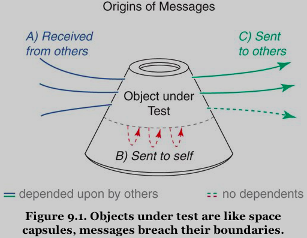
Figure 9.1: Objects under test are like space capsules, messages breach their boundaries.
This willful ignorance of the internals of every other object is at the core of design. Dealing with objects as if they are only and exactly the messages to which they respond lets you design a changeable app. [ME: interface-oriented!] This allows you to create tests that provide maximum benefit at minimum cost.
Each test is merely another app object that needs to use an existing class. -> The design principles you are enforcing in your app apply to your tests. [ME: tell stories (application scenarios) using tests!]
The more the test gets coupled to that class, the more entangled the two become and the more vulnerable the test is to unnecessarily being forced to change.
Not only should you limit couplings, but the few you allow should be to stable tihings. The most stable thing about any object is its public interface. -> The tests you write should be for messages that are defined in public interfaces.
The most costly and least useful tests are those that blast holes in an object's containment walls by coupling to unstable internal details.
Tests should concentrate on the incoming and outgoing messages that cross an object's boundaries:
- the incoming messages make up the public interface of the receiving object.
- the outgoing messages are incoming into other objects and so are part of some other object's interface.
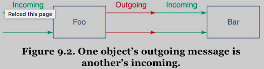
Figure 9.2: One object's outgoing message is another's incoming
- Messages that are incoming into
Foomake upFoo's public interface. Foois responsible for testing its own interface.- It does so by making assertions about the results that these messages return.
- Tests that make assertions about the values that messages return are tests for state. Such tests commonly assert that the results returned by a message equal an expected value. [ME: ~assertequal~]
Foosends messages toBar. This message is part ofBar's public interface and all tests of state should thus be confined toBar.Fooneed not, and should not, test these outgoing messages for state.
The general rule is that objects should make assertions about state only for messages in their own public interfaces. Following this rule confines tests of message return values to a single place and removes unnecessary duplication, **DRY**ing out your tests and lowering maintenance costs.
This does not mean outgoing messages need no tests at all. There are two flavors of outgoing messages, and one of them requires a different kind of test.
- Queries: some outgoing messages have no side effects and thus matter only to their senders. The sender surely cares about the result it gest back, but no other part of the app cares if the message gets sent. They need not be tested by the sending object. Query messages are part of the public interface of their receiver, which already implements every necessary test of state. [ME: queires = state]
- Commands: many outgoing messages do have side effects (e.g. a file gets written, a db record is saved, an action is taken by an observer, etc.) upon which your app depends. It is the responsibility of the sending object to prove that they are properly sent. Proving that a message gets sent is a test of behavior, not state, and involves assertions about the number of times, and with what arguments, the message is sent. [ME: command = behavior]
The guidelines for what to test: [ME: important!]
- Incoming messages should be tested for the state they return.
- Outgoing command messages should be tested to ensure they get sent.
- Outgoing query messages should not be tested.
As long as your app's objects deal with one another strictly via public interface, your tests need know nothing more. When you test this minimal set of messages, no change in the private behavior of any object can affect any test. When you test outgoing command messages only to prove they get sent, your loosely coupled tests can tolerate app changaes without being forced to change in turn. As long as the public interfaces remains stable, you can write tests once and they will keep you safe forever.
TODO Knowing When to Test
You should write test first, whenever it makes sense to do so.
Judging when it makes sense to do so can be challenging for novice designers. Novices often write ill-designed code. It is very hard to retroactively test these apps because tests are reuse and this code can't be reused.
Writing tests first forces a modicum of reusability to be built into an object from its inception. Therefore, novice designers are best served by writing test-first code. Their lack of design skills may make this bafflingly difficult but if they persevere they will at least have testable code.
However, that writing tests first is no substitute for and does not guarantee a well-designed app. The reusability that results from test-first is an improvement over nothing at all but the resulting app can still far short of good design.
Well-intentioned novices often write expensive, duplicative tests around messy, tightly coupled code. – The most complex code is usually written by the least qualified person. Novice programmers don't yet have the skills to write simple code. -> The apps are difficult to change and every refactoring breaks all the tests.
If you are a novice and in this situation, it's important to sustain faith in the value of tests. Done at the correct time and in the right amounts, testing, and writing code test-first, will lower your overall costs. Gaining these benefits requires applying OOD principles everywhere, both to the code of your app and to the code in your tests.
Because well-designed apps are easy to change, and well-designed tests may very well avoid change altogether, these overall design improvements pay off dramatically.
Experienced designers garners subtler improvements from testing-first. They already write loosely coupled, reusable code, tests add value in other ways.
It is not unheard of for experienced designers to spike a problem, that is, to do experiments where they just write code. These experiments are exploratory, for problems about whose solution they are uncertain. Once clarity is gained and a design suggests itself, these programmers then revert to test-first for production code.
Your overall goal is to create well-designed apps that have acceptable test coverage. The best way to reah this goal varies according to the strengths and experience of the programmer.
This license to use your own judgment is not permission to skip testing. Poorly designed code without tests is just legacy code that can't be tested. While it sometimes makes sense to write a bit of code the old fashioned way, you should err on the side of test-first.
TODO Knowing How to Test RSpec MiniTest BDD TDD
Anyone can create a new Ruby testing framework and sometimes it seems that everyone has. If you understand the costs and benefits, feel free to choose any framework that suites you.
However, there are many good reasons to stay within the testing mainstream.
As of this writing, the mainstream frameworks are MiniTest and RSpec.
Not only must you choose a framework, you must grapple with alternative styles of testing: TDD and BDD. Here the decision is not so clear-cut. TDD and BDD may appear to be in opposite but they are best viewed as on a continuum like Figure 9.3, where your values and experience dictate the choice of where to stand.
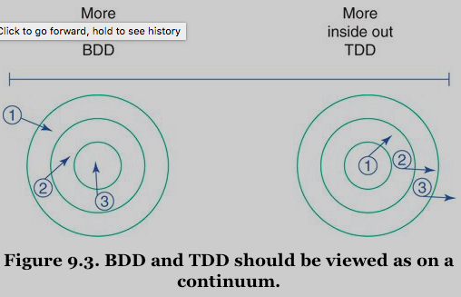
Figure 9.3: BDD and TDD should be viewed as on a continuum.
Both styles create code by writing tests first: [ME: characteristics of TDD and BDD]
- BDD takes an outside-in approach, creating objects at the boundary of an app and working its way inward, mocking as necessary to supply as-yet-unwritten objects.
- TDD takes an inside-out approach, usually starting with tests of domain objects and then reusing these newly created domain objects in the tests of adjacent layers of code.
Both are completely acceaptable. Each has costs and benefits, some of which will be explored in the next sections on writing tests.
When testing, it's useful to think of your app's objects as divided into two major categories:
- the object that you're testing, referred to from now on as the object under test.
- everything else.
Your tests must obviously know things about the first category, but they should remain as ignorant as possible about the second. Pretend that the rest of the app is opaque, that the only information available during the test is that which can be gained from looking at the object under test.
It's better for tests to assume a viewpoint that sights along the edges of the object under test, where they can know only about messages that come and go. [ME: messages, which describe the app.]
MiniTest Framework
The tests in this chapter are written using MiniTest. This is not an endorsement of one framework over another, rather a recognition of the fact that examples written in MiniTest will run anywhere Ruby 1.9 or above is intalled.
TODO Testing Incoming Messages
Incoming messages make up an object's public interface, the face it presents to the world. These messages need tests because other app objects depend on their signatures and on the results they return.
These first tests use code from the examples in Chapter 3 "Managing Dependencies", as they were when entangled together. Here they will illustrate how to test different components of design.
[ME: ===begin===]
Question: why we use dependency injection / inversion of control?
Answer:
- substitute class dependency to interface dependency. Refer to Writing Loosely Coupled Code.
- turn implicit dependency to explicit one! Refer to Proving the Public Interface.
Question: why we turn the direction of dependency around?
Answer: To defer design decision about defining an abstraction! Refer to Managing Dependency Direction.
[ME: ===end===]
class Wheel attr_reader :rim, :tire def initialize(rim, tire) @rim = rim @tire = tire end def diameter rim + (tire * 2) end # ... end class Gear attr_reader :chainring, :cog, :rim, :tire def initialize(args) @chainring = args[:chainring] @cog = args[:cog] @rim = args[:rim] @tire = args[:tire] end def gear_inches ratio * Wheel.new(rim, tire).diameter end def ratio chainring / cog.to_f end # ... end
Table 9.1 shows the messages (other than those that return simple attributes) that cross these object's boundaries.
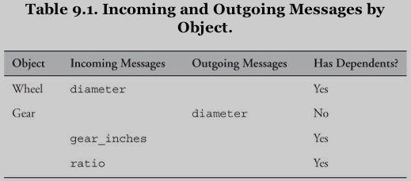
Table 9.1: Incoming and Outgoing Messages by Object
[ME: dependents are who depend on this interface.]
Every incoming message is part of an object's public interface and so must be tested. Now it's time to add a slight caveat to this rule.
Deleting Unused Interface
Incoming messages ought to have dependents. Some object other than the original implementer depends on each of these messages.
If you draw this table for the object under test and find a purported incoming message that does not have dependents, you should view that message with great suspicion. It's a speculative implementation that reeks of guessing about the future and clearly anticipates requirements that do not exist.
Do not test an incoming message that has no dependents, delete it. Your app is improved by ruthlessly eliminating code that is not actively being used. Such code is negative cash flow, it adds testing and maintenance burdens but provides no value.
Overcome any reluctance that you feel, practiing this pruning will teach you its value. Unused code costs more to keep than to recover. [ME: You can recover deleted code from revison control]
Proving the Public Interface
Incoming messages are tested by making assertions about the value (or state), that their invocation returns.
The first requirement for testing an incoming message is to prove that it returns the correct value in every possible situation.
class WheelTest < MiniTest::Unit::TestCase def test_calculates_diameter wheel = Wheel.new(26, 1.5) assert_in_delta(29, wheel.diameter, 0.01) end end
Wheel has no hidden dependencies so no other app objects get created as a side effect of running this test. Wheel's design allows you to test it independently of every other class in your app.
Testing Gear is a bit more interesting: Gear requires a few more arguments than Wheel, but even so the overall structure of these two tests is very similiar.
class GearTest < MiniTest::Unit::TestCase def test_calculates_gear_inches gear = Gear.new(chainring: 52, cog: 11, rim: 26, tire: 1.5) assert_in_delta(137.1, gear.gear_inches, 0.01) end end
This test has entanglements that the diameter test did not have: Gear's implementation of gear_inches unconditionally creates and uses another object, Wheel. Gear and Wheel are coupled in the code and in the tests, though it's not obvious here.
This affects how long this test runs and how likely it is to suffer unintented consequences as a result of changes to unrelated parts of the app. The coupling that creates this problem, however, is hidden inside of Gear and so totally invisible in this test. – The way the underlying code is structured adds hidden risk. [ME: a hint that we have a risky dependency which is not obvious in the test! -> Use DI/IoC to declare this dependency explicitly!]
If Wheels are expensive to create, the Gear test pays that cost. If Gear is correct but Wheel is broken, the Gear test might fail in a misleading way, at a place far distant from the code you're trying to test.
Tests run fastest when they execute the least code and the volume of external code that a test invokes is directly related to your design. When tightly coupled objects are tested, a test of one object runs code in many others. If the code were such that Wheel were also coupled to other objects, this problem is magnified: running the Gear test would then create a large network of objects, any of which might break in a maddeningly confusing way.
These problems are manifested in, but are not unique to, the tests. Because tests are the first reuse of code, this problem is but a harbinger of things to come for your app as a a whole.
Isolating the Object Under Test
It turns out that running gear_inches relies on code in objects other than Gear.
This exposes a broader design problem: when you can't test Gear in isolation, it bodes ill for the future. This difficulty in isolating Gear for testing reveals that it is bound to a specific context, one that imposes limitations that will interfere with reuse.
Chapter 3 broke this binding by removing the creation of Wheel from Gear. Gear now expects to be injected with an object that understands diameter.
class Gear attr_reader :chainring, :cog, :wheel def initialize(chainring, cog, wheel) @chainring = chainring @cog = cog @wheel = wheel end def ratio chainring / cog.to_f end def gear_inches # The object in the 'wheel~ variable # plays the 'Diameterizable' role. ratio * wheel.diameter end end
This transition of code is paralled by a transition of thought: Gear no longer cares about the class of the injected object, it merely expects that it implement diameter. The diameter method is part of the public interface of a role, one that might reasonably be named Diameterizable.
Injecting a Wheel into Gear is not the same as injecting a Diameterizable, its logical meaning differs. - in your thoughts about what they mean. Freeing your imagination from an attachment to the class of the incoming object opens design and testing possibilities that are otherwise unavailable. Thinking of the injected object as an instance of its role gives you more choices about what kind of Diameterizable to inject into Gear during your tests.
One possible Diameterizable is, obviously, Wheel:
class GearTest < MiniTest::Unit::TestCase def test_calculates_gear_inches gear = Gear.new( chainring: 52, cog: 11, wheel: Wheel.new(26, 1.5)) assert_in_delta(137.1, gear.gear_inches, 0.01) end end
The invisible coupling between these classes has been explicitly exposed. [ME: see what I have said before, hahaha.]
This test is fast enough but this speed is quite by accident. It's not that the gear_inches test has been carefully isolated and thus decoupled from other code. It's just that all the code coupled to this test runs quickly as well.
Notice also that it's not obvious here that Wheel is playing the Diameterizable role. The role is virtual, it's all in your head. Nothing about the code guides future maintainers to think of Wheel as a Diameterizable.
Despite the invisibility of the role and this coupling to Wheel, structuring the test in this way has one very real advantage, as the next section shows.
Injecting Dependencies Using Classes
When the code in your test uses the same collaborating objects as the code in your app, your tests always break when they should. [ME: very important. This is one of the reasons you should use tests!] The value of this cannot be underestimated.
Imaging that Diameterizable public interface changes. Another programmer goes into the Wheel class and changes the diameter method's name to width:
class Wheel attr_reader :rim, :tire def initialize(rim, tire) @rim = rim @tire = tire end def width # <-- used to be 'diameter' rim + (tire * 2) end # ... end
Imagine further that this programmer fails to update the name of the sent message in Gear. Gear still sends diameter in its gear_inches method. Because the Gear test injects an instance of Wheel and Wheel implements width but Gear sends diameter, the test now fails:
Gear ERROR test_calculates_gear_inches undefined method 'diameter'
This failure is unsurprising, it is exactly what should happen when two concrete objects collaborate and the receiver of a message changes but its sender does not.
The test is simple and the failure obvious because the code is so concrete, but like all concretions it works only for this specific case. There are other situations in which you are better served to locate and test the abstraction.
Common sense suggests that if Wheel is the only Diameterizable and it is fast enough, the test should just inject a Wheel, but what if your choice is less obvious?
A more extreme example illuminates the problem: if there are hundreds of ~Diameterizable~s, how do you decide
- which is most intention revealing to inject during the test?
- what if ~Diameterizable~s are extremely costly?
- how do you avoid running lots of unnecessary, time-consuming code?
Injecting Dependencies as Roles
The Wheel class and the Diameterizable role are so closely aligned that it's hard to see them as separate concepts, but understanding what happened in the previous test requires making a distinction: Gear and Wheel both have relationships with a third thing, the Diameterizable role.
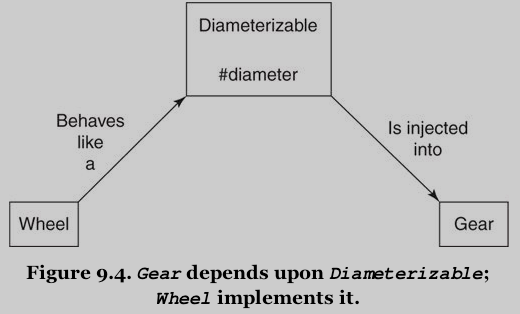
Figure 9.4: Gear depends upon Diameterizable; Wheel implements it.
This role is an abstraction. As with all abstractions, it is reasonable to expect this abstract role to be more stable than the concretion from which it came. However in the specific case above the opposite is true.
There are two places in the code where an object depends on knowledge of Diameterizable:
Gearthinks that it knowsDiameterizable's interface – it believes it can senddiameterto the injected object.- the code that created the object to be injected believes that
Wheelimplements this interface – it expectsWheelto implementdiameter.
-> Now Wheel has been updated to implement the new interface but unfortunately Gear still expects the old one.
The whole idea of dependency injection is that it allows you to substitute different concrete classes without changing existing code. You can assemble new behavior by creating new objects that play existing roles and injecting these objects where those roles are expected. OOD tells you to inject dependencies because it believes that specific concrete classes will vary more than these roles, or conversely, roles will be more stable than the classes from which they were abstracted.
Unfortunately, the opposite just happend! – In this example it was not the class of the injected object that changed, it was the interface of the role. It is still correct to inject a Wheel but now incorrect to send that Wheel the diameter message.
When a role has a single player, that one concrete player and the abstract role are so closely aligned that the boundaries between them are easily blurred and it is a practical fact that sometimes this blurring doesn't matter. -> If Wheel~s are cheap, injecting an actual ~Wheel has little negative effect on your tests. [ME: this means that you can use the actual collaborating objects in the test.]
When the app code can only be written one way, mirroring that arrangement is often the most effective way to write tests. Doing so permits tests to correctly fail regardless of whether the concretion (the name of the Wheel class) or the abstraction (the interface to the diameter method) changes.
However, this is not always true. Sometimes there are forces at work that drive you to wish to forgo the use of Wheel in your tests:
- If your app contains many different
Diameterizableyou might want to create an idealized one so your tests clearly convey the idea of this role. - If all
Diameterizableare expensive, you may want to fake a cheap one to make your tests run faster. - If you are doing BDD, your app might not yet contain any object that plays this role, you may be forced to manufacture something to write the test.
Creating Test Doubles testing double stubbing mock
This next example explores the idea of creating a fake object, or test double, to play the Diameterizable role.
class DiameterDouble def diameter 10 end end class GearTest < MiniTest::Unit::TestCase def test_calculates_gear_inches gear = Gear.new( chainring: 52, cog: 11, wheel: DiameterDouble.new) assert_in_delta(47.27, gear.gear_inches, 0.01) end end
A test double is a stylized instance of a role player that is used exclusively for testing. Doubles like this are very easy to make: nothing hinders you from creating one for every possible situation. It emphasizes a single interesting feature and allows the underlying object's other details to recede to the background.
This double stubs diameter, that is, it implements a version of diameter that returns a canned answer. The stubbed return value provides a dependable foundation on which to construct the test.
Many test frameworks have built-in ways to create doubles and to stub return values. These specialized mechanisms can be handy, but for simple test doubles it's fine to use plain old Ruby objects.
DiameterDouble is not a mock. Mocks are something else entirely and will be covered later in this chapter in the section ["Testing Outgoing Messages"].
Injecting this double decouple the Gear test from the Wheel class.
GearTest PASS test_calculates_gear_inches
This test uses a test double and is therefore simple, fast, isolated, and intention revealing. What could possibly go wrong?
Living the Dream problem stubbing mock
Imagine now that the code undergoes the same alterations as before (diameter -> width, and Wheel gets updated but Gear does not). This change breaks the app.
The test continues to pass even though the app is broken.
-> You have created an alternate universe: one in which tests cheerfully report that all is well despite the fact that the app is manifestly incorrect. -> Stubbing (and mocking) makes for brittle tests.
Writing better code requires understanding the root cause of this problem, which in turn necessitates a closer look at its components:
- The app contains a
Diameterizablerole. This role originally had one player,Wheel. - When
GearTestcreatedDiameterDouble, it introduced a second player of the role. - When the interface of a role changes, all players of the role must adopt the new interface. It's easy, however, to overlook role palyers that were constructed specifically for tests and that is exactly what happened here.
TODO Using Tests to Document Roles testing documentation
The role is nearly invisible. There is no place in the app where you can point your finger and say "This defines Diameterizable."
When remembering that the role even exists is a challenge, forgetting that test doubles play it is inevitable.
One way to raise the role's visibility is to assert that Wheel plays it:
class WheelTest < MiniTest::Unit::TestCase def setup @wheel = Wheel.new(26, 1.5) end def test_implement_the_diameterizable_interface # (1) assert_respond_to(@wheel, :diameter) end def test_calculates_diameter wheel = Wheel.new(26, 1.5) assert_in_delta(29, wheel.diameter, 0.01) end end
The (1) test introduces the idea of tests for roles but is not a completely satisfactory solution (woefully incomplete):
- it cannot be shared with other ~Diameterizable~s: other players of this role would have to duplicate this test. [ME: use module?]
- It does nothing to help with the "living the dream" problem from the
Geartest:Wheel~s assertion that it plays this role does not prevent ~Gear'sDiameterDoublefrom becoming obsolete and allowing thegear_inchestest to erroneously pass.
Fortuantely, the problem of documenting and testing roles has a simple solution, one that will be thoroughly covered in the subsequent section ["Proving the Correctness of Ducks"]. For now it's enough to recognize that roles need tests of their own.
The goal of this section was to prove public interfaces by testing incoming messages:
Wheelwas cheap to test.- The original
Geartest was more expensive because it depended on a hidden coupling toWheel. - Replacing that coupling with an injected dependency on
Diameterizableisolated the object under test but created a dilemma about whether to inject a real or a fake object.
This choice between injecting real or fake objects has far-reaching consequences:
- Injecting the same objects at test time as are used at runtie ensures that tests break correctly but may lead to long running tests.
- Injecting doubles can speed tests but leave them vulnerable to constructing a fantasy world where tests work but the app rails.
Notice that the act of testing did not, by itself, force an improvement in design – nothing about testing made you remove the coupling and inject the dependency.
While it's true that the outside-in approach of BDD provides more guidance than does TDD, neither practice prevents a naive designer from writing Wheel and then embedding the creation of a Wheel deep inside of Gear. This coupling doesn't make tests impossible, it just raises costs. Reducing the coupling is up to you and relies on your understanding of the principles of design.
Testing Private Methods
Sometimes the object under test sends messages to itself -> invoke methods that are defined in the receiver's private interface.
Sends of private methods cannot be seen from outside of the black box of the object under test, in the ideal world they need not be tested.
However, in the real world, this simple rule does not completely suffice. Dealing with private methods requires judgment and flexibility.
Ignoring Private Methods During Tests
Many reasons to omit tests of private methods:
- Such tests are redundant:
- Private methods are hidden inside the object under test and their results cannot be seen by others.
- these private methods are invoked by public methods that already have tests. A bug in a private method can certainly break the overall app but this failure will always be exposed by an existing test.
- Private methods are unstable: it's easy to create a situation where precious time is spent performing ongoing maintenance on unncecessary tests.
- Testing private methods can mislead others into using them: tests provide documentation about the object under test. They tell a story about how it expects to interact with the world at large. -> Your tests should hide private methods, not expose them.
Removing Private Methods from the Class Under Test
One way to sidestep this entire problem is to avoid private methods altogether.
An object with many private methods exudes the design smell of having too many responsibilities. If your object has so many private methods that you dare not leave them untested, consider extracting the methods into new object. The extracted methods form the core of the responsibilities of the new object and so make up its public interface, which is (theoretically) stable and thus safe to depend upon.
This strategy is a good one, but unfortunately is only truly helpful if the new interface is indeed stable. Sometimes the new interface is not, and it is at this point that theory and practice part ways. Methods don't magically become more reliable just because they got moved.
TODO Choosing to Test a Private Method
It is occasionally defensible to fling a bit of smelly code into place and hide the mess until better information arrives.
Hiding messes is easily done: just wrap the offending code in a private method.
If you create a mess and never fix it your costs will eventually go up, but in the short term, for the right problem, having enough confidence to write embarrassing code can save money.
When you intention is to defer a design decision, do the simplest thing that solves today's problem. Isolate the code behind the best interface you can conceive and hunker down and wait for more information.
Applying this strategy can result in private methods that are wildly unstable. Once you made this leap it's reasonable to consider compounding your sins by testing these unstable methods. [ME: you should test these private methods, the risk of breaking something is ever-present. These tests are costly and will likely be forced to change in lock-step with the underlying code, but every other option for keeping things running may be more expensive!
These tests of private methods aren't necessary in order to know that a change broke something, the public interface tests still serve that purpose admirably. Tests of privtae methods produce error messages that directly pinpoint the failing parts of private code. These more specific errors are tight couplings that increase maintenance costs, but they make it easier to understand the effects of changes and so they take some of the pain out of refactoring complex private code.
Reducing the barriers to refactoring is important, because refactor you will. That's the whole point. The mess is temporary, you intend to refactor out of it. As more design information arrives, these private methods will improve. Once the fog clears and a design reveals itself, the methods will become more stable. As stability improves, the cost of maintaining and the need for tests will go down. Eventually it will be possible to extract the private methods into a separate class and safely expose them to the world.
The rule-of-thumb for tesing private methods:
- Never write them.
- If you do, never ever test them, unless of course it makes sense to do so.
Conclusion: Be biased against writing these tests but do not fear to do so if this would improve your lot.
Testing Outgoing Messages query command
Outgoing messages:
- queries: matter only to the object that sends them.
- commands: have effects that are visible to other objects in your app.
Ignoring Query Messages
A simple example, where Gear's gear_inches method sends diameter:
class Gear # ... def gear_inches ration * wheel.diameter end end
- Nothing in the app other than the
gear_inchesmethod cares thatdiametergets sent. - The
diametermethod has no side effects, running it leaves no visible trace. - No other objects depend on its execution.
In the same way that tests should ignore messages sent to self, they also should ignore outgoing query messages. The consequences of sending diameter are hidden inside of Gear. Because the overall app does not need this message to be sent, your tests need not care.
Tests to prove the correctness of diameter belong in Wheel, not here in Gear. It is redundant for Gear to duplictae those tests. Gear's only responsibility is to prove that gear_inches works correctly and it can do this by simply testing that gear_inches always returns appropriate results.
TODO Proving Command Messages testing command where mock
Sometimes, however, it does matter that a message get sent: other parts of your app depend on something that happens as a result. -> In this case the object under test is responsible for sending the message and your tests must prove it does so.
A new example: imagine a game where players race virtual bicycles. These bicycles have gears. The Gear class is now responsible for letting the app know when a player changes gears so the app can update the bicycle's behavior.
class Gear attr_reader :chainring, :cog, :wheel, :observer def initialize(args) # ... @observer = args[:observer] end # ... def set_cog(new_cog) @cog = new_cog changed end def set_chainring(new_chainring) @chainring = new_chainring changed end def changed observer.changed(chainring, cog) end # ... end
Gearmeets this new requirement by adding anobserver.- When a player shifts gears the
set_cogorset_chainringmethods execute. These methods save the new value and then invokeGear'schangedmethod. - This method then sends
changedtoobserver, passing along the current chainring and cog.
Gear has a new responsibility: it must notify observer when cogs or chainrings change. When a player changes gears the app will be correct only if Gear sends changed to observer. Your tests should prove this message gets sent.
Not only should they prove it, but they also should do so without making assertions about the result that observer's changed method returns. – observer's tests are responsible for making assertions about the results of its changed method. -> The responsibility for testing a message's return value lies with its receiver. Doing so anywhere else duplicates tests and raises costs.
To avoid duplication you need a way to prove that Gear sends changed to observer that does not force you to rely on checking what comes back when it does. -> You need a mock.
Mock are tests of behavior, as opposed to tests of state. [ME: test doubles] Instead of making assertions about what a message returns, mocks define an expectation that a message will get sent.
The test below proves that Gear fulfills its responsibilities and it does so without binding itself to details about how observer behaves:
class GearTest < MiniTest:Unit:TestCase def setup @observer = MiniTest::Mock.new # (1) @gear = Gear.new( chainring: 52, cog: 11, observer: @observer) # (2) end def test_notifies_observers_when_cogs_change @observer.expect(:changed, true, [52, 27]) # (3) @gear.set_cog(27) # (5) @observer.verify # (4) end def test_notifies_observers_when_chainrings_change @observer.expect(:changed, true, [42, 11]) # (3) @gear.set_chainring(42) @observer.verify # (4) end end
[ME: expect(name, retval, args = [], &blk), refer to class Minitest::Mock]
[ME: (3) should be [42, 27], since the cog was changed in the test above? - No, because of random ordering is a feature of MiniTest. Use before instead of setup to reset @gear for each of the tests? - No, setup Runs before every test. Use this to set up before each test run. Refer to module Minitest::Test::LifecycleHooks]
The test passes only if sending set_chainring to gear does something that causes observer to receive changed with the given rgument:
- The test creates a mock (1) that it injects in place of the observer (2).
- Each test method tells the mock to expect to receive the
changedmessage (3) and then verifies that it did so (4).
The classic usage pattern for a mock:
- (3) tells the mock what message to expect.
- (5) triggers the behavior that should cause this expectation to be met.
- (4) asks the mock to verify that it indeed was.
Notice that all the mock did with the message was to remember that it received it. If the object under test depends on the result it gets back when observer receives changed, the mock can be configured to return an appropriate value. This return value, however, is beside the point. – Mocks are meant to prove messages get sent, they return results only when necessary to get tests to run.
Gear doesn't care what that method actually does, Gear's only responsibility is to send the message -> this test should restrict itself to proving Gear does so.
In a well-designed app, testing outgoing messages is simple. If you have proactively injected dependencies, you can easily substitute mocks. Setting expectations on these mocks allows you to prove that the object under test fulfills its responsibilities without duplicating assertions that belong elsewhere.
TODO Testing Duck Types duck typing testing role double
The Testing Incoming Messages section in this chapter wandered into the territory of testing roles, but it did not provide a satisfactory resolution.
This section shows how to create tests that role players can share and then returns to the original problem and uses sharable tests to prevent test doubles (or stubbing) from becoming obsolete.
Testing Roles best practic
The code for this first example comes from the Preparer duck type of Chapter 5 "Reducing Costs with Duck Typing":
# when you introduce TripCoordinator and Driver class TripCoordinator def buy_food(customers) # ... end end class Driver def gas_up(vehicle) # ... end def fill_up_tank(vehicle) # ... end end # if you happen to pass an instance of this class, it works class Mechanic def prepare_bicycles(bicycles) bicycles.each {|bicycle| prepare_bicycle(bicycle) } end def prepare_bicycle(bicycle) # ... end end
The first version: Trip is forced to check the class of each object to determine which message to send:
class Trip attr_reader :bicycles, :customers, :vehicle def prepare(preparers) preparers.each {|preparer| case preparer when Mechanic preparer.prepare_bicycles(bicycles) when TripCoordinator preparer.buy_food(customers) when Driver preparer.gas_up(vehicle) preparer.fill_water_tank(vehicle) end } end # ... end
The case statement above couples prepare to three existing concrete classes. Imagine trying to test the prepare method or the consequences of adding a new kind of preparer into this mix -> the prepare method is painful to test and expensive to maintain
If you come upon code that uses this antipattern but does not have tests, consider refactoring to a better design before writing them. Though it's always dangerous to make changes in the absence of tests, but this code is so fragile that refactoring it first might well be the most cost-effective strategy (the refactoring that fixes this problem is simple and makes all subsequent change easier).
The first part of the refactoring is to decide on Preparer's interface and to implement that interface in every player of the rols. If the public interface of Preparer is prepare_trip:
# when you introduce TripCoordinator and Driver class TripCoordinator def prepare_trip(trip) buy_food(trip.customers) end def buy_food(customers) # ... end end class Driver def prepare_trip(trip) vehicle = trip.vehicle gas_up(vehicle) fill_water_tank(vehicle) end def gas_up(vehicle) # ... end def fill_up_tank(vehicle) # ... end end # if you happen to pass an instance of this class, it works class Mechanic def prepare_trip(trip) trip.bicycles.each {|bicycle| prepare_bicycle(bicycle) } end def prepare_bicycle(bicycle) # ... end end
The following refactoring alters Trip's prepare method (which is the only member of the interface Preparable) to collaborate with ~Preparer~s instead of sending unique messages to each specific class:
class Trip attr_reader :bicycles, :customers, :vehicle def prepare(preparers) preparers.each {|preparer| preparer.prepare_trip(self) # <--- } end # ... end
Having done these refactorings you are positioned to write tests.
Your tests shoudl document the existence of the Preparer role, prove that each of its players behaves correctly, and show that Trip interacts with them appropriately.
Because several classes act as Preparer, the role's test should be written once and shared by every player. MiniTest is a low ceremony testing framework and it supports sharing tests in the simples possible way: via Ruby modules:
module PreparerInterfaceTest def test_implements_the_preparer_interface assert_respond_to(@object, :prepare_trip) # [ME: @object is not defined here!] end end
This module tests and documents the Preparer interface:
- it proves that
@objectresponds toprepare_trip.
The test below uses this module to prove that all three classes are ~Preparer~s:
- they include the module (1)
- they provide an
Preparerobject during setup via the@objectvariable (2)
class MechanicTest > MiniTest::Unit::TestCase include PreparerInterfaceTest # <---- def setup @mechanic = @object = Mechanic.new # <---- [ME: notice the pattern!] end # other tests which rely on @mechanic end class TripCoordinatorTest > MiniTest::Unit::TestCase include PreparerInterfaceTest def setup @trip_coordinator = @object = TripCoordinator.new end # other tests which rely on @trip_coordinator end class DriverTest > MiniTest::Unit::TestCase include PreparerInterfaceTest def setup @Driver = @object = Driver.new end # other tests which rely on @Driver end
Running these three tests produces a satisfying result.
The module PreparerInterfaceTest raises the visibility of the role and makes it easy to prove that any newly created Preparer successfully fulfills its obligations.
The test_implements_the_preparer_interface method tests an incoming message and as such belongs with the receiving object's tests. Incoming messages, however, go hand-in-hand with outgoing messages and you must test both sides of this equation. -> You have proven that all receivers correctly implement prepare_trip, now you must also prove that Trip correctly sends it.
[ME: best practice: test incoming messages -> test corresponding outgoing messages]
Proving that an outgoing message gets sent is done by setting expections on a mock:
class TripTest < MiniTest::Unit::TestCase def test_requests_trip_preparation @preparer = MiniTest::Mock.new @trip = Trip.new @preparer.expect(:prepare_trip, nil, [@trip]) # [ME: nil?] @trip.prepare([@preparer]) @preparer.verify end end
Trip is the only Preparable in the app so there's no other object with which to share this test. If other ~Preparable~s arise the test should be extracted into a module and shared among ~Preparable~s at tht time.
This completes the test of the Preparer role [ME: test both incoming & outcoming messages]. It's now possible to return to the problem of brittleness when using doubles to play roles in tests.
Using Role Tests to Validate Doubles
You can use the technique above to reduce the brittleness caused by stubbing.
In the "Living the Dream" section, the test contained a misleading false positive, in which a test that should have failed instead of passed because of a test double that stubbed an obsolete method (diameter -> width). The app is broken but you cannot tell it by running this test.
You last saw WheelTest in the "Using Tests to Document Roles" section, where it was attempting to counter this problem by raising the visibility of Diameterizable's interface.
With this test, you hold all the pieces needed to solve the brittleness problem:
- you know how to share tests among players of a role.
- you reognize that you have two players of the
Diameterizablerole. - you have a test that any object can use to prove that it correctly plays the role.
The first step in solving the problem is to extract test_implements_the_diameterizable_interface into a module:
module DiameterizableInterfaceTest def test_implements_the_diameterizable_interface assert_respond_to(@object, :width) end end
Once this module exists, [ME: *the second step*] reintroduce the extraced behavior back into WheelTest:
class WheelTest < MiniTet::Unit:TestCase include DiameterizableInterfaceTest def setup @wheel = @object = Wheel.new(26, 1.5) end def test_calculate_diameter # ... end end
Now you have an independent module that proves that a Diameterizable behaves correctly, you can use the module to prevent test doubles from silently becoming obsolete. [ME: *the third step*]
class DiameterDouble def diameter 10 end end # Prove the test double honors the interface this test expects. class DiameterDoubleTest < MiniTest::Unit::TestCase include DiameterizableInterfaceTest def setup @object = DiameterDouble.new end end class GearTest < MiniTest::Unit::TestCase def test_calculates_gear_inches gear = Gear.new( chainring: 52, cog: 11, wheel: DiameterDouble.new) assert_in_delta(47.27, gear.gear_inches, 0.01) end end
Now that the double is being tested to ensure it honestly plays its role, running the test finally produces an error:
DiameterDoubleTest FAIL test_implements_the_diameterizable_interface Expected #<DiameterDouble:...> (DiameterDouble) to respond to #width GearTest PASS test_calculates_gear_inches
The GearTest still passes errorneously but that's not a problem because DiameterDoubleTest now informs you that DiameterDouble is wrong. This failure causes you to correct DiameterDouble to implement width:
class DiameterDouble def width 10 end end
After this change, re-running the test produces a failure in GearTest:
DiameterDoubleTest PASS test_implements_the_diameterizable_interface GearTest ERROR test_calculates_gear_inches undefined method 'diameter' for #<DiameterDouble:...> gear.rb:35: in 'gear_inches' gear_test.rb:86: in 'test_calculates_gear_inches'
Now that DiameterDoubleTest passes, the GearTest fails. This failure points directly to the offending line of code in Gear. The tests finally tell you to change Gear's gear_inches method to send width instead of diameter:
class Gear def gear_inches # finally, 'width' instead of 'diameter' ration * wheel.width end # ... end
Now the app is correct and all tests correctly pass!
Not only does this test pass, but it will continue to pass (or fail) appropriately, no matter what happens to the Diameterizable interface. When you treat test doubles as any other role player and test them to prove their correctness, you avoid test brittleness and can stub without fear of consequence.
The desire to test duck types creates a need for shareable tests for roles, and once you acquire this role-based perspective you can use it to your advantage in many situations.
From the point of view of the object under test, every other object is a role and dealing with objects as if they are representatives of the roles they play loosens coupling and increases flexibility, both in your app and in your tests.
TODO Testing Inherited Code testing LSP contract
The last challenge: testing inherited code.
The example used here is the final Bicycle hierarchy from Chapter 6 "Acquiring Behavior Through Inheritance". Even though that hierarchy eventually proved unsuitable for inheritance, the underlying code is fine and serves admirably as a basis for these tests.
Specifying the Inherited Interface
Here's the Bicycle class as you last saw in Chapter 6:
class Bicycle attr_reader :size, :chain, :tire_size def initialize(args={}) @size = args[:size] @chain = args[:chain] || default_chain @tire_size = args[:tire_size] || default_tire_size post_initialize(args) # (1) end def spares { tire_size: tire_size, chain: chain} .merge(local_spares) # (2) end def default_chain # <-- common default '10 speed' end def default_tire_size raise NotImplementedError end # subclasses may override def post_initialize(args) nil end def local_spares {} end end
Here is the code for RoadBike:
class RoadBike < Bicycle attr_reader :tape_color def post_initialize(args) # (1) @tape_color = args[:tape_color] end def local_spares {tape_color: tape_color} end def default_tire_size # <-- subclass default '23' end end
The first goal of testing is to prove that all objects in this hierarchy honor their contract. The Liskov Substitution Principle declares that subtypes should be substitutable for their supertypes. Violations of LSP result in unreliable objects that don't behave as expected. The easiest way to prove that every object in the hierarchy obeys LSP is to write a shared test for the common contract and include this test in every object.
The contract is embodied in a shared interface. The following test articulates the interface and therefore defines what it means to be a Bicycle:
module BicycleInterfaceTest def test_responds_to_default_tire_size assert_respond_to(@object, :default_tire_size) end def test_responds_to_default_chain assert_respond_to(@object, :default_chain) end def test_responds_to_chain assert_respond_to(@object, :chain) end def test_responds_to_size assert_respond_to(@object, :size) end def test_responds_to_tire_size assert_respond_to(@object, :tire_size) end def test_responds_to_spares assert_respond_to(@object, :spares) end end
Any object that passes the BicycleInterfaceTest can be trusted to act like a Bicycle. All of the classes in the Bicycle hierarchy must respond to this interface and should be able to pass this test. The following example includes this interface test in the abstract superclass BicycleTest (1), and in the concrete subclass (2):
class BicycleTest < MiniTest::Unit::TestCase include BicycleInterfaceTest def setup @bike = @object = Bicycle.new({tire_size: 0}) end end class RoadBikeTest < MiniTest::Unit::TestCase include BicycleInterfaceTest def setup @bike = @object = RoadBike.new end end
Note: Random test ordering is a feature of MiniTest.
The BicycleInterfaceTest will work for every kind of Bicycle and can be easily included in any new subclass. It documents the interface and prevents accidental regressions.
TODO Specifying Subclass Responsibilities testing superclass subclass
Not only do all Bicycle~s share a common interface, _the abstract ~Bicycle superclass imposes requirements upon its subclasses_.
Confirming Subclass Behavior testing requirements
Because there are many subclasses, they should share a common test to prove that each meets the requirements for subclasses:
module BicycleSubclassTest # <--- [ME: notice the name of the test!] def test_responds_to_post_initialize assert_respond_to(@object, :post_initialize) end def test_responds_to_local_spares assert_respond_to(@object, :local_spares) end def test_responds_to_default_tire_size assert_respond_to(@object, :default_tire_size) end end
The test codifies the requirements for subclasses of Bicycle:
- It doesn't force subclasses to implement these methods, in fact, any subclass is free to inherit
post_initializeandlocal_spares[ME: they are defined inBicyclealready without raised exception. Refer to classBicycle. - This test just proves that a subclass does nothing so crazy that it causes these messages to fail.
- The only method that must be implemented by subclasses is
default_tire_size. The superclass implementation ofdefault_tire_sizeraises an error. -> This test will fail unless the subclass implements its own specialized version. [ME: If superclass raises exception in default implementation, subclass should implement to surpress the exception. If the superclass's default impmementation doesn't raise exception, the subclass doesn't have to provide an implmentation.]
RoadBike acts like a Bicycle so its test already includes the BicycleInterfaceTest. RoadBike should also act like a subclass of Bicycle:
class RoadBikeTest < MiniTest::Unit::TestCase include BicycleInterfaceTest # <---- [ME: test the contract!] include BicycleSubclassTest # <---- [ME: test the requirements imposed by superclass!] def setup @bike = @object = RoadBike.new end end
Every subclass of Bicycle can share these same two modules, because every subclass should act both like a Bicycle and like a subclass of Bicycle.
The BicycleInterfaceTest and the BicycleSubclassTest, combined, take all of the pain out of testing the common behavior of subclasses:
- These tests give you confidence that subclasses aren't drifting away from the standard.
- They allow novices to create new subclasses in complete safety: newly arrived programmers don't have to scour the superclasses to unearth requirements, they can just include these tests when they write new subclasses.
TODO Confirming Superclass Enforcement testing enforcement
The Bicycle class should raise an error if a subclasses does not implement default_tire_size. Even though this requirement applies to subclasses, the actual enforcement behavior is in Bicycle. This test is therefore placed directly in BicycleTest:
[ME: make sure the superclass doesn't work without a subclass.]
class BicycleTest < MiniTest::Unit::TestCase include BicycleInterfaceTest def setup @bike = @object = Bicycle.new({tire_size: 0}) # (1) end def test_forces_subclasses_to_implement_default_tire_size assert_raises(NotImplementedError) { @bike.default_tire_size } end end
Note: If you remove the tire_size argument from (1), this test dies in its setup method while creating a Bicycle. Without this argument, Bicycle can't successfully get through object initialization.
Bicycle is an abstract class that does not expect to receive the new message. It doesn't have a nice, friendly creation protocol. It doesn't need one because the actual app never creates instances of Bicycle. However, this doesn't mena this never happens.
This problem is ubiquitous when testing abstract classes. Creating a testable object is not always easy and you may find it necessary to employ a more sophisticated strategy. -> There's an easy way to overcome this general problem that will be covered below in the section [Testing Abstract Superclass Behavior].
[ME: -> Inheritance tests (for subclass behavior and superclass enforcement) which test common qualities, most of which are sharable and placed in modules. Refer to the following section.]
TODO Testing Unique Behavior testing unique behavior
The inheritance tests have so far concentrated on testing common qualities. Most of the resulting tests were shareable and ended up being placed in modules (BicycleInterfaceTest and BicycleSubclassTest), although one test (test_forces_subclasses_to_implement_default_tire_size) did get placed directly into BicycleTest.
Now that you have dispensed with the common behavior, two gaps remain – there are as yet no tests for specializations:
- neither for the ones provided by the concrete subclasses -> the following section concentrates on it.
- nor for those defined in the abstract superclass: the section after moves the focus upward in the hierarchy and tests behavior that is unique to
Bicycle.
Testing Concrete Subclass Behavior
Now is the time to renew your commitment to writing the absolute minimum number of tests. Look back at the RoadBike class. The standard modules already prove most of its behavior. The only thing left to test are the specializations that RoadBike supplies.
It's important to test the specialization without embedding knowledge of the superclass into the test. For example, RoadBike implements local_spares and also responds to spares. The RoadBikeTest should ensure that local_spares works while maintaining deliberate ignorance about the existence of the spares method. – The shared BicycleInterfaceTest already proves that RoadBike responds correctly to spares, it is redundant and ultimately limiting to reference that method directly in this test.
The local_spares method is clearly RoadBike's responsibility:
class RoadBikeTest < MiniTest::Unit::TestCase include BicycleInterfaceTest include BicycleSubclassTest def setup @bike = @object = RoadBike.new(tape_color: 'red') end def test_puts_tape_color_in_local_spares assert_equal 'red', @bike.local_spares[:tape_color] end end
Running RoadBikeTest shows that it meets its common responsibilities and also supplies its own specializations.
Testing Abstract Superclass Behavior testing stubbed subclass
Now that you have tested the subclass specializations it's time to step back and finish testing the superclass. -> A previously encoutered problem: Bicycle is an abstract class. Creating an instance of Bicycle is not only hard but the instance might not have all the behavior you need to make the test run.
Because you understand the LSP, you can easily manufacture a testable instance (stub) of Bicycle by creating a new subclass for use solely by this test:
class StubbedBike < Bicycle # (1) def default_tire_size 0 end def local_spares {saddle: 'painful'} end end class BicycleTest < MiniTest::Unit::TestCase include BicycleInterfaceTest def setup @bike = @object = Bicycle.new({tire_size: 0}) # (3) @stubbed_bike = StubbedBike.new end def test_forces_subclasses_to_implement_default_tire_size # (4) assert_raises(NotImplementedError) { @bike.default_tire_size } end def test_includes_local_spares_in_spares # (2) assert_equal @stubbed_bike.spares, { tire_size: 0, chain: '10-speed', saddle: 'painful'} end end
- (1) defines a new class, as a subclass of
Bicycle[ME: subclass tests should be applied here???] - The test creates an instance of this class and uses it to prove that
Bicyclecorrectly includes the subclass'slocal_sparescontribution inspares(2). - It remains convenient to sometimes create an instance of the abstract
Bicycleclass, even though this requires passing thetire_sizeargument (3). This instance is used to prove that the abstract class forces subclasses to implementdefault_tire_size(4).
The idea of creating a subclass to supply stubs can be helpful in many situations. As long as your new subclass does not violate LSP, you can use this technique in any test you like.
If you fear that StubbedBike will become obsolete and permit BicycleTest to pass when it should fail, you can use BicycleSubclassTest to ensure the ongoing correctness of StubbedBike:
# Prove the test double honors the interface this # test expects. class StubbedBikeTest < MiniTest::Unit::TestCase include BicycleSubclassTest # <--- [ME: hahaha, still get it!] def setup @object = StubbedBike.new end end
Conclusion:
- Carefully written inheritance hierarches are easy to test: Write one shareable test for the overall interface and another for the subclass responsibilities.
- Dilegently isolate responsibilities. Be especially careful when testing subclass specializations to prevent knowledge of the superclass from leaking down into the subclass's test.
- Testing abstract superclasses can be challenging. Use the LSP to your advantage.
- If you leverage LSP and create new subclasses that are used exclusively for testing, consider requiring these subclasses to pass your subclass responsibility test to ensure they don't accidentally become obsolete.
Summary
Tests are indispensable. Well-designed apps are highly abstract and under constant pressure to evolve. Without tests these apps can neither be understood nor safely changed. The best tests are loosely coupled to the underlying code and test everything once and in the proper place. They add value without increasing costs.
A well-designed app with a carefully crafted test suite is a joy to behold and a pleasure to extend. It can adapt to every new circumstance and meet any unexpected need.
Afterword
You've learned it all:
- responsiblities
- dependencies
- interfaces
- ducks
- inheritance
- behavior sharing
- composition
- testing
-> You should think differently about objects now than when you first began.
- Chapter 1 "OOD" stated that OOD is about managing dependencies. That statement is still true but it's just one truth about design.
- A deeper truth is that there is a way in which all objects are identical, regardless of whether they represent entire apps, major subsystems, individual classes, or simple methods.
- A single object never stands alone. Apps consist of objects that are related to one another. Objects are defined, not by what they do, but by the messages that pass between them.
- OOD is fractal. The central problem is to define an extensible way for objects to communicate, and at every level of magnification this problem looks the same.
This book is full of rules about how to write code – rules for managing dependencies and creating interfaces. You can bend them to your own purposes. The tensions inherent in design mean that these rules are meant to be broken – learning to break them well is a designer's greatest strength.
The tenets of design are tools and with practice they will come naturally into your hand, allowing you to create changeable apps that serve their purpose and bring you joy. Your apps will not be perfect but do not be discouraged. Perfection is elusive, perhaps even unreachable. This should not impede your desire to achieve it. Persist. Practice. Experiment. Imagine. Do your best work, and all else will follow.